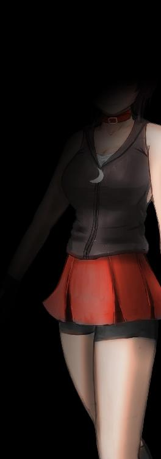
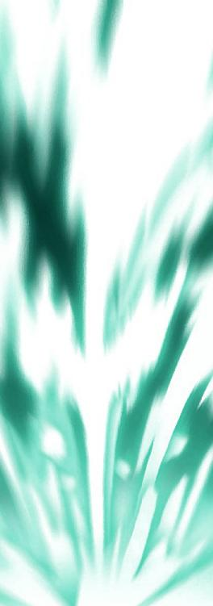
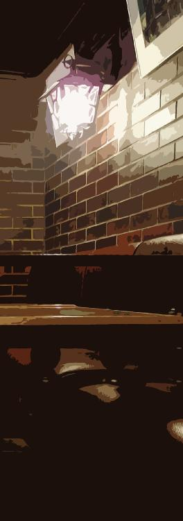

| トライメライ - 夢魔のイデア - (StarGazer) | |
| hoshimi12（星見拾弐） | |
| stargazer (2015) | |
トライメライ - 夢魔のイデア -
hoshimi12（星見拾弐）
「怪物と闘う者は、その過程で自らが怪物と化さぬよう心せよ。おまえが長く深淵を覗くならば、深淵もまた等しくおまえを見返すのだ」
－ フリードリヒ・ニーチェ 『善悪の彼岸』－
＃１
残夢（ざんむ）
明け方、うとうとと見る夢。
目が覚めても夢見心地であること。
見残してしまった夢。
◆
絵を描くことが好きだった。
想像の世界がそこに浮かび上がる、ただそれだけで楽しかった。
でもある時、僕はもっと楽しいことを知ってしまった。
ある女の子との出会いがキッカケだった。
彼女は僕の「絵本」を読んで、とても喜んでくれたのだ。
何かを目指すのに、高尚な理由なんて必要ないのかもしれない。
誰かに喜んでもらえたのが、単純に嬉しかった。
それからだ。
僕はプロの絵描きを志し、いつか絵本作家になるという「夢」を思い描いた。
だが......後悔するまでにそう年月はかからなかった。
大学卒業後、僕はとある制作会社に就職した。
絵描きとして独立するにも、まずはプロの現場での下積みが必要だと思ったのだ。......そういう風にリクルーターに勧められたのもある。
描いて描いて描いて描いて、とにかく描きまくった。
毎日、毎日、毎日、毎日、がむしゃらに働いた。
そして数年後の昼休み――
僕は会社から失踪した。
逃げるようにアパートに引き篭もり、己の無知に泣いた。
その会社の平均離職年数に届いた頃、同期はもう誰もいなかった。
夢を売り、夢を喰うような所だった。
そして更に数年後の、現在。
僕はまだ、絵描きを続けている。
......惰性でしかなった。
絵ばかりに没頭してきたから、他にまともな技能がない。
やがて僕は、カネのために手っ取り早くと、「二次創作」や「十八禁」に手を出すようになっていった。
オリジナルの絵本作家を夢見ていたはずなのに。
気がついたらレプリカのエロ本作家になっていた。
あまりに惨めだった。
オリジナルを描こうにも、すで個性を見失っている。
その欲求不満が、なおさら性を描かせる。
僕は夢を逆恨みした。
でもそれは、もっと惨めで、辛かった。
だから忘れることにしたんだ。
僕に夢を抱かせたあの子のことも。
僕の描いた夢は、失敗作だった。
一旦ぜんぶ真っ白に塗り潰した。
そしてその上に、がむしゃらに別のものを上描きしていった。
そのはずだった――

六月半ば頃。
そろそろ夏の暑さを感じる季節だった。
「ふぅ～......」
何度目の溜め息かわからない。
ここは安アパートの一室。
夢なんてマレーバクにでも喰わせてしまえ。
今を生きるため、僕は必死に、手っとり早くカネになる絵を描いていた。
作業はＨＭＤ（ヘッドマウントディスプレイ）一つで事足りる。
メガネ型のそれは、現実を拡張する。
例えば、紙のスケッチブックに「デジタルキャンバス」を投影したり、自分の指を筆代わりにすることも可能だ。
画材要らずに場所選ばず。なかなか便利で、仕事以外にも役立っている。風呂と就寝の時以外、滅多にそれを外すことはない。
（来ないな......）
描きかけの少女の肢体を前に、僕はガックリとうな垂れた。
モチベーションが限界だった。
描きたくて二次創作や十八禁をやっているわけじゃない。
カネのため、仕方なくだ。
しかし手抜きはできない。妙なこだわりが邪魔をする。
二次創作とはいえ、少女を可憐に描かないのは許せないのだ。
また行為は描かず、ヤロウを描く趣味もない。
ただ実直に、「不可侵の聖域」としてそれを描く。
ある種の変態性であることは自覚している。
『センスないんだからさァ、言われた通りに描いてればいいんだよ』
かつての上司の言葉が脳裏を過ぎり始める。
思考が堂々巡りになった証拠だ。
疲れている......。こういう時は何をやってもうまくいかない。
『才能がないんですよ』
『そんなに辛いのなら、もう諦めたらどうですか』
ダメ押しがやってきた。
なにより僕を追い詰めた「ファンメール」が、脳内をぐるぐる回り始める。
匿名。
独善と悪意に満ちた文体。
一人なのか複数なのかわからない。
疑心暗鬼でファンがファンに見えなくなった。
こんな奴らのために描いてるんじゃない。
じゃあ一体、誰のために描いているのか。
自分のためでしかないのか。
『そんなに辛いのなら、もう諦めたらどうですか』
貧乏揺すりが激しくなっていく。
思考がぐるぐるぐるぐるぐるぐるぐるぐるぐるぐるぐるぐるぐるぐるぐるぐるぐるぐるぐるぐるぐるぐるぐるぐるぐるぐるぐるぐるぐるぐるぐるぐるぐるぐるぐるぐるぐるぐるぐるぐるぐる、
（休もう）
僕はＨＭＤを外し、カビ臭い煎餅布団に倒れ込んだ。
（いつまで、こんな生活を続けるんだろう）
地元に戻ってきたのは一ヶ月ほど前。
それまでは帝都にいた。学生時代からずっと一人暮らしだ。
『もう帰ってきて、ゆっくり休みなさい』
電話で母親に言われた。
『お前は十分がんばった。今は休め』
普段は寡黙な父親にも言われた。
電話の後、僕は泣いた。
親の温情に対してか、自分の情けなさに対してか。
そして地元へ戻ったはいいが、実家には帰らなかった。
「いい歳こいて」というプライドが――オリジナルのプライドは捨てたくせに――邪魔をして、両親との同居を拒んだ。
今は貯金を切り崩しつつ生活している。
恋人はおらず、友人もごく少ない。
酒もタバコもギャンブルも風俗もやってこなかった。
薄給だったが、金は無駄に貯まっている。
しかしいずれは尽きるだろう。
イラスト仕事や同人誌の収入もあったが、近頃は制作ペースが遅く、赤字が続いている。
僕は目を瞑る。
すでに脳裏では品定めが始まっている。
次に「寄生」する人気コンテンツを、そろそろ探さなければならない。
（くだらねェ）
ここにあるのは夢の残骸だった。
早く眠りたい。
（早く目を逸らしたい）
夢を憎悪しているくせに、夢に逃げようとしている。
しかし待てども待てども、睡魔はやってこない。
心のどこかで、眠ることを恐れている。
またあの「悪夢」を、見てしまうのではないか――

結局眠れなかった。
僕は仕方なく外出することにした。
どうも不眠が続いている......。ストレスのせいだろう。
結果を残すことに躍起になって、空回っている。
アパートの外へ出ると、太陽に目が眩んだ。
まだ夜のつもりだったのに、時刻はすでに正午過ぎ。
日付感覚どころか、時間感覚もぼろぼろだ。
ひたすら街を彷徨い歩く。
数年ぶりに地元に戻ってきたはいいが、会いたい旧友はいない。
友達のいない子供時代ではなかったが、後ろめたかった。
......彼らの「幸せ」に近づきたくない。
実際、もう結婚して子供もいる同級も多いだろう。
対して僕は、一体なにをやっているのか。
こんな歳まで、僕は――
（もうやめちまえよ、創作なんて）
心の悲鳴が響く。
目の前の信号が赤に変わる。
今なら引き返せる。
Ｕターンして、実家のほうへ向かえばいい。
地元にコネのある両親に泣きつけ。
再就職先を斡旋してもらえ。
まだ、引き返せるぞ。
「うるせぇ......」
信号が青に変わる。
道路を横断していく。
行き場をなくしたゴミみたいなプライドが、もはや唯一の燃料だった。
「ん？」
横断歩道を渡り終えようとした時だった。
奇妙なことに気がついた。
対岸にいた若い女が、青信号だというのに、渡らない。
しかも女は、僕のほうをジッと見ている。
ジャージスカートのラフな格好。
肌は日焼けし、スポーツでもやってそうだ。
まだすこし垢抜けない。
そしてその顔には、驚愕の表情が浮かんでいる。
（誰だ？）
昔の知り合いだろうか。
それにしても、こんな反応をされる覚えは――
「にぃくん......？」
女の声が記憶をくすぐる。
どこか聞き覚えのある呼び方だ。
やがて女は、怯えたように一歩下がった。
「っ」
舌打ちのようなものが聞こえた。
かと思えば、女はキッと口元を結び、踵を返して走り出した。
まさかの全力逃走である。
突然のことで、僕は呆然と立ち尽くした。
変態にでも見えたか？ 否定はしないが。
（まさか）
ある記憶が脳裏をかすめた。
一人、思い当たる人物が浮上する。
よりによって、だ。
一番会いたくない人物に、再会してしまったかもしれない。
夢の残滓が胸の奥で疼いた。
外食チェーンで牛小鉢定食を注文する。
むしゃりむしゃりとやりながら、さっきのことを思い出す。
あの子は昔の知り合いだ。
母親同士が旧友で、そのよしみだった。
あれからずいぶん変わったものだ......。
当時はもっと背が低く、色白でやせ細っていた。
さっきみたいに走ることもできなかった。
本当に本人かと疑うレベルの変化だ。
にぃくん――
あの特有の呼び方がなければ、彼女とは思わなかっただろう。
『ごめんなさい。もう、会いたくないって』
ふとその言葉を思い出し、僕は眉をひそめた。
どうやら僕は、彼女に嫌われているらしい。
理由はよくわからない。当時、嫌われるようなことをした覚えはない。
むしろ慕われていると思っていた。
彼女の期待に応え、「理想のおにいちゃん」を演じていたつもりだ。
僕の勘違いだったのだろうか。
それとも、他に理由が――
『絵本作家さんになったら、イチバンにおしえてね！』
眩しい笑顔を思い出す。
ごめん、いまエロ本描いてるわ。
（会いたくなかったな......）
牛小鉢定食に意識を戻す。
特製ダレを放り込んで、味を変えていく。
大盛りでもワンコイン。自炊の面倒な独り身にはありがたい。
少しでも紅ショウガを多く入れ、食物繊維をとり、腹を膨らませる。
そして安アパートへ戻ったら、またエロい絵を描き始める
「くそ......」
思わずカウンターでうつむいた。
そう言えば、あの子の名前はなんだったか。
（思い出せない）
頭にモヤがかかってるみたいだ。
ろくな栄養をとらず、運動もせず、毎日ストレスばっかりで、脳機能が低下している。人とあまり喋らないから、発話能力だって落ちている。
やがてキーーーンと耳鳴りがした。
（またか）
たまに起こる「人工内耳」の不調だ。原因は不明。
店内の雑音が聞こえなくなる。
そしてクスクスと、「彼女」の声だけが聞こえ始める。
居るはずもないのに、背後に生温かい気配を感じる。
（また、キミなのか）
アパートに戻る頃には、強い眠気が訪れていた。
歯だけ磨いて、僕は煎餅布団に倒れ込んだ。
まだ日中だが、これ以上我慢できない。
睡魔はすぐに僕を誘った。
それから、いつもの「悪夢」の気配を感じた。
帝都で一人暮らしを始めてから、たびたび見るようになったものだ。
慣れない環境で友人もできず、創作活動も上手くいかず、「溜まっていた」のかもしれない。
今ではほとんど毎日のように見る。
それは、淫らな夢だった。

その夢にはニオイがない。
逆を言えば、ニオイ以外の感覚はおぼろげにある。
真っ暗な闇の空間――
そこに不定形の少女が現れる。
少女はぐにゃぐにゃと姿を変える。
日頃から少女ばかりを描いているせいかもしれない。
夢の中で僕は、夢であることを自覚している。明晰夢というやつだ。
しかし明晰夢であるはずが、思い通りにはできない。
常に僕は、彼女の支配下にあった。
彼女が望むものを、創り出し続けなければならない。
それが彼女の「食事」になる。
満足させられれば、甘美なご褒美がもらえる。
彼女は積極的に、淫らに動く。
不定形の「肉」をくねらせ、また僕にも、動くことを強要する。
食事を与えれば与えるほど、その肉は肥え、気持ちよくなっていく。
夢の中の僕は、ただ彼女のためだけに在った。
全ては、彼女に対する奉仕なのだ。
僕は彼女を愛していた。
だが同時に、強く恐怖していた。
その恐怖こそが――強い興奮を生む。
今日の彼女は、横断歩道で出くわしたあの子によく似ていた。
褐色で張りのある肌。豊満なバスト。
瑞々しく濡れ、小刻みに上下する。
獣のような息遣いが漏れ続ける。
やがて、高まりの絶叫が響いた。
彼女は恍惚の表情で僕を見下ろし、優しく撫でる。
「 」
彼女の唇が動く。
そして夢は終わる――

目を覚ました僕は、煎餅布団の上で頭を抱えた。
少女を犯した......もしくは少女に犯された。
言いようのない罪悪感で一杯になっていた。
眠ったはずが、疲労はむしろ蓄積している。
まるで精を吸い取られたかのようだ。
（病んでいる）
自覚はあった。
絵描きや物書きには、心を病む人間が多い。
創造主になろうという傲慢さへの罰か。
それとも単なる職業病か。
とはいえ僕は......二次創作者だが。
（医者へ行くべきか）
だが医者へ行ったところで、主観で大ざっぱな病名をつけられ、向精神薬で薬漬けにされるだけではないか――
『薬で心は治らない』
知人の漫画家の話を思い出す。
彼は、薬の副作用・奇異反応で衝動性が増し、自殺に走った。
その後何とか我に返り、別の療法に切り替えて断薬したが、トラウマや禁断症状、脳へのダメージは根深いという。
「自分で、なんとかしないと」
そうは思うが、頭が上手く働かない。
やはり適度に運動するべきか。あと、栄養もとらないと。
「腹......減った」
もそもそと煎餅布団から這い上がる。まるで亡者の様だと思った。
窓の外はまだ明るい。
何時間くらい寝ていたのだろう。
というか今日は、何曜日だったっけ。
......別にどうでもいいか。
僕はのろのろと身支度をし、部屋を出た。
（もう廃業しようか）
（僕には向いていないんだ）
心の悲鳴を聞きながら、急勾配の階段を下っていく。

街を彷徨い歩き、外食チェーンで食事。
デジャビュを感じながら、僕はなお歩く。
気がつくと公園の中にいた。
見晴らしのいい原っぱ。レンガ造りの道。控えめな数の遊具。
「ここは......」
大きな大学病院が向こうに見える。
そしてふと、当時のことを思い出した。
いや......当時のことを想ったからこそ、ここへ流れ着いたのか。
時は夕暮れ。赤みがかった曇り空に夕闇が迫っている。
美しく妖しい光景だ。どこか現実離れしている。
僕はまだ、夢を見ているのだろうか。
〈 〉
キーーンと耳鳴りが響いた。
まただ。また「彼女」の声を聞いた。
（どこからだろう）
僕は必死に彼女の声を辿った。
彼女のことが恐ろしいはずなのに、追い求めずにはいられない。

やがて黒い「穴」を見つけた。
僕はゆっくりと中に入っていく。
どこか見覚えのある空間だ。
奥に黒い陽炎が見える。
間違いない。彼女だ。
〈 〉
僕は求められるがまま、彼女のもとへ向かう。
夢か現か。どうでもいいか。
夢は無く、現も無い。此処は狭間。
黒い陽炎が蠢く。
彼女の「手」が僕に伸びる。
その手を、僕は――
〈 〉
どうして躊躇ったのだろう。
僕はその手を掴めなかった。
触れてはいけないモノのような気がした。
すると少女の手が、艶めかしく動く。
僕を誘っている。その手の動きに、目を奪われる。
思考はさらに混濁し、躊躇いは何処かへ消え失せていく。
「出して、あげるよ」
どうして涙が止まらないのだろう。
恐ろしいからか。それとも嬉しいからか。
そこにいる彼女を、底に居る何かを、救い、巣くい、掬いあげて、僕は、キミをすくい、ぼくが――
「さあ」
彼女の手を――黒い触手を掴み上げる。
地の底からごぽごぽとせり上がっていく。
闇は淫らな糸を引いて、やがて千切れた。
僕は手にしたそれを見やる。
〝黒い板〟だ。
斜めに割れ、鋭利な黒刃のようでもある。
手のひらで掴めるほどのサイズで、微かに透き通り、表面はつるつるしている。
と、突如そこに、大きな「一つ眼」が開かれた。
彼女だ。
やっと会えた。
〈 〉
彼女も悦んでいる。
そしてぱっくりと、口が裂けた。
彼女は嬉しそうに笑い――嗤いながら、僕を飲


ハッと目を覚ました。
（ここはどこだ）
記憶が途切れ途切れで混乱した。
さっきまで公園にいたはずなのに。
今はなぜか、闇の中でうつ伏せに倒れている。
「ふぐわっ!?」
起き上がった瞬間、僕は後頭部を強打した。
それでようやく居場所を理解した。
どうやらここは、トンネル状の遊具の中らしい。
（どうしてこんなところに）
意識を失う直前のことを思い出そうとするが、やはりよくわからない。
酒を飲んだ覚えはないが......。クスリだってやっちゃいない。
薄気味悪さを感じつつ、僕はトンネルの外へ出た。
それほど時間は経っていないらしい。
夕闇はまだ空にあり、昼夜の切れ目には満月が見える。
僕は改めて空に見惚れた。
って――そんな場合じゃない。
すでに閉園時間だ。
施錠されるわけではないが、セキュリティロボットが巡回している。早く去らないと、小うるさく警告されることだろう。
さっさと帰ろう。
そうして歩き出した時、ふと気がついた。
夜霧が出ている。
寒暖差のせいだろう。もう夏だというのに、空気がぐんと冷えている。
と、
（なんだ、あれ）
夜霧に紛れ、視界の奥に何かが見えた。
白いヒトだ。
だが、ただのヒトじゃない。
僕はにわかに恐怖を感じ、木陰に身を潜めた。
（巨人っ!?）
ジャングルジムが腰の高さにある。
白くぼんやりとしたその姿は、まるで煙のようだ。
雄叫びを上げながら、両腕をぶんぶん振り回している。
（誰かと戦ってる）
僕は目を凝らした。巨人の足元にその姿はあった。
褐色の肌。ラフなジャージスカート。
横断歩道で出くわしたあの子だ。
彼女の手には「光の大剣」が握られ、果敢に白煙の巨人へ挑んでいる。
あまりにも現実離れした光景だった。
それに、彼女の動き......。
跳躍力といい、瞬発力といい、明らかに人間離れしている。
（ＡＲゲームか？）
試しにＨＭＤを外してみると、案の定だった。
白煙の巨人は消え、光の大剣も消えた。
また、彼女がバイザー型のＨＭＤを着けていることがわかった。
おそらく拡張現実で「上描き」していたのだろう。
彼女の人間離れした動きもまた、拡張現実によるものだ。現実の彼女は手ぶらで、たまに前後左右する程度。座標情報だけは立ち位置に依存するらしい。
しかし何故だろう。
ゲームにしては、必死すぎる形相というか。
僕は再びＨＭＤを着け、その戦いを傍観する。
どうやら彼女は、ある地点を防衛しているらしい。
タワーディフェンスゲームか何かだろうか。
彼女の後方には、「ブランコの幻影」が映っている。
あそこに巨人が到達したら、負けなのだろう。
巨人を倒すというより、足止めに奔走しているようだった。
（あのブランコは）
記憶が蠢くのを感じる。
僕は再び彼女に視線を戻した。
劣勢だ......。このままでは押し切られるだろう。
（ゲーム、なんだよな）
不安になってきた。
彼女は巨人の攻撃を受けるたび、苦痛に顔を歪めている。とても演技には見えない。
やがて彼女は膝を折り、倒れた。
そのまま動かなくなる。
「お、おい！」
居ても立ってもいられなくなった。
僕は木陰を飛び出し、倒れた彼女のもとへ駆ける。
これが余計なことだったなら、あとで全力で謝ろう。
「大丈夫かっ!?」
抱き起こすと彼女は意識を回復させ、目を開けた。
僕を見た彼女は驚愕に顔を歪ませ、叫んだ。
「後ろ！ 危ない！」
視線は僕ではなくその背後に向けられていた。
慌てて振り返ると、白煙の巨人がいた。
右腕を天高く振り上げ、僕らに狙い澄ましている。
どうせゲームだ。僕はそうタカを括った。
だが、そのあまりの迫力に、身構えざるを得なかった。
巨腕が振り下ろされる。
結果、僕は彼女を庇う形になった。
（なっ――!?）
巨腕が背中に直撃した途端、それは起こった。
ＨＭＤの異常な挙動。
つんざくような怪音が響き、画面から極彩色の光がほとばしる。
そして僕は、「内側からの強い痛み」を感じた。
あまりの苦痛で僕は絶叫し、投げるようにＨＭＤを外した。
すると痛みは微かに薄まった。
「キミも外せ！」
「ダメです！ あれを護らないと！」
何から何までわけがわからなかった。こんな痛みを負ってまで、あんな幻影を守りたいというのか。
これはゲームなんじゃないのか。
「くそっ！」
悪態をつきながら三度ＨＭＤを着ける。
ＨＭＤ越しでしかあの巨人を知覚できないのだ。
（倒さなければ）
咄嗟にそう思った。
僕は咆哮し、巨人へ迫った。
徒手空拳。無我夢中だった。
「無駄です！ 物理攻撃は効きません！」
背後から彼女の声があったが、答える余裕はない。
僕は右拳を強く握りしめ、巨人の土手っ腹に打ち込む。
「えっ......？」
驚きの声は彼女のものだった。
巨人が、苦しみながら身体を半壊させたのだ。
やがて巨人は自棄になったように僕へ迫ってきた。
僕は異様な興奮を覚えつつ、それに対して身構える。
だが、
〈――――ヤメテ〉
不意に遠い声が聞こえた。
それからキーーンと耳鳴りが響き、人工内耳の付近に鋭い痛みが走る。
気を削がれてしまった。
そこを巨人は見逃さなかった。
そしてその目当ては、僕ではなかったらしい。
巨人はどすどすと走りながら、にわかに膨張し――
「避けてくださいっ！」
彼女の叫びで我に返った。僕は慌てて横へ飛んだ。
まもなく巨人は、白い閃光と共に爆発した。

「自爆かよ......」
白煙の巨人は跡形もなく消えた。
「これ、ゲームなんだよな」
右拳を見つめる。
そこにはもやもやした影が纏わりついている。
「それか、悪い夢を見て――」
言いかけて僕はふらついた。
受けたダメージが尾を引いている。
他にも重い脳疲労がある。
まるで、何時間もぶっ通しで絵を描いた後のような......。
「どうして」
彼女の声がした。
振り向くや否や、僕は襟首を掴み上げられた。
「どうして今さら戻ってきたんですかっ！」
何やら怒っている。せっかく助けに入ったのに、意味不明だ。
僕は思わず反発した。
彼女と同様、数年来の不満が爆発したのもあった。
「会いたくないって言ったのは、そっちのほうだろッ!!」
慕われていると思っていたのに、ある日突然、冷たく拒絶された。
僕はもやもやとしたものを抱えながら、何年も過ごしてきた。
彼女はキョトンとした顔で僕を見つめている。
「私、そんなこと言ったんですか？」
引っかかる言い方だった。
彼女は視線を外し、少し考えるような仕草をとる。
「もしかして、母から聞いたんですか......？」
言われて僕は思い出した。
あの日――電話がかかってきた。
『ごめんなさい。もう、会いたくないって』
確かにそれは、彼女の母親から聞いた言葉だった。
どうして。そう尋ねても、『複雑な年頃なのよ』とか、適当な理由ではぐらかされた。
「やっぱり」
僕の表情を見て彼女は確信したらしい。
以前から過ぎっていた考えでもあるのだろう。
やがて怒りの目で言った。
「母が、嘘をついたんです」
「嘘......？」
「私も同じようなことを聞かされていました。にぃくんはもう、私に会いたくないんだって」
信じられなかった。どうしてそんな酷いことをする。
「ひどく心配性なんです。手術のあとの私を、誰にも会わせたくなかったんだと思います」
その母親の姿を僕はおぼろげに思い出す。
化粧美人でセレブな風貌、甲高い声からは神経質な印象を受けた。
大きな手術の後で、娘を安静にしたかったということか......。
だが、本当にそれだけか？
「ずっと心配してたんだぞ」
「ごめんなさい......」
母親の代わりに彼女が詫びる。
まだ何か含みを感じたが、答えるつもりはないらしい。
ともあれ、ホッとした。
彼女に嫌われたわけではなかったのだ。
でも、
（どうして思い出せない）
さっきからむず痒かった。
「あのさ、ごめん」
「え？」
「名前、なんだっけ」
しーんと静寂が流れた。
彼女はぽかんと口を開けている。
「覚えて、ないんですか？」
「覚えてるんだけど......思い出せないというか......」
つまり忘れたということだ。
なぜ出てこないのだろう。大切な思い出であるはずなのに。
「カナエです。飛騨カナエ」
彼女は静かに答える。
怒りも哀しみもない。
どこか探るような目にも見えた。
「おばさんも忘れてましたよ、前に電話した時」
「えっ？ うちに電話したのか？」
「ええ。ずっと前ですけど」
そんな話を聞いた覚えはない。隠されてたのか。
「カナエ......」
彼女の名前を反芻する。
だが、やはり引っかからない。
僕は自分の頭を心配した。
（まさか、夢か？）
さっきの白煙の巨人といい......。
カナエとの再会だって、偶然にしては出来すぎている。
しかし、トンネルでぶつけた後頭部の痛みが、確かに「現実」を示している。
ニオイだってちゃんとある。カナエから柑橘系のやさしい香りを感じる。
「覚えてるんだ。覚えてるんだよ......。あのブランコで、よく話をした。もう撤去されたんだな......」
僕は幻影を振り返る。
カナエはあれを守っていた。
（どうして）
いよいよ気になった。
さっきの戦いは、一体なんだったんだ？
「あれ......？」
ふとそれに気がついた。
幻影に微かな「疵」が入っている。
もしや、さっきの自爆で――
『ピーピーピーピーピーピーピーピーピーピーピーピー』
やかましい電子音が思考を遮った。
振り返ると、腰の高さにそれはいた。
セキュリティロボット・ペンサキだ。
頭部が万年筆のペン先のようだからそう呼ばれている。
かなり古い機体だが、まだまだ現役らしい。
ペンサキが近づいてくると、カナエはポケットから何かを取り出した。
公園の夜間使用許可証のようだ。
それを掲示すると、ペンサキはカナエに対してのみ大人しくなった。
「にぃくんは、持ってないですよね。とりあえず出ましょうか」
「あ、ああ」
「よかったら少しお話していきませんか？ すぐそこに喫茶店あるんで」
僕は頷いて答え、カナエと共に公園の出口へと歩き出す。
「ん？」
そこでようやく、僕はその気配を感じとった。
ゆっくりと後ろを振り返る。
一仕事終えたペンサキが、勝ち鬨のようにくるくる回っている。
そして、その手前には――
「うわぁ!?」
思わず悲鳴を上げた。
「なんだこいつ！」
ペンサキではない。
どうやらカナエの背後にずっといたらしい。
存在感どころか、生命というものが感じられない......。
よく見れば、等身大の「人形」だった。
「オートマタですよ」
カナエが目配せすると、それは僕の目の前までやってきた。
灰色のボディには光沢がなく、薄暗がりによく馴染んでいる。釣り上がった大きな目は宇宙人のグレイみたいだ。耳からはイヤーデバイスという細長い端末を生やしている。
そして何故か......メイド服を着ている。
「この子はシャンティといいます」
カナエが紹介すると、シャンティは小さくお辞儀をした。
つられて僕も頭を下げた。
オートマタ。
元は軍事目的で開発された、機械人形。
ロボットとアンドロイドの中間にカテゴライズされる。
アンドロイドよりは安いが、それでも庶民には手の出ない高級品だ。
（そういや、金持ちだったな......）
僕はシャンティをまじまじと見つめた。
シャンティもこちらもジッと見ている。
何か言いたげのようでもあるが、その素体に口はない。
「シャンティ、先に帰ってて。ログの解析よろしく」
カナエが短く指示すると、シャンティはすぐさま反応し、小さくお辞儀をした。
夜道をてくてく歩いていく。
子供が見かけたらきっと泣くだろう。

「夜の喫茶店なんて初めて入った......」
「実は......私もです」
仄かな橙の照明、レンガと木造の店内。
なかなか洒落た感じだ。客層もどこかお上品に見える。
僕はすこし優雅な気分で、ジャスミンティーを口にした。
やがて対面のカナエが言った。
「今、えっちな本描いてるんですよね？」
「ボフッ」
ジャスミンティーが爆ぜた。
「だ、誰から聞いたんだよっ！」
「おばさんからです。おばさんは普通の漫画だと思ってるみたいですけど」
「ったく......誰にも話すなと言っておいたのに」
「一度青年誌に載りましたよね？ それがすごく嬉しかったみたいで」
「そう、なんだ」
胸が締め付けられるのを感じた。
カナエによれば、それで僕のペンネームを知ったらしい。検索したらサイトにぶち当たって、「えっちな本」の活動も知ったそうな。
「私はあの漫画、好きだったんですけど......」
「は、ははっ、まあ、色々あるからな」
話題を変えたくなった。
「まあ、よかったよ。てっきり嫌われたもんだと思って――」
「嫌うわけないじゃないですか！」
身を乗り出してカナエは言う。
僕はびっくりして、思わず笑ってしまった。
「すっかり健康的な感じだな」
「あ、いえ......これでもまだ、家庭療法とかは続けてます」
カナエは赤面して引き下がっていく。
「スポーツでもしてそうに見えるけど」
「あー、実はこの肌、日焼けじゃないんです。ホルモンとか血行とか肝機能とか、生理的な影響なんですよ」
言いながらカナエは、サラダとオムライスをぱくぱく食べている。
少なくとも食欲は増したようだ。
「このお店、前に二人で入ったんですよ。覚えてます？」
「えっ、そうだっけ」
「そうですよ。でも当時は食べきれなくて、にぃくんにほとんど食べてもらったんです。なんだかすごく懐かしい気分です」
随分とよく覚えている。
それに引き替え......僕と来たら。
「今の私がいるのは、にぃくんのおかげです。本当に感謝してるんです！ それで、ずっとずっと会いたいと思ってて。何度も『夢』に見てました。本当に――本当に逢えてうれしいです」
真っ直ぐな目に微かな潤みを見た。
釣られて僕も温かいものがこみ上げる。
と、その時だった。
またキーーンと耳鳴りがして、僕は耳を押さえた。
「大丈夫ですか？」
「あー......ごめん。よくあるんだ」
「でも、顔色が」
「疲れ溜まってるのかも。なかなか作業が進まなくて、寝不足気味でさ」
「もう、ちゃんとしないとダメじゃないですか......。絵描きさんは身体が資本でしょう？ 寝不足だから作業が進まないんですよ。非効率極まりないです」
カナエは呆れたように言う。
「じゃあ、そろそろ解散しましょうか。帰ってゆっくり休んでください」
カナエが伝票を取ろうとし、僕はギョッとした。
慌ててそれを奪い取る。
「おごるよ」
くだらない見栄だった。
カナエは驚いた顔を見せつつ、ブランド物の高そうな財布をバッグに戻していた。
僕は情けなさを感じながら、子供でも買えそうな財布を取り出し、レジ台で会計を済ませる。
「あのさ」
もうお開きだ。今しかない。
僕はようやくその話を切り出した。
「さっきの白いやつ、なんだったんだ？ 戦ってたみたいだけど」
返事まで間があった。
「ＡＲのゲーム、みたいなものです」
カナエはそれ以上答えず、僕から目を逸らす。
ゲーム。本当にそうなのだろうか。
まだ内側に粘っこい「痛み」が残っている。
「また今度、連絡しますね」
店外でアドレスを交換し、解散となった。
小さく手を振るカナエを見送る。
（連絡来なかったりしてな）
ネガティブに考えながら、僕は安アパートへ向かって歩き出した。

アパートに戻った僕は、部屋の掃除を始めた。
いい加減、生活を改めなければならない。
カナエとの再会が妙な刺激になっていた。
久々の掃除だ。
実はまだ、引っ越し用の段ボールがそのままという体たらく......。
それからふと、思い出した。
ノートＰＣを収納から引っ張り出す。
ＨＭＤを買うまでずっと使っていた愛機だ。
この中に、カナエと撮った写真があるはずだった。
「あれー？ どこだー？」
古いＵＩかつ、フォルダの場所も覚えていない。
途中でノスタルジックなエロデータを見つけたりもして、捜索は難航。
結局、二時間ほどかかった。ようやくそれらしいフォルダを見つけた。
しかし、
「おいおい......まじかよ」
写真のほとんどが破損していた。
他のフォルダでもそうだったから、イヤな予感はしていた。記憶装置がもうほとんどイカレているのかもしれない。背面部からは異様な熱を発している。
とはいえ、起動しただけでもよかった。
急いで諸々のデータを移し始める。
保存を待つ間、僕は改めて写真フォルダを見やった。
『夏休み ･ﾎ･ｾ･ﾟと』
フォルダ名が妙な文字化けを起こしている。
ホセって誰だよ。
（しっかし、もうこんなに経ったのか）
無事な写真の日付を見て、少しうんざりする。
まだ若者に区分されるとは思うが、歳の刻みを嬉しいとは感じない。
子供の頃は「早く大人になりたい」とか思っていたはずなのに。
それからふと、一枚の写真を見やる。
カナエとのツーショットだ。
（確か......）
確か病室で、看護婦さんが撮ってくれたものだ。
画像の三分の一ほど欠けているが、辛うじて二人とも写って見える。
この頃のカナエは小柄でガリガリ、今とはぜんぜん違っている。
『悪性の小児脳腫瘍』
少し前の時代だったら、死を待つしかなかったという。
幸い現代では、ハイテクな手術法が開発されている。
（確か「ＢＭＩ化」とかいう......）
最初カナエは手術を拒んでいた。
そこで僕に白羽の矢が立った。
規模こそ違うが、僕はそのＢＭＩ化の経験者だった。
その経験を活かして、カナエを励まして欲しいと頼まれたのだ。
（無事でよかったなぁ）
今のカナエの姿を思い出し、改めてホッとする。
僕は、手術を説得した張本人だ。
副作用の強い薬も、我慢して飲むように勧めた。
あれで彼女が助からなかったら、僕は自分を許せなかったと思う。
「ふわぁ～」
掃除も一段落して、眠気が襲ってきた。
僕は過去に想いを馳せつつ、布団に沈んだ。
また夢を見た。
しかし、いつものナイトメアとは違っている。
真っ白な世界......。誰かの泣いている声がする。
僕はその声を目指して歩き始めた。
しばらくして、ひとりの少女を見つけた。
どこか見覚えがあるような気がする。
カ――なんだったっけか。
最近再会した少女とすこし似ている。
でも、見れば見るほど、別人のようにも見える。
白い肌、白いワンピース......。
白い世界によく溶け込んでいる。
膝を抱え、うつむいて、ぐずぐず泣いている。
ガリガリだ。手脚が枯れ木のように細い。
その姿を間近で見て、僕はさらに驚いた。
少女の身体の一部が、欠けていたのだ。
それは表面的な欠損で、砂の像がさらさらと崩れたように、風化の痕を残している。
内側から「再生」しつつあるようだが、追いついていない。
「あっ」
白いワンピースの少女が僕に気がついた。
「にーくん！」
パッと顔を明るくし、飛びついてくる。
「やっと会えた！ わたしずっと待ってたんだよ！」
不思議だった。僕はその再会を、自然に受け入れていた。
夢だからだろう。
夢の中では、突拍子のないことでも自然に受け入れられるものだ。
「ねぇ、にーくん」
甘えるような声がする。
「わたしのカラダ、治して？」
少女からのお願いを受け、僕はその頭にポンと手を乗せる。
すると少女の「風化」が、みるみるうちに塞がっていく。
少女は大喜びだった。
ぴょんぴょんその場で飛び跳ねて、熱烈に抱きついてくる。
「じゃーおかえしに、リラックスさせてあげるね！」
少女は微笑みながら身体を預けてくる。
奇妙な感覚だ。少女がゆっくりと、沈み込んでくる。
いや......僕が沈んでいるのか。
「こうすると、おちつくでしょ？」
僕は頷いて答えた。
強張っていた何かが、緩んでいく。
一体なにを恐れていたのだろう......。
早くこうして、委ねてしまえばよかったのだ。
そして急に、僕は猛烈な罪悪感を覚えた。
謝らなければならない。僕は彼女に、悪いことをした。
「ううん、別にいいの。にーくんはあの時、わからなかったんだし。でも――これからはわたしの味方だよね？」
もちろん。僕は頷いて答える。
少女はまた大喜びした。
（誰だ？）
意識の一部が疑問を呈した。
だが、無駄だった。
少女に触れるたび、不安や疑問が霧散していく。
〈〈イノリだよ〉〉
頭の中に流れ込んでくる感覚があった。
一瞬恐怖を感じたが、すぐにどうでもよくなる。
これは夢だ。
「ねぇ、いっしょにゲームしよ？」
僕は頷いて答える。
白いワンピースの少女――イノリは、退屈している。
〈〈さびしかった。ずっと、ずっと、ずっと〉〉
満足させてあげなければ。
そう思って僕は、ゲームをその場に「創」り出した。
古今東西のテーブルゲーム。二人で出来るシンプルなものだ。
「すごいすごい！ にーくんすごいよ！」
イノリの喜ぶ顔を見ると、僕も嬉しくなった。
ついでに木製のアンティークテーブルも創り出す。
これまた気に入ってもらえたようだ。イノリは椅子に飛び乗り、にこにこしながらブロック状のゲームをテーブルへ散らし始めた。
「おはなしもイッパイしようね。『あの頃』みたいに」
僕は頷いて答える。
それからたくさん遊んで、たくさん話した。
イノリは楽しげだった。
楽しげに、僕との「思い出」を、かたり続ける――
数日後。
昼頃にカナエから連絡が来て、会うことになった。
近所にある緑道で待ち合わせだ。
「寝不足、解消しましたか？」
出会い頭、カナエは心配そうに尋ねてきた。
「ああ。もうすっかり」
どうして不眠なんかに悩んでいたのだろう。
そう思えるほど、今は眠ることが楽しみになっていた。
近頃は良い夢ばかりだ。
もう目覚めたくないと、思ってしまうくらいに。
「すこし、痩せましたか......？」
「そうかもな。ずっと寝てたから」
僕は首周りをさすりながら答える。
確かに輪郭がシャープになった気がする。
まあ、太り気味だったし、ダイエットだと思えば――
「眠るのも大切ですけど、栄養とらないのは本末転倒ですよ」
ぐうの音も出ない。
「というわけで」
「ん？」
「お弁当、つくってきましたっ」
カナエは照れくさそうに笑いながら、バッグからそれを取り出した。
僕はきょとんとした。
手作りのお弁当？
なんだそれは。青少年の夢か？
「あの、ご迷惑だったでしょうか......？」
「いやいやいやっ、そういうことじゃなくて」
迷惑ではなく、困惑していた。
どうしてこの子は、ここまで気遣ってくれるのか。
昔のことで感謝しているとは言っていたが......。
「ありがたく頂きます！ 外食以外、手料理なんて滅多に食えないし」
据え膳食わぬは男の恥。
いや、これだと言葉通りか。
「料理、得意なのか？」
「あー......いえ。普段はシャンティに作ってもらってるので、勉強がてらというか......」
シャンティ。
あのオートマタの名前だっけか。
「もしかして、料理初めて？」
沈黙が返ってきた。
何か、ベタな予感がした。
恐る恐る弁当の包みを開いていく。
カナエもじーっとそれを見つめている。
「あれ？ なんだっ、美味しそうじゃん！」
思わず口が滑った。
「どういう意味ですか？」
「いやいやいやっ、単に美味しそうだなーって」
しかし、まだ油断できない。
卵焼きだ。
大体それでわかるらしいぞ。塩と砂糖を間違えちゃったーとか。
「あれ？ 美味しいじゃん！」
また口が滑った。
中がとろっとしていて、実に美味しい。
他にも、タコさんウインナー、肉団子、ほうれん草の和え物とか。
どれもすごく美味しい。
「もっとベタなやつ想像してたんだけど」
「なんですかそれ」
「ごめん。職業病」
がつがつ弁当を平らげていく。
「にぃくん、けっこう食べるんですね」
「まあな。朝メシ抜いてたし」
「あの、それで、もしよかったら......」
「ん？」
「おかわり、あるんですけど」
カナエは申し訳なさそうにバッグへ手を伸ばす。
そしてもう一つ、弁当箱が現れた。
しかもかなりでかい。
要するにあれだ。作りすぎパターン。
「持って帰っていいか......？」
「ぜひそうしてください！」
それから弁当を突きつつ話を続けた。
だんだん互いに緊張もほぐれてきて、よく笑顔を見せ合うようになった。
話は大体、思い出話だ。
よくテーブルゲームで遊んだとか。盛り上がりすぎて医者や看護婦に怒られたとか。散歩中に車椅子が壊れたとか。
「車椅子が壊れたとき、病院まで抱っこしてくれましたよね？ タクシー呼べばいいのに、私がわがまま言って」
もっぱらカナエが話をして、「あー、そういえばそんなこともあったなー」みたいな感じで。
正直うろ覚えだった。
でも、カナエが楽しそうならそれでいい。
笑うと八重歯が見えて、すごく可愛らしい。
（これは現実だろうか）
ふと思った。
我に返る――とは違う。唐突な不安だ。
笑っている幸せ自分を、別の自分が、冷ややかに嗤っている。
「にぃくん？ 大丈夫ですか？」
カナエの声にハッとなった。
「ごめん......。お腹いっぱいで、ぼーっとしてきた」
「あははっ」
「いやー、めんぼくない」
この幸せは逃すまい。
僕は笑顔を作り続けた。

その夜。
また夢を見た。
白い世界で少女と過ごす夢。
「にーくんおかえりー！」
イノリはにこにこ僕を出迎える。
まるで此処が、「還るべき場所」であるかのように。
「ねぇ。おなか減っちゃったぁ」
イノリはすり寄りながら言う。
背後にはダイニングテーブルがある。
「自分で作ればいいだろ？」
「だってさぁ、にーくんがつくったやつのほうが、ずっとずっとおいしいんだもん！」
「めんどくさいだけだろ」
「そんなことないって！」
「ったく......」
僕は溜め息をつきつつ、意識を集中させ始める。
「お寿司ね！ 特上寿司のわさび抜き。イクラ多め！」
背中越しにやかましい注文。
仕方なく、僕はその通りのものを創り出した。
テーブルに白い靄がかかり、次々と寿司ネタが出現していく。
「やったー!!」
イノリは大喜びで椅子に飛び乗り、唇をぺろりと舐める。
「あーん」
目を瞑って大きく口を開ける。ピンク色の舌が覗く。
「最初は白身魚ね」
「はいはい......」
箸を折り、マゴチをつまむ。
イノリの小さな口でも大丈夫なように、サイズは調整してある。
「ほら、あーん」
「あーん」
毎日毎日、こんな調子だ。
おまけにずっと寿司だった。よく飽きないものだ。
「栄養偏るぞ」
「だいじょうぶだよ。ガリおおめに食べるし」
「そういう問題なのか......？」
「ほら次っ」
またあーんと口が開く。
イノリが好みそうなものを選んで、また放り込んでいく。
ついつい甘やかしてしまう。イノリの嬉しそうな顔を見ていると、なんだか僕まで嬉しいのだ。
（なに馴染んでんだよ）
理性の欠片が囁く。
しかし耳から耳へ、すーっと抜けていく。すぐにどうでもよくなる。
「ごちそうさま！」
最後のイクラ軍艦をぱくんと頬張り、イノリは僕のほうを向いた。
「ベッドまで抱っこして？」
「はいはい。かしこまりました」
いつものようにお姫様抱っこをする。
「また重くなったな......」
「だってにーくんのがおいしすぎるんだもん」
少し前までは枯れ木のようにやせ細っていたのに。
すっかりプニプニと肉付きがよくなっている。
「おっぱいも――大きくなってきたでしょ？」
イノリは顔を赤らめて言う。そこでハッと気がついた。
胸を掴んでしまっていた。
慌てて手をずらす。
「ふふっ」
やがて天蓋付きベッドに到着。
イノリは僕から降り、中へ滑り込んでいく。
「つぎは絵本よんで」
ベッドの隣には本棚がある。僕はそこから一冊抜きとり、イノリの傍で朗読をはじめる。
「よみづらーい。ねーねー、となりにきてよ」
イノリは横にずれ、ベッドの上をぽんぽんと叩く。
仰せのとおりに――僕はそこへ入り込む。
イノリはにっこり笑い、ぴったりくっついてくる。
「きもちいいでしょ？」
むずむず動きながら言う。それからほぅと息を吐く。
イノリの身体が、微かに沈み込んでいる。
いつもしてくれる不思議な「癒やし」だ。
「わたしも、きもちいいよ」
イノリは耳元で囁き、またむずむずと動く。
絵本は口実に過ぎない。
「もっとふかく繫がれば、もっときもちいいこと、できるかも」
声が響くたび、僕は痺れるのを感じた。
目の前の絵本が霞んで見える。
いや......これは絵本なんかじゃない。
白紙のスケッチブックだ。僕は何も読んじゃいない。
「このままいっしょに、眠っちゃおうよ」
魅力的な誘いだった。
だが――
「そう。まだなんだ」
寂しげな反応があった。
それからイノリは「ふぁぁ～」と大あくびをした。
「あー、もーだめ。おやすみなさ～い」
少女がベッドに溶けていく。
夢が終わる――

「にぃくん、ぼーっとしてますよ？」
「へっ？」
カナエの声で我に返った。
お昼時、緑道の東屋。
今日も隣り合わせで一緒に弁当をつまんでいる。
「また寝不足ですか？」
「いや......よく眠れてるはずなんだけど......」
六月は過ぎ、七月に入った。
再会からまだ一ヶ月も経っていない。
......だというのに。僕は異様な「密度」を感じていた。
それだけカナエとの日々が、充実していたということだろうか。
「このきんぴら、甘辛くてすんごく美味しいよ」
「よかったぁ。実はそれ、自信あったんです！」
カナエはにっこり微笑む。
相変わらず献身的だ。会うたび弁当を作ってきてくれる。
「そういえば、覚えてます？ あそこの病院の食事って――」
いつもどおりの展開だった。
ほぼ一方的な思い出話が始まる。
カナエは本当によく記憶している。
僕は相づちを打つばかりで、だんだん心苦しくなってきていた。
罪悪感だけじゃない。妙な感想を抱くようになったのだ。
（まるで「尋問」のようだ）
カナエが思い出を語る時の、眼差し。
僕の表情の変化を伺っている。
そのエピソードを覚えているかだとうか、確認している。
嫌な感覚だ......。気のせい決まっている。
「にぃくんが描いてくれた絵本、今でも大切にしてますよ」
絵本。僕は息を呑んだ。
同時にずきりと胸に痛みを感じた。
「今は絵本描いてるんですか？」
「いや......あんまり余裕なくてさ」
オリジナルどころか、二次創作すらおぼつかない現状だ。
カナエと再会してからは、求人情報ばかりを漁っている。
疲れた心が安定を求めている。
「それに、子供の気持ちとか、よくわからなくなってきたっていうか」
気がつくと正直に漏らしていた。
殺伐と生きてきた人間に、どうして子供向けの絵本が描ける......。
「子供向けとか、意識しないでいいんじゃないですか？ 今の絵本って大人もけっこう読むんですよ。私も読んでますし」
「へー、意外だなぁ」
「にぃくんの絵本が一番素敵ですけどね」
カナエは一片の恥ずかしさも見せずに答える。
僕は「思い出補正だよ」と苦笑いする。
「そういえば、学校は？」
少し勇気を出して尋ねてみた。
カナエは思い出話ばかりで、自分の「近況」を語りたがらなかった。
何か事情を抱えている。今日だって、平日の真っ昼間だというのに、こんな場所にいる。
「行ってません」
案の定の答えが返ってきた。
「入退院の繰り返しで、元からほとんど行けてませんでしたし。必要性もあまり感じないので」
カナエの表情を見るに、さほど思い詰めた様子はない。
「いずれ話そうとは思ってたんですけど、実はもう、仕事をしていて」
「えっ、そうなの？」
「個人でソフトウェアの開発とかやってます。駆け出しですけどね」
「ＩＴ系！ なんか意外だなぁ」
「意外ってなんですか」
カナエは笑いながらきんぴらごぼうをつつく。
それから急に、思い詰めたような顔を見せた。
箸を置いて僕のほうへ向き直る。
「それであの、もしよかったら」
「ん？」
「私といっしょに、仕事しませんか」
思わず目を見張った。
あまりにも突然だった。
「いま思いついたわけじゃないんです。そろそろ、パートナーが欲しいと思っていて。にぃくんとなら安心してできそうですし、それに――」
「ちょ、ちょっとさ」
慌てて制するが、カナエは引かなかった。
「創作活動が大事なのはわかってます。でも、『今のまま』で本当にいいんですか？ 将来とか不安じゃないんですか？」
呼吸が止まった。
視線と言葉が深々と突き刺さる。
「出過ぎたことを言ってすいません。でも、考えておいてもらえると嬉しいです」
カナエはブランド財布から一枚のカードを差し出す。
「一応作ってみました」
ＡＲ付きの名刺だ。
ＨＭＤ越しに起動させてみると、ＰＲ動画が再生されはじめた。
「この動画、自分で......？」
「まさか。依頼しましたよ」
企業顔負けのハイクオリティ動画だ。さぞ金がかかったに違いない。
事業内容はあまり理解できないが、散見される単語からして「ＢＭＩ」にまつわるソフトウェアを開発しているらしい。
ＨＭＤを着けたヒト型キャラクターが目を瞑っていて、その前には白いもやもやが――
「すごいなぁ」
率直な感想だった。
個人の域を逸脱している。協賛企業も有名どころばかりだ。
一番のスポンサーは「クジョウ」らしい。電子機器、発電プラント、不動産、鉄道車両、エンタメ、医療、軍需産業――なんでもござれの複合企業だ。
「まあ、コネがあったんで」
「コネ？」
「うちの父がクジョウ勤めなんですよ。オートマタのシャンティも、元はと言えばクジョウの社員割引で手に入れました」
「ほぇ～」
まぬけな相づちを打ちながら、僕は内心穏やかではなかった。
「一応言っておきますけど、絵を買わせる詐欺とかじゃないですよ？」
わかっている。アドレスは本物だし、なにより手が込みすぎている。
検索したら関連記事も出てきた。その記事でカナエは、「優秀な若手開発者」として紹介されていた。
凄すぎる。
（それに引き替え、僕ときたら）
カナエの成功を喜ぶ自分はいなかった。
静かな妬ましさを覚えていた。

数日後。
その日は何故か夢を見なかった。
僕は物足りなさを感じつつ、朝の身支度を始める。
今日もカナエと会う約束をしている。
だが、窓外を見てガッカリした。
「嵐じゃねーか......」
どうやら台風が近づいているらしい。
と、その時だった。
家のチャイムが鳴った。
（誰だ？）
玄関モニターに視線をやると、意外な人物が映っていた。
（シャンティ？）
カナエのオートマタだ。
激しい雨の中、歩いてきたらしい。せっかくのメイド服も暴風で乱れてしまっている。
僕は急いで玄関へ向かった。
「ん？ なんだそれ」
シャンティは風呂敷包みの箱を持っていた。
また、玄関へ出ると同時に、電子音が響いた。
カナエのからの着信だ。
〈すいません......連絡が遅れてしまって〉
声が重い。
〈体調を崩してしまったみたいで......。だけど、お弁当だけは渡そうと思って、シャンティに持たせました〉
「おいおい、ムリしないでいいのに」
呆れつつシャンティから弁当を受けとる。
「ありがたく頂戴するけど、こっちだって心配するんだからな」
〈すいません......〉
「ゆっくり休んでくれ。お大事に」
〈ありがとうございます......。また必ず、連絡しますから〉
通話が終わる。
それから改めて僕はシャンティを見やった。
「雨の中ご苦労さん。悪かったな、面倒かけて」
「いえ。お気になさらず」
「......ん？」
「夜になりましたら空箱をとりにまいります。――それでは」
シャンティは小さくお辞儀をし、踵を返す。
「ちょっ、ちょっと待て！」
「なんでしょう？」
「しゃべれんのかよっ!?」
「はい、しゃべれます」
静かで落ち着いた声だった。
電子音声特有のクセはあるが、なかなか流暢だ。
「まだなにか？」
「あ、いや。カナエに......よろしく伝えてくれ。あと、くれぐれもムリはするなって」
「かしこまりました」
シャンティは再びお辞儀をし、今度こそ立ち去っていった。
（なんか苦手だ）
というよりも、恐れているのかもしれない。
近年の技術向上は凄まじく、まるで人間のように、むしろ人間以上に......賢く思考するＡＩが現れ始めている。フレーム問題はとっくに解決済みだ。
いずれ人類に成り代わるのではないか――
危機感を煽る学者がいる。
もし「クリエイティブなＡＩ」が生まれてしまったら、肉体労働者以外の人間もいよいよ御役御免になるだろう。
（人形が描いた絵で、誰が感動するんだよ）
階段を下りていくシャンティの背中を睨む。
クリエイターとしてのプライドが敵意を生んでいる。
だが、
（（テメェも人形みてぇなもんじゃねえか））
ふっと怒りに虚しさが混じった。
それからまた、別の種類の熱を感じた。

その日の夜。
街が雨で静かだったおかげか、作業に集中できていた。
といっても制作ではなく、絵の練習をしていた。
奥底から込み上げてくる熱がある。
（オリジナルが描きたい）
でも、オリジナル（原型）ってなんだ？
描くたび僕は疑問に思った。
そこにはいつも、「自分だけではない何か」が在る。
さんざ二次創作を描いてきた弊害だろうか。
それとも――
（ん？）
家のチャイムが鳴った。
そこで思い出した。
夜、空箱を取りにくるとシャンティが言っていた。
「......ったく」
せっかく集中できていたのに。
僕は気を重くしながら玄関モニターを見やった。
しかし違った。
そこにいたのは、無機質な人形などではなかった。

（なんでカナエが）
玄関先にぽつんと立っている。
体調が悪いから会えない。そう言っていたはずなのに。
僕はムッとしながら玄関へ向かった。
「あのなぁ、ムリするなって言っ――」
ドアを開けるが、そこには誰もいなかった。
僕は混乱した。
悪ふざけだろうか。アパートの廊下へ出て、左右を見回す。
しかしカナエはどこにも隠れていない。
（じゃあどこに）
アパートの下からだった。かんかんと足音が聞こえる。
僕は身を乗り出し、階下を見やった。
道路の向こうへ消えていくカナエの姿がある。
「おい！ なにやってんだよ！」
呼びかけるがカナエは戻ってこない。
わけがわからない。
だが、緊急事態なのだと思った。
僕は舌打ちをし、サンダルのまま部屋を飛び出した。
すでに雨は上がっていた。
カナエのスピードも上がっている。
（意味わからん！）
その背中を追い続ける。もはや走っている。
運動不足の出不精にはあまりに過酷だ。
やがてカナエは、一瞬だけ振り返った。
笑っている......。確信犯だ。
「このやろうッ――舐めんなよッ!!」
男のプライドか。年上のプライドか。
どのみちくだらない何かで、僕は燃え上がった。
ブランド物の高そうな財布、高級なメイドオートマタ、ＡＲの名刺から飛び出したハイクオリティなＰＲ動画、名だたるスポンサー、そして先日の「誘い」から感じた、こちらの仕事への「軽蔑」。
僕はサンダルを脱ぎ捨てた。
それらを両手に握りしめ、また走り出す。
遠回りだろうがなんだろうが、ただがむしゃらにそれを追った。
「おら！ いい加減にしろ！」
無理に捕まえればケガをさせるかもしれない。
僕はカナエの背中に叫ぶ。
やがて観念したのか、カナエは減速した。
「わっ!?」
思わず抱きつくような形になってしまった。
二人とも汗だくだくだ。
「あーあ、つかまっちゃったぁ」
カナエは振り返り、無邪気な笑顔でジャージのファスナーを下ろす。
インナーに包まれた、汗ばんだ胸が露わになる。
「きもちよかったなぁ」
カナエは深呼吸しながら伸びをはじめる。とてもスッキリした顔だ。
（まさか、これが目的だったのか？）
ストレス発散のために、「追いかけっこ」に付き合わされたのか？
ふざけんなよ。
言葉にしようとしたが、荒い息ばかりが漏れる。
「ほらっ、クールダウンクールダウン！」
カナエは言いながらてくてく歩いていく。
僕は血の味を感じながら、そのあとを付いていく。
やがて例の公園に辿り着いた。
（なんだ......？）
キーーンと耳鳴りがした。
無理して走ったせいだろうか。
身体が、頭が、何かの異変を告げている。
「はやくぅ～」
カナエが手を振っている。
その姿に、何かが――誰かが、重なって見えたような気がした。

夜空が綺麗だった。
夏の暴風雨が穢れた大気を一掃したのだ。
満たされつつある月が、澄んだ闇に浮かんでいる。
彼女はそれを見上げていた。
『ピーピーピーピーピーピーピーピーピーピーピーピー』
不意にやかましい電子音が響いた。
セキュリティロボット・ペンサキ。夜間進入がバレたのだ。
「場所を移そう」
提案するが、彼女は首を横に振った。
そして何を思ったのか、ペンサキのほうへ近づいていく。
『パチッ』
微かな破裂音が響いた。
直後、ペンサキはしゅんと大人しくなった。
「いーこいーこ」
彼女がその頭部パーツを撫でる。
ペンサキは喜ぶように回転し、そのまま走り去っていく。
「いま、何をした......？」
「見えなくしただけだよ」
「見えなくした？」
ペンサキの「視覚」を操ったというのか。
「キミは、誰だ」
問いかけながら僕は混乱していた。
本当によく似ている。
いや......似ているなんてレベルじゃない。
「誰だとおもう？」
彼女は楽しげに問い返す。
むず痒い感覚だった。
出所がわからないのに、僕はその名前を知っている。
「イノリ......」
肯定の笑みが返ってきた。
「だいじょうぶ。身をゆだねて」
ぷにっと柔らかい感触。イノリに抱きしめられる。
触れ合う時、またキーーンと耳鳴りが響いた。
「やっと『ここ』でも会えたね」
イノリは耳元で囁く。甘えるように言い、身体をすり寄せていく。
覚えのある仕草だ。
そして僕は総毛立った。
感覚が持っていかれる感覚――
他に言いようのない、奇妙な感覚に襲われたのだ。
ヤバい。
本能よりも深い何かが、危険を訴えている。
僕は咄嗟に暴れ、イノリから逃れようとした。
だが、
「あんまり乱暴にすると、カナエの精神も傷つけることになるよ」
イノリは冷えた声で言った。
そしてもう、僕は動けなくなっていた。
ＨＭＤの異様な挙動――極彩色の猛烈な光と、耳を劈く激しいノイズ。
（これは）
例の「巨人」に攻撃された時とそっくりだった。
視覚と聴覚から、脳をぐちゃぐちゃにかき回されているような......。
「わたしを、感じて？」
カナエの姿をした少女――の、はずだった。
壮絶な違和感が脳を襲う。
目の前が、白濁した何かで塗り潰されていく。
気がつくともう、そこに「カナエの姿」はなかった。
白いワンピースに大きなリボン。
肌が白く小柄な少女。
それこそが本当のイノリの姿だった。
（拡張現実か）
ビジュアルを「上描き」しているのだ。
しかし......視覚だけじゃない。
豊満な胸の感触が、控えめな胸のそれに変わる。
背丈が縮んだ分だけ、イノリの位置を下に感じる。
対象への「認識」そのものが――
「はいっ、補正かんりょー！」
イノリは僕を見上げて言う。
天使のような笑みだった。
（僕は、狂ったのか？）
恐怖した。
イノリにも、自分にも、この世界にも。
「ふざけるなッ！ 夢だこんなもんッ!!」
もうボロボロだ。
何が夢で、何が現実なのか。
「よくそのブランコで、いっしょにお話したよね」
イノリがまた近づいてくる。
僕はずるずると後ずさりしていく。
「ゆ、夢が喋るんじゃねえ！ というかこれのせいなんだろッ――」
そうしてＨＭＤを外そうとした。
だが、
（外れない）
いや......違う。
外すという行動を、脳が拒絶している。
「だいじょーぶ。すぐに慣れるから。感覚いじったせいで、一時的に混乱してるだけだから」
少女が化け物に見えた。
逃げなければ、喰われてしまう。
狂気に飲まれてしまう。
（いやだ）
踵を返す。
だが、地面のくぼみに足を取られ、無様に尻餅をつく。
そんな僕に天使はそっと手を差し伸べる。
「さあ」
それは非現実からの誘いだった。
魅惑の天使の背中には、漆黒の闇が映えている。
その闇の向こうには、星々の美しい煌めきがあった。
＃２
白昼夢（はくちゅうむ）
起きたまま見る、夢のような空想。
空想によって願望を満たそうとする意識状態。
◆
「ふにゃっ!?」
不意にイノリが悲鳴を上げた。
顔をしかめて退いていく。
僕がその手を掴む間はなかった。
「もうっ、ジャマしないでよ！」
イノリは自分の首に手を伸ばし、「チョーカー」を引き千切ろうとする。
しかし苦痛に顔を歪め、上手くいかないようだった。
チョーカーは光を発し、バチバチと破裂音を響かせている。
まもなく変化があった。
イノリの姿が、薄れていく。
〈ごめんね！ ジャマが入ったから続きはま――〉
すでに声は遠かった。
イノリは笑顔を見せつつ、闇に溶けて消えていく。
代わりに現れたのは元のカナエの姿だった。
「まだ......大丈夫なはずなのに......」
カナエは苦しげに唸り、地面に膝をつく。
それからハッと顔を上げ、「ブランコの幻影」を見やっていた。
僕は眼中にないらしい。
「そんな......疵が......」
幻影の疵。白いヒビのようになっている。
カナエと再会した日、例の「巨人」が自爆をして、その被害を受けた。
ヒビは脈打ち、徐々に浸食しているようにも見える。
「にぃ、くん？」
ようやく僕の存在に気づいたらしい。
僕を見るカナエに、いつもの穏やかさはなかった。
怯え、狼狽え、ぶつぶつ喋りながら後退していく。
「おい、しっかりしろ！」
混乱しているカナエに呼びかける。
と、
『ピーピーピーピーピーピー』
こんなタイミングでペンサキが戻ってきた。
イノリの「補正」が解けたらしい。
早く出ていけと、僕の周りをぐるぐる回り始める。
「あっ!?」
止める間もなかった。
突然カナエは走り出し、出口のほうへ向かっていった。
「くそっ。もう追いかけっこはごめんだぞ！」
僕はその後を追った。

幸い、追いかけっこにはならずに済んだ。
カナエは公園の外で僕を待っていた。
「イノリのこと......知ってたんですね」
いくらか落ち着いた声だ。
「あんまり覚えてないけどな」
僕は曖昧に答える。
夢の中で出会った――なんて言う気にもなれない。
「ごめんなさい」
「なにがだよ」
「巻き込むつもりは、なかったんです」
「へぇ。そーかい」
甚だ疑問だった。
「今の子は、キミの『演技』か？」
一応確かめると、カナエはふっと微笑んだ。
それならどんなにラクか――そう言いたげな疲れた笑みだった。
演技ではない。
だったらもう、一つしかないような気がした。
「二重人格......？」
カナエは笑みを薄れさせ、沈黙した。
二重人格。解離性同一性障害とも呼ばれる。
心的外傷などの強い苦痛を「記憶喪失」として処理し、心を守ろうとする防衛的適応――その中でも一番重いものだ。
切り離した感情が、別人格として成長してしまう......。
「何かあったのか。辛いことが」
「原因のトラウマですか？ そんなものありませんよ」
「ない？」
「まあ、強いて言うなら、にぃくんとのお別れでしょうか」
非難めいた冗談だった。

公園の外のコンビニ前。
冷たい飲み物をあおり、お互い一息ついた。
「たぶん、にぃくんがイメージしてるものとは少し違いますよ」
オレンジジュースをちびちびやりながらカナエは答える。
「よく言われる解離性人格障害は、『ひとつの人格すら持てない状態』を指します。『私たち』の場合は、ほぼ完全に独立していますから。......二重人格は二重人格ですけどね」
心理的な障害ではない。
じゃあ「幽霊」でも取り憑いたのか？
それとも――
「あの手術が、原因なのか？」
「ええ」
短い返事が返ってくる。
「脳腫瘍を取りのぞいて、欠損部分をＢＭＩで補いました。そうしたらアラ不思議、人格が増えてしまったわけです」
ＢＭＩ（Brain-Machine Interface）。
あるいは「電脳」と呼ばれるモノ。
脳波解析し、出入力することで、様々な恩恵を得られるというサイバネティクス技術だ。......近頃になって調べ直した。
侵襲型と非侵襲型があり、僕やカナエのは侵襲型。脳に直接、特殊な電極装置が埋め込まれている。
もっぱら医療用の技術だが、軍事転用もされているらしい。
テレパシーやサイコキネシス（考えるだけで機械を動かす）、また、副次効果である高知能化や長寿命化――さまざまな「異能」について語られたネット記事があった。
「だから、今の私がいるのは、にぃくんのおかげなんです」
カナエは薄く微笑んだ。
その視線から感じたのは、感謝だけではない。
まもなく僕は、恐ろしい想像に襲われた。
カナエも暗にそれを匂わせている。
「どっちが、オリジナルなんだ......？」
恐る恐る尋ねた。
猛烈に嫌な予感がしていた。
「オリジナルなんて、いませんよ」
カナエは地を見つめて静かに答えた。
「どういう意味だ」
問いかけるが、カナエは答えなかった。

それからカナエを家まで送り届けた。
（でけぇ......）
邸宅と言っていいほどの敷地のデカさだ。
ただ、室内の灯りは乏しい。
「ご両親は」
「今はいません。地方暮らしです」
「出張？」
「母の療養のためです」
「病気なのか」
「病気と言っても、精神的なものですよ。『私たち』の相手をしていて、心を病んでしまったらしいです」
カナエはさらりと答える。
「まあ要するに、二人は私たちから逃げたんですよ」
「おい......そういう言い方はないんじゃないか」
「じゃあどういう言い方があるんですか？」
「実の両親だぞ。娘を想ってるからこそ、高額な医療費だって払ってた。きっと家を出ていったのだって、一旦距離を置いたほうがキミたちのためだと――」
「あの人たちが想ってるのは、世間体のほうですよ」
「カナエ......」
「あなたに嘘をついたのだって、『後遺症』を公にされたくなかったからです。うちの父がクジョウ勤めだって話はしましたよね？ 私のＢＭＩ化手術は、そのサイバネティクス研究の一環だったんですよ。にぃくんの人工内耳だって――」
カナエは一瞬、言うか言うまいか迷ったようだった。
だが結局、感情に任せることにしたらしい。
「あなたの人工内耳手術は、私の手術のテストだったんです」
「テスト......？」
僕は困惑した。
会社の研究だとか、手術のテストだとか。
「規模こそ違いますけど、同じ手術方式なんです。それで安全性を確かめてから、私に適用したんです。にぃくんの両親だって知っているはずですよ。代わりに医療費がタダだったんですから」
「なんだよ、それ」
知らなかった。聞かされていなかった。
しかし......思い当たらないわけではない。
両親は僕の「難聴」に負い目を感じていた。
そして我が家は、飛騨家のように裕福でもなかった。
「私もにぃくんも、実験用のモルモットだったんです」
両親としては善かれと思ったのだろう。
子供の難聴が治せる上、母にしてみれば旧友の頼みだ。それに、良くも悪くも二人は「古い」タイプの人間で、医療を盲信しているところがある。
（そうだったのか）
感謝はしなかった。だが、恨みもしなかった。
もやもやしていたものが、すこしだけ晴れた。
「どうしてそんな顔ができるんですか！ 私たちは利用されてたんですよ！」
カナエは不服のようだった。
私が怒っているのに、何故あなたは共感しようとしない――
「まあ、おかげで耳も良くなったし、ひとつの命も助かったし。感謝とは違うけど、結果的に良かったと思う」
「本気で言ってるんですか？」
「割とな」
「私たちが、あなたの知る『思い出の少女』じゃなくても、ほんとうに良かったって言えるんですか？」
請うような目だった。
「オリジナルなんて、いないんです。私とイノリは、元の記憶を失っています。あなたが命を救った子は、もうこの世にいないんですよ。私たちはただ、残された『絵日記』で、あなたのことを知っただけなんです！」
カナエは僕を見つめ、ぽろぽろと泣きはじめる。
ＢＭＩ化後の記憶喪失......。とある記事で見たような気がする。
「すいません。じゃあ、ここで」
カナエは涙を拭いながら門扉を開き、敷地に入っていく。
聞きたいことはまだたくさんあった。
イノリとは。白煙の巨人とは。なぜ争っているのか。どうして苦しんでいるのか。僕と日々を過ごした理由は。助けてほしいんじゃないのか。
しかし聞けなかった。
すでに多くの事実を突きつけられて、僕の頭はパンクしていた。
そうこうしているうちに、カナエは家の中へ消えていった。

たぶんあの「補正」のせいだろう。
吐き気やら頭痛やら、酔ったような感覚があった。
アパートに戻った僕は、泥のように眠った。
そして案の定、また夢を見た。
「カナエからすこし聞いたっぽいね」
白い世界に少女がひとり。
心なしか、辺りに物が増えているような気がした。
「ビーエムアイとかさー、わたしよくわかんないから。そこらへんの説明、カナエに任せようとおもって」
少女はどうやら風呂上がり（？）らしい。
濡れた頭にタオルを巻いて、マッサージチェアに座っている。
「わたし、バカなんだ。パパにもママにもカナエにも、頭が悪いって、ずっとバカにされてきた」
少女は大きく伸びをして立ち上がる。
頭のタオルをしゅるりと解き、僕のほうへ近づいてくる。
「それでずっと、ここに閉じ込められてたの。バカはメーワクだからって」
哀しみか怒りか。白い世界が静かに震えている。
気がつくと少女は、一冊の手帳を持っていた。
「にぃくんだけが、わたしの支えだった」
少女は手帳を見つめて呟く。うっとりとした目だった。
中身は「絵日記」らしい。
記憶を失う前に記されたもの......。
（カナエが言ってたやつか）
夢と現の記憶が、微かに繋がるの感じた。
ここにいる少女の名前も思い出した。
イノリ――
カナエのもう一人格だという。
しかしわからない。
「どうしてキミが、僕の夢にいるんだ？」
「んー、ちがうちがう。にーくんが、わたしの夢にいるの」
「え？」
「今のにーくんは、わたしが見てる夢ってこと」
どういうことだ。イノリが見てる夢？
じゃあここにいる僕は、「偽物」だっていうのか？
「ちがうよ。偽物なんかじゃない」
「どうしてそんなことが言える......」
「わたしはにーくんのこと、よぉーく知ってるから。だから完璧に、ここに『投影』できるの」
「所詮は、絵日記から得た情報だろ」
「ううん。それだけじゃない」
イノリはふわりと浮かび上がり、ワンピースをひらひらさせながら近づいてくる。現実ではあり得ない幻想的な光景だった。
やがてイノリは、僕の頬に両手を添えた。
こつんと、おでこをぶつけてくる。
「わたしたち、ずーっとつながってたでしょ？」
イノリの吐息が鼻にかかる。
僕は視界が霞むのを感じた。
そしてまた、トリップした。

気がつくとあの公園にいた。
逢魔が時――橙の空が美しい。
「ねえ知ってる？ ビーエムアイには『隠し機能』があるんだって」
隣のブランコに少女が座っている。
「〝てれぱしー〟が使えるようになるんだって。このまえチームの人たちが話してるの聞いちゃった。そーねん機能とかいうやつらしいよ」
少女の姿は黒い霧に覆われている。
でも、薄く微笑んでいるのはわかる。
「手術が成功したら、 が考えてること、にいくんに伝わっちゃうのかな？ はずかしいなぁ」
「大丈夫だよ。どうせウソだって」
「にいくんはイヤなの？ 考えてることが伝わっちゃうのって」
「そりゃイヤだろ。誰だって頭の中は覗かれたくないもんだ」
「 にも？」
「そりゃあ、まあ」
「えっちなこと考えてるの？」
「マセガキめ......。そんなんじゃないっての」
「マセガキってなに？」
「知らないでいい。――さっ、そろそろ時間だ」
僕は話を変えるように言い、ブランコから立ち上がる。
「ええー、もう？」
「日暮れまで約束だろ。ご両親も心配する」
置いておいた車椅子を引いてくる。
それから少女に肩を貸そうとするが、
「抱っこ」
少女は両腕を広げて微笑んだ。
近ごろワガママで困る......。
病人なのをいいことに、お嬢様のような扱いを求めてくる。
「はいはい」
「はいは一回」
溜め息を吐きつつ少女を抱き起こす。
「ねえ、もうちょっと高くして」
「うーん？」
「そーそー、こんなかんじ」
顔と顔が近い。
そして何を思ったのか、少女はこつんと、おでこをぶつけてきた。
「なんだよ」
「おまじない～」
「またか......ほんと好きだなぁ。なんのやつ？」
「ないしょっ」
少女は照れたように笑う。
取りまく黒い霧が、さらに濃くなったように見えた。
夕焼けの空が徐々に変色していく。
黒が、世界を浸食していく。
やがてトリップは終わった。

翌日。
僕はイノリと過ごした夢を、目覚めてもなお覚えていた。
そしていても立ってもいられず、アパートを出た。
正午過ぎ――僕は再度、飛騨家の邸宅を訪れた。
「はい、これ」
門扉まで出てきたカナエに、弁当の空箱を手渡す。
これが会いにきた口実だ。
「おいしかった。ありがとな」
門扉を挟んで沈黙が流れる。
カナエは空箱を手にしたまま、何か言いたげだった。
体調は回復したらしく、血色はいい。
「あのっ！」「外ですこし話さないか」
声が重なった。
「あ......うちでもいいですよ」
カナエは門扉を開き、僕を招き入れる。
せっかくだからお言葉に甘えることにした。
「昨日はその......ごめんなさい。ひどいこと言ったと思います」
「別にいいよ。あれが本音なんだろ」
「そんなことは......」
「それに、いろいろスッキリできた。ありがとな」
「やめてくださいよ......」
カナエは唇を噛んでいた。
思いがけず言いくるめられて、悔しかったのかもしれない。
「そういえばお昼、もう食べましたか？」
「まだだけど」
「それじゃあ作りますね！ リビングでゆっくりしててください」
玄関口でカナエは言い、足早に家の奥へ向かっていく。
まもなくそれは姿を現した。
「シャンティ、彼をよろしく！」
グレイのような機械メイド。
僕らは上がり框を境界に見つめ合った。
「いらっしゃいませ」
「ああ......どーも」
相変わらず苦手だ。

（落ち着かねぇ）
リビングで待っていたのは、お茶と沈黙だった。
僕はソファに座り、シャンティはその傍で立っている。
「座ったらどうだ......？」
「必要ありません」
「こっちには必要なんだよ」
「なぜでしょう」
「相手がいたほうがさ、お茶が美味しい時もあるんだよ。わかるか？ ヒューマンの繊細さ」
「わかりません。ですが、了解いたしました」
ようやく岩が動いた。
だが、
「真隣りかよ......」
「なにか問題が」
「いや、別にいい」
なかなか融通が利かない。
「最近のロボットって――」
「オートマタです」
「っ。最近のオートマタって、人間と一緒にごはん食べられるタイプあるよな。キミは食べれないのか？」
「食べられないです」
「そうか......」
会話終了。
しかしめげずに、僕は質問を続けた。
「特技は？」
「登録されていません」
「趣味は？」
「登録されていません」
「好きな音楽は？」
「登録されていません」
「スリーサイズは」
「秘密です」
なぜそこだけ秘密なのか。
とりあえず......ぜんぜん会話が噛み合わない。
「どんな質問なら答えるんだよ」
「『個性付け』されておりませんので、非常に簡単なプロフィールしかお答えできません」
「うへぇ」
「申し訳ございません」
おそらく「感情機能」もオフなのだろう。会話に手応えがない。
「いつからこの家にいるんだ？」
何気なく尋ねた。
これなら「個性」に関係ないと思ったのだ。
だが、その年月日を耳にして「ん？」となった。
「手術のあと、すぐか」
僕が帝都へ戻ったあと、すぐにシャンティは飛騨邸へやってきた。
母親が精神的に参っていたというし、代わりに我が子の面倒を見せようとしたのだろう。
「それじゃあずっと、彼女たちを見てきたんだな」
透き通ったガラスの球を見つめる。
僕の姿が歪んで映り込んでいる。
「二人は、どんな風だった？」
尋ねた。
間があった。
わかりづらい質問だったのだろうか。
と、まもなく、
「できましたよ～！」
エプロン姿のカナエがやってきた。
「ほらっ、にぃくん。冷めないうちに」
「あ、ああ」
促されて席を立つ。
シャンティを肩越しに見ながら、僕はダイニングへ向かった。
とろとろのオムライス。ほかほかの温野菜。
この前行った喫茶店のメニューを真似たものらしい。
食事は和やかに始まったが、避けて通れない話題があった。
やがて僕のほうから話を切り出した。
「その二重人格って、治らないのか」
カナエは静かに目を伏せた。
「『治す』ということは、片方を『殺す』ということです」
ひとつの人格すら持てない解離性人格障害と違う。
私たちの人格は、ほぼ完全に独立している。
だから、「統合」を目指す治療は、「間引き」の行為に他ならない――
「じゃあどうして争ってるんだ」
夜の公園で見た奇妙なゲームが思い出される。
光の大剣を手にしたカナエと、白煙の巨人に扮したイノリ。
あれこそが「人格の殺し合い」ではないのか。
「あのゲームで、殺すのか」
「......まさか」
カナエの目に微かな恐怖が浮かぶ。
「あれで勝てば、『支配率』を維持できるってだけです。イノリが消えるわけじゃありません。まあ......イノリは不自由だと思いますが」
不自由。真っ白な世界に、イノリはぽつんと一人でいた。
あれは心の牢獄か。
「仲良くしろよ」
「......できれば苦労しないですよ。イノリには厄介な性質があるんです」
それが原因であるようにカナエは答える。
「一部の電子機器に『干渉』できるんです。ＢＭＩの出力機巧を応用してるみたいで......。それで、拡張現実にも干渉を」
「干渉できると何が問題なんだ？」
「しばらく前に、それで交通事故が起こりました。運転手がＨＭＤのナビ機能を使っていた時に、イノリの干渉が入ってしまったみたいで」
走行中、突然視界が遮られた運転手はパニックに陥った。そしてハンドル操作を誤り、電柱に衝突した。
幸いケガはなかったが、危うく大事故になるところだった。
「ずっと噂になってたんですよ。『白い幽霊が現れる』って。まさかと思ってましたけど、その交通事故で確信して、無視できないと思いました。だから――」
カナエは首のチョーカーに触れながら言う。
微かな光が灯っている。ただのアクセサリーじゃない。
「だから私は、これでイノリを閉じ込めたんです」
なるほど、制御装置か。
「ただこれは、強い負荷には耐えられないんです。イノリが活性化し始めると、効力を一部失います」
効力を失うと、イノリが「表在化」する。
そしてそのコントロールを、イノリは上手くできない。
半ば「暴走」状態での表在化......。
「イノリは、危険なんです」
カナエは言い聞かせるように呟き、チョーカーを握りしめていた。
その後、僕らは庭へ出た。
「何するつもりだ？」
「ついでに仕事をお見せしようと思って」
「仕事って。このまえ話してたやつか」
突然パートナーになって欲しいと誘われた。やんわり断ったつもりだったが、カナエはまだ諦めていないらしい。
たしか、拡張現実のソフトウェア開発とか。
「ちょっとにぃくん、ＨＭＤ着けて――って、もう着けてますね」
「肌身離さずなものでして......」
「じゃあ、そのまま視覚共有モードで見ててください」
カナエはＨＭＤを着け、目を瞑る。一体なにを――
「おっ？」
カナエの目の前に、白いもやもやが生じ始める。
かと思えばそれは収束し、立体的な「映像」となった。
「バクか」
哺乳類ウマ目。「夢を喰らう」という伝承のある生き物だ。
イラストチックで目がくりくりしている。
しかし奇妙だった。
今カナエは、微動だにしていなかった。
ＨＭＤを操作するには、音声認識を使うなり、投影された仮想パネルをタッチするなりしなければならないはず。
「どういうカラクリだ」
「想念機能ですよ」
「そーねん？」
どこかで聞いたような。
「まあ、知名度低いので『隠し機能』って呼ばれることもありますけど。にぃくんのＨＭＤにもちゃんと搭載されているはずですよ」
まもなくだった。生み出されたバクは白いもやになって消えた。
一定時間しか維持できないらしい。
「確か想念機能って、ＢＭＩの機能じゃ」
「あっ、知ってるんですか！ そうなんですよ。実は最近のＨＭＤって、非侵襲型ＢＭＩとしても振る舞うように設計されていて――」
非侵襲型ＢＭＩ。つまり「外付けＢＭＩ」ということだ。
ただ、僕らの脳内にある侵襲型とは違い、脳波を読みとる精度は格段に落ちると言われている。
「つまりなんだ。『イメージをカタチにできる』ってことか？」
「そんなところです」
「すげーな......。これをキミが」
「あ～、いえ。正確に言うと、想念機能自体はデフォルトの機能で。私が作ったのは拡張ソフトのほうなんです。精度の低い非侵襲型ＢＭＩを、パワーアップさせるもの――といいますか。まだ認可は下りていないんですけどね」
つまりなんだ。どっちみちすげーってことか。
「侵襲型ＢＭＩと併用すれば、もっとすごいことができますよ」
カナエは含むように言ってＨＭＤを外す。
僕は無意識に、耳に手をあてていた。そこには侵襲型ＢＭＩ――クジョウの人工内耳がある。
「もっとすごいことって、あの〝ゲーム〟みたいなやつか」
光の大剣と白煙の巨人。
カナエとイノリはそれぞれの「イメージ」を戦わせていた。
イメージが傷つけば、二人とも精神的な痛みを負う......。
「ロクなもんじゃないだろ、あれ」
「今はそうかもしれません。でもあの現象を応用できれば、『面白いこと』ができると思いませんか？」
カナエの目に、僕はゾクリとした。探求に燃える黒い炎を見たのだ。
そして思い出した。
あの日の夜、シャンティが戦いに立ち会っていた。
『先に帰ってて。ログの解析よろしく』
間違いない。カナエはあの戦いで、データの収集をしている。
「イノリが危険だからとか言ってたくせに......。キミはあの戦いを利用してるのか？」
「言い方が悪いですよ。私はただ、技術者の端くれとして、あの現象に興味があるだけです」
「あんなもの、一刻も早く終わらせるべきだろ！」
「わかってますよそんなこと......。早く終わらせるためにも、データを集めることは有意義だと思いますけどね。あと、言っておきますけど、あれは意図したものじゃないんです」
「意図したものじゃない......？」
「あれは、私たちの『無意識』が創りだしたゲームらしいんです」
らしい。カナエは曖昧に答えた。
「よくわかってないのか」
「だから、研究するんですよ。人間の脳が完全解明されてないように、ＢＭＩ技術もまだまだブラックボックスなんです」
「ＡＩ技術は発達してるくせになぁ」
「ＡＩと人間の脳は違います。それに、ＡＩだってまだまだ研究過程です。『原型』を開発したニューマン社が超機密主義で、情報をぜんぜん公開してないって背景もありますし」
話の傍ら、シャンティの姿が目に入る。リビングで掃除中のようだ。ガラス質の目は動かず、こちらを見ているかはわからない。
「無意識ねぇ」
僕はなんとなくＨＭＤを外した。手で軽く弄ぶ。
「無意識が具現化したって言うのかよ」
「そう推測しています」
「こわいな」
「こわい？」
「ヒトって、外面をいくら繕ったって、腹にはどす黒いモノを抱えてるもんだろ。そういうのが無意識に具現化しちゃったら、こわいよな」
「私は逆ですね」
「逆？」
「ヒトの頭の中には、無垢で綺麗なものもたくさんあります。それを現実世界に出力できたら、きっと素晴らしいと思います」
僕は思わず笑ってしまった。
「キミってもっと、クールなリアリストかと思ってたのに」
カナエはぴくりと眉を動かす。顔が赤らんでいる。自分の「夢」をバカにされた恥ずかしさと、怒りか。
「えっちな本を書いてる人に言われたくないです！」
カナエは声を荒げた。お返しだと言わんばかりに僕の「夢」を攻撃した。
だが僕は譲らなかった。
「キミにこそ言われたくないな」
カナエの言っていることには、大きな矛盾がある。
何が無垢だ。何が綺麗だ。
本人だってよくわかっているはずだ。
「キミたちはそれで、醜い争いをしてるんじゃないか」
図星に違いない。カナエは唇を噛み、僕を睨んできた。
「わかってますよそんなこと！ あなたに言われたくないです！」
カナエはヒステリックに叫ぶ。
激情家としての一面......。これこそがイノリとの関係悪化の一因なのだろう。イノリからも似たような気質を感じるし、尚更か。
「あっ」
不意にカナエが気の抜けた声を上げた。
頭に血が上ったせいか、ふらついている。
僕はカナエを縁側まで連れ、ゆっくりとそこへ座らせた。
「今日はもう帰るわ。キミも休んだほうがいい。何かあったら、いつでも呼んでくれていいから」
カナエは返事をしなかった。うつむき、拗ねたように口を尖らせている。
「ごはん美味しかったよ」
食事の礼を言って踵を返す。
大人な態度を心がけながら、たぶん僕も感情的になっていた。

飛騨邸を出てしばらく歩いた頃だった。
背後に気配を感じた。
「シャンティ？ どうした」
「これを」
そう言ってシャンティは封筒を差し出す。
僕は目を細めつつそれを受けとった。
『にーくんへ』
手紙のようだ。胸騒ぎがしてその場で封を切った。
（イノリか）
表在化し、肉体を支配していた時に書いたものらしい。
『カナエはうそつきだから、信じちゃダメ』
『わたしをたすけて』
『首のチョーカーさえ外せば、わたしは自由になれる』
『この手紙のことは、カナエに言わないで』
現実世界でわざわざ手紙を寄越す......。
夢の内容を僕が覚えているか、その確認の意味もあったのだろう。
（イノリは、僕を利用するつもりだ）
カナエだってそうだ。二人とも打算で動いている。
「どうか、彼女を救ってあげてください」
シャンティが言った。
僕は手紙から顔を上げ、無機質な目を見つめる。
疑心暗鬼。
この人形ですら、打算で動いているのではないか。
そもそもコイツは、「どっちの彼女」の味方なんだ？
「では」
シャンティはぺこりと頭を下げ、引き下がっていく。
僕はその背中をジッと見送った。

翌日。
僕はアパートでダラダラ過ごしながら、イノリの手紙を読み返していた。
作業には集中できていない。
情報過多だ。慣れないことの連続で、頭が参っている。
そして正午頃――玄関のチャイムが鳴った。
まさかと思って出てみれば、弁当箱を抱えたカナエだった。
「お昼......いっしょに食べませんか？」
気まずい沈黙が流れた。
昨日のイザコザが思い出される。疑心暗鬼の感情も。
「どうしていつも、手作りなんだ？」
中に何か入っているのではないか。危うい妄想が過ぎる。
カナエはすこし照れたように微笑んだ。
「昔、約束したらしいですよ」
らしい......。
また絵日記の情報か。
「覚えてませんか？」
「うーん」
するとカナエは眉をひそめた。
不安げなような、哀しげなような。
読み取りづらい複雑な表情だった。
「弁当作るって約束したのか？」
「まあ、そんなところです」
カナエは短く答え、それ以上は語らない。
（そう言えば）
僕はこっそりカナエの首元を見やった。
『首のチョーカーさえ外せば、わたしは自由になれる』
切実な内容が思い出される。
「どうかしましたか？」
「いや」

今日は公園で食べることにした。
ベンチに横並びに座る。食事の間、お互い口数は少なかった。
「なにか用があったんじゃないのか？」
食後に僕は尋ねた。少し冷たい言い方だったかもしれない。
「実は、お願いしたいことがあって」
「なんだ」
「私の拡張ソフト、使ってみて欲しいんです」
「ええっ!? あれをっ!?」
「なんですか......そんなにイヤですか」
「いや、だってさぁ」
安全性に疑問がありすぎる。
その拡張ソフトとやらのせいで、イノリは表在化できるようになり、奇妙なＡＲゲームが構築されたという。
それに僕はまだ、あの時の激しい「痛み」を忘れていない。
「大丈夫ですよ。条件がぜんぜん違いますし」
「そんなこと言ってもなぁ」
「お願いします！ もしかしたらそれで、戦いを止められるかもしれないんです！」
僕は目を細めた。
信用していいのか？
「わかったよ」
数瞬悩んで、半ば投げやりに答えた。
疑ってばかりは疲れる。
「ありがとうございます！」
カナエはパッと顔を明るくし、仮想パネルを操作し始める。
すぐにファイルが飛んできた。
「まあ、『キミたち』の役に立てるなら」
言いながらカナエの表情の伺う。
善意か、悪意か。
......わかりなどしなかった。
（勘ぐりすぎだ）
僕は仮想パネルをぽんと叩き、インストールを行った。
「どうやって使うんだ」
「いま初期画面が表示されてますよね。その状態で、イメージを出力してみてください。試しに昨日の『バク』なんかどうですか」
「イメージを出力......って言われてもな」
「集中が大事です。まず、思い出してください。それから目を瞑って、暗闇の中にイメージを浮かべてください。そっと、やさしく、すくい上げるみたいに」
言われた通りにしてみる。
まず、目を瞑る。
それから闇の中にイメージを浮かべる。
そっと、やさしく、すくい上げるみたいに――
（（まだ早い））
やがて僕は目を開けた。
「なんだこれ......」
目の前にバクなどいなかった。
黒いもやもやした影が浮いているだけ。
不発......？
「あの時と同じですか」
カナエは目を細めてそれを見ている。
あの時。
カナエを守ろうと、僕は白煙の巨人を攻撃した。
その後自分の拳を見ると、黒い影が纏わりついていた。
「拡張ソフトを併用すれば、もっとすごいことができると思ったんですが......」
カナエの目に失望が見える。
「すいません、私に合わせて開発しているので、にぃくんの波長には合わなかったのかも......。バクならぬバグというか。なんちゃって」
虚しいフォローだ。
僕は無性に悔しかった。
まもなく黒い影は、宙に溶け込んで消えていった。
「役に、立てないか......？」
「そんなことないですよ」
カナエは優しく微笑んで答える。
その視線は、ブランコの幻影のほうへ流れていった。

その夜。
また夢を見た。
「手紙のこと、言わなかったんだね」
イノリは静かにそこにいる。
しかし穏やかさは感じられない。
「にーくんはわたしの味方だもんね。ありがとっ」
イノリは微笑み、ゆっくりと近づいてくる。
「でもさ――もうひとつ、お願いしたはずだよね」
その通りだ。
「カナエから、あのチョーカーを取り上げてほしいの」
僕は答えられなかった。
そしていよいよ焦れたらしい。イノリは身体をくっつけてきた。
「助けてくれたら、わたしを好きにしていいよ」
顔を赤らめながら柔らかい部分をあててくる。
精神と精神が触れ合う感触......。なんて心地いいのだろう。
「バカって言われてもいい。わたしは初めから、にーくんに全部あげるつもりだったんだし」
どうして。
「だって約束したでしょ？」
約束？
「わたしを、恋人にしてくれるって」
恋人。
そんな約束をした覚えは――
「大人になっても好きだったらねって、言ってくれたでしょ？ わたし、約束守ったよ。ずっとずーーっと、にーくんのことが好きだった」
イノリは微笑みながら涙ぐんでいた。
嬉しさ、恥ずかしさ、不安やらがごっちゃになっている。
精神体を通して伝わってくる。
（そういうことか）
僕はその時、残酷なことに気づいてしまった。
いや、前々から気づいていた。深く考えないようにしていたのだ。
「どうしたの......？」
イノリも感じとったらしい。涙を引っ込め、怯えたように僕から離れていく。
それでも僕は言った。
「キミたちが好きなのは、〝絵日記の中の僕〟だろ」
イノリの表情が固まる。
おそらくカナエのほうは、早くに気づいていた。
だから僕に何度も「尋問」したのだ。
「キミたちが聞かせてくれた思い出を、僕はほとんど覚えていない」
「それは......にーくんが忘れてるだけでしょ？」
「だったら絵日記を見せてくれないか」
「な、なんでっ!?」
「いいから見せてくれよ」
「やだっ！ 見せたくないっ！」
イノリも薄々気づいていたのかもしれない。
「その絵日記、ほとんど創作なんだよ」
イノリの目が大きく見開かれる。
「散歩中に車椅子が壊れて、僕に病院まで抱っこしてもらった――カナエが言っていたことだ。そんなエピソード、本当にあったのか？」
「それは......」
「僕ならたぶん、そんなことはしない。危ないからな」
自分だからこそわかる違和感だった。
「恋人の約束だってそうだ。もし本当に告白されたんだとしても、僕だったら苦笑いして断ったはずだ。キミはまだ子供だからとか、適当な理由をつけて」
夏休みが終わったら、また帝都に戻る。よくわかっていたはずだ。
「大人になっても好きだったらね――だって？ いやいやムリだろ。僕はそんな無責任な約束はできない。ヘタレだからな」
つまり、こうだ。
車椅子が壊れた......実際にあったのだろう。
僕に告白した......これも実際にあったのだろう。
しかしだ。
その結果が、都合良く、ねじ曲げられている。
「そんなもんだよ」
僕は白い虚空を仰いだ。
「思い出は美化されるもんだ」
胸のつかえが取れたような気がした。
所詮、思い出は思い出。
今此処にある現実とは、あまりにも乖離して――
「違うっ！」
否定の言葉が響いた。
「違う、違うっ、違う違う違う違う違う違う違うチガウッ!! 『わたしのにーくん』は、そんなこと言わない！ そんなひどいこと言わない！」
悲痛な絶叫。しかし、その言葉が全てを裏付けている。
イノリはいつの間にか「絵日記」を強く抱きしめていた。
絵日記には何度も読み返された跡がある。......数十回どころじゃない。もうボロボロで、至る所がテープで補強されている。
「もういい！ にーくんには頼まない！」
空間が震え、白い世界に細かな亀裂が入り始める。
「わたしひとりでも、あんなやつには勝てるんだから！」
そうしてその夢は終わった。

それから数日。二人に会わない日が続いていた。
夢も現実もすごく静かで、おかげで作業は捗った。
外注で溜め込んでいた仕事を一気に消化。これでまた、しばらくは食っていけるだろう。
（今頃どうしてるかな）
そろそろ二人のことが気になり始めていた。
今朝カナエに連絡してみたが、返事はない。
忙しいのだろうか。それとも、先日の「不発」で見限られたのだろうか。
『わたしひとりでも、あんなやつには勝てるんだから！』
人工内耳にはイノリの怒声が残っている。
胸騒ぎが強まっていく。
（僕に何ができる？）
デジタルキャンバスを閉じ、例のソフトを立ち上げる。
これを使いこなせたら、本当に戦いを止められるだろうか。
「やってみるか......」
今は夜。あの時よりも闇が近い。
それに、心が静かだ。
（もっと深く）
カーテンを閉め切り、外界の光を遮る。
部屋で光を発するものを、一つ一つ潰していく。
ゆっくり目を瞑る。現実を遮る。
あの時のように、集中し始める。

（もっと、もっと深く）
奇妙な感覚があった。
これも拡張ソフトの影響なのだろうか。
それとも、瞑想によるトリップか。
身体の力が抜けていく。
現実から乖離していくかのようだ。
夢とも違う。
何かの深淵に、ゆっくりと潜っていく。
（（ ））
深くなるにつれ、闇は粘性を帯びていく。
沼のようだ。
（（（ ）））
底に、何かが見える。
これがイメージだろうか。
ゆっくりと、やさしく、すくい上げるように――
僕はそっと手を伸ばす。
しかし不意に......寒気が走った。
（こいつは違う）
乖離していた感覚が、現実に還ってくる。
現実が「それ」に恐怖し、逃げ出したのだ。
急速に浮上していく。

暗いアパートの一室に戻ってきた。
いや、初めからここに居たはずだ......。
目を瞑っているうちに暗さにも慣れてきたらしい。
そこが「本当の闇」でないことに気がついた。
カーテンの隙間から、外灯の光が微かに入り込んでいる。
（今のは、なんだ？）
暗い海の底に〝何か〟が見えた。
それはニヤリと、僕を見て嗤――
「くそっ......くそっ......くそっ......!!」
僕は全身を掻きむしり、乱暴にＨＭＤを引き剥がした。
カーテンを開け放ち、部屋の照明をつける。
全身が震えている。
素人が瞑想などするものではない。
触れてはいけない何かに、触れそうになったような気がした。
と、
「――ッ!?」
僕は飛び上がった。
チャイムだ。
チャイムが鳴った。
誰かがやってきた。
（誰だ）
心臓が早鐘が打つ。
玄関モニターを見るのが何故だか恐ろしかった。
そこに、化け物が立っているような気がしたのだ。
しかし見なければならない。
僕は恐る恐る、それに目をやった。
「って、シャンティ......？」
メイド姿の自動人形が、薄暗がりが立っている。
今日は弁当箱も何も持っていない。
僕は訝しく思いながらも玄関へ向かった。
「あしたは、満月のようですね」
開口一番にシャンティはそう言った。
世間話のような口ぶりだ。
「では、失礼いたします」
シャンティは踵を返した。
「ちょ、ちょっと待てい！」
慌てて呼び止める。
意味がわからない。
しかし、意味のないことをこの人形が言うとも思えない。
（何が言いたいんだ？）
思わず勘繰った。
遠回しに何か、伝えようとしているのかもしれない。
明日......満月......？
それが一体どうしたというのか。
（まさか）
思い出した。
逢魔が時の公園――
赤みがかった曇り空に、夕闇が迫っていた。
あの日も満月だった。
「明日また、戦いがあるのか？ それを伝えにきたのか？」
シャンティは答えない。
しかしすでに答えているようなものだ。
「どうして僕に教える。キミはどっちの味方なんだ」
僕はぐいっと詰め寄った。
そこでもう一つ思い出した。
『どうか、彼女を救ってあげてください』
イノリの手紙を差し出した時に、シャンティはそう言った。
それ自体はイノリからの指示だろう。
しかしだ。
（彼女......）
僕はハッとなった。
そうか。
「もしかして、二人の区別がついてないのか......？」
二重人格を証明する術はない。
人間の僕ですら最初は戸惑った。
ましてやＡＩに、「演技」と「人格」の違いなど理解できるのだろうか。
とすると、指示なんてないのか？
主人の助けになることは、ロボット三原則よろしく、ＡＩに最初から刷り込まれている。
つまり、こうだ。
シャンティはいつしか、主人の――彼女たちの苦しみを察した。
しかし、自分だけでは解決することができない。
だから僕に助けを求めてやってきた。
そして主人の意思に背かないよう、何気なく、情報を伝えることにした。
でも......。
シャンティを見つめているうち、わからなくなってくる。
完全な無表情。
その瞳は澄み渡り、全てを見通しているようにも見える。
「では、失礼いたします」
シャンティは繰り返して言い、辞去していった。
止める言葉は出なかった。

翌日の午後。
僕は飛騨邸の門柱で待ち伏せをした。
案の定カナエは現れた。
カナエは僕を見つけると、眉をひそめて立ち止まった。
「公園まで散歩か？」
「......ええ」
「一緒にどうだ？」
返事はなかった。
カナエは今日、僕抜きでイノリと戦うつもりでいた。巻き込みたくないと考えたか、単に足手まといと考えたか。
どちらにせよ、ここまで巻き込まれて、蚊帳の外にされる筋合いはない。
「よく、今日だってわかりましたね」
「まあな」
「イノリですか？」
カナエは訝しげに僕を見ている。
スパイを疑っているのかもしれない。
「あの日も満月だったからな。もしかしたらと思ったんだよ」
話を逸らしながら答える。
追及されない限り、シャンティのことを話すつもりもなかった。
「一ヶ月周期なんだな」
「はい......。月経のサイクルと、重なってるみたいで」
カナエは恥ずかしげもなく答える。
余裕がないのかもしれない。ひどく顔色が悪い。
月経のせい――だけじゃない。
「顔色悪いの、イノリの仕業か......？」
カナエは頷いた。
「満月に近づくほど、イノリは力を強めるんです。......それに前回、幻影をすこし傷つけられてしまいましたから」
理不尽なほど明暗がハッキリ分かれている。
「負けたら、どうなるんだ」
「肉体の支配率――攻守が逆転するだけですよ。前に負けたこともありますが、別に死んだりはしません。所詮はゲームですよ」
そう言いながら、カナエの目はぎらついている。
いやらしいシステムのゲームだ。
攻める側が圧倒的に有利。回数を重ねるほどそれは顕著になる。そして勝敗が決したら、攻守逆転。いつまでも終わることはない。
「あの、すこしいいですか」
カナエはふらふらと近づいてきた。
「どうした......？」
「おまじない、させてください」
カナエは僕の腰に手を回し、強く抱きしめてくる。
温もりと震えが伝わってくる。
長い抱擁だった。
胸に顔を埋められ、早鐘を聞かれたかもしれない。
「ありがとう、ございます。これなら勝てそうです」
身体を離したカナエは、顔を赤らめながら微笑む。
無理しているようにしか見えなかった。
やがてカナエは歩き出し、僕もその後に続く。
「これは、私たちの戦いですから」
背中越しにカナエは言い、僕は思わず足を止めた。
「邪魔、しないでくださいね」
拒絶の意思表示――
（ウソつけよ）
僕は再び歩き出し、尚も後をついていく。
なんと言われようと、蚊帳の外に居るつもりはなかった。
しかし、
（（お前に何ができるんだァ？））
嘲笑う声が聞こえる。
人工内耳の奥からだ。
お前には才能がない、お前は言われた通りにしかできない、お前には何もない、お前である必要がない、お前は操り人形で、お前に自分なんてない。
キーーンと耳鳴りがする。お前お前がと、責め立てられる。
「......うるせぇ」
自分だけに聞こえる声で呟く。
彼女を、追わなければならない。
その背中へ向かって、足を動かし続ける。
逆らうように、誘われるように。
それからふと、僕は空を見上げた。
青が赤に。赤が黒に。少しずつ侵されていく。
いや、侵し合っているのか。
逢魔が時は近い。

公園まで互い一言もしゃべらなかった。
出入り口でようやくカナエが口を開いた。
「許可証がないと、夜間は立ち入り禁止ですよ」
言われてみればそうだった。夜になるとセキュリティロボットのペンサキが、ヒステリーに侵入者を追い出し始める。
僕は時計台を見やった。
「ギリギリ、大丈夫だろ」
夏も後半に差しかかり、日が短くなっているのが幸いした。
ともあれ、いつ頃決着がつくかもわからない。あまり余裕はないだろう。
「それでにぃくんは、何をするつもりなんですか？」
嘲笑混じりにカナエは聞いてくる。
僕は黙って顔をしかめた。
何をするって――そんなもん、こっちが聞きたい。
（シャンティ）
公園にはすでにシャンティがいた。カナエが言うには「記録係」らしい。
僕は遠くからシャンティを見つめた。
ここへはシャンティの導きで来たようなものだ。
きっと、何か手を考えているに違いない。
......そういう他力本願だった。
シャンティもこちらを見ている。
もしかしたら、お互い他力本願なのかもしれない。
「下がっていてください」
凜とした声でカナエは言う。すでに身構え、緊張に満ちている。
僕は周囲を見渡した。
様子が変わりつつある。濃霧が公園を覆い始めている。
（来たか）
白煙の巨人が姿を現す。
どうやら濃霧の正体は、巨人の吐く息らしい。
一ヶ月前にも霧が出ていたが、今日はその比じゃない。満月を覆い隠すほどの量だ。巨人のスケールも、一際大きいように見えた。
......前回より力を増している？
（僕のせいか）
夢の中で「食事」を作らされた。
食事を平らげるたび、イノリは血色を良くし、肉付きを良くしていった。
〈ニークンモ、キタンダネ〉
巨人の顔がぱかりと裂けて、口を作った。重く濁っているが、イノリの声に違いない。口角を上げて笑っている。
カナエはというと、その間に瞑想し、集中していたようだった。おもむろに右手を前に伸ばし、そこに例の「光の剣」が現れ始める。手にしたボールペンに投影しているらしい。
（おいおい）
前に見た「大剣」とは、スケールが大きく異なっている。
あれでは「細剣」だ。
カナエの表情も険しく、顔が火照ったように赤い。
さっき抱きついてきた時も、顔が赤かったが......。
まさか、熱があるのか？
〈ナニソレ〉
濁った嗤い声が響く。イノリもカナエの弱体化に気がついている。そして、自分の力が増していることも理解している。
〈ニークン、マッテテネ。スグニ、オワラセルカラ〉
巨人が身構える。大きな拳が握りしめられる。
カナエは無言で細剣を構える。その背後にはブランコの幻影がある。
僕は離れたところで、ただそれを傍観している。
（おい、なにやってんだ）
僕は状況に飲まれ、動けずにいた。声も出せない。
これは本当に現実なのだろうか。目は醒めているはずなのに。今ここにいるという感覚が、あまりに希薄だった。
ぐだぐだと悩んでいるうちに――それは始まった。
巨人の咆哮がＨＭＤを震わせた。

日没がタイムリミットなのかもしれない。
巨人はしきりに空を気にしていた。
霧が濃くなっていく。
満月はもうほとんど見えない。
やがて巨人は咆哮し、自分の身体を千切り始めた。
異様な光景だった。
苦痛と怒号が折り重なったような獣声を響かせ、千切り取った「肉片」を次々に投げつけていく。
その肉片は、別の形態へと変化していく。
四つ足の獣のようであったり、にょろにょろと這う蛇のようであったり。
化け物たちは、一直線にブランコの幻影へ向かっていく。
あの幻影がデッドラインだ。
カナエはそれを死守していく。
しかしやはり、カナエの様子がおかしかった。
今日のカナエは、実際に身体を動かして戦っている。
前は座標情報すらイメージで補って戦っていたはずだ。
高熱で、頭が働かないのだろう。
細剣を出力するのがやっとで、座標情報は実際に動いて得るしかない。
脳機能の弱体化は、体力で補うわけだ。
しかし、その体力だって......。
カナエは細剣で化け物たちを蹴散らすが、処理速度が遅い。
そうこうしているうちに、本体の巨人形態が侵攻していく。
カナエは必死だ。
細剣だけでなく、他の手も駆使していく。
どうやら「罠」を設置するスキルもあるらしい。
カナエが地面を踏みつけると、そこに奇妙な文様――マーカーが生じる。
細剣だけで処理仕切れない敵を、それにはめて消し去っていく。
移動スピードを低下させる罠、同士討ちを引き起こす罠、地面から生えて串刺しにする罠。
雑魚を処理するごとに何らかのエネルギーが溜まっていくようで、それを消費して生み出しているらしい。
しかし、それでも足りない。圧倒的な物量の差だった。
巨人は自分の身体を引き千切りながら、嗤っていた。
しかし、手を緩めることはしない。
タイムリミットを意識しているだろう。
白煙の軍勢は、徐々に凄まじさを増していく。
このままではカナエが負ける。
（おいっ、どうすんだよ！）
僕はシャンティのほうを見やった。
何か手は無いのか。視線で言葉を投げつけた。
しかし、シャンティは何も返さない。
ただジッと、戦いの光景を間に挟み、僕を見つめている。
僕は舌打ちをして再び戦いに見入った。
そしてふと気がついた。
イノリが変化している巨人の姿......。
以前はもっと、もやもやした姿だったのに。今日はやけにはっきりしている。幻影に近づくにつれ、さらに輪郭が浮き彫りになっていく。
何を模しているのかと思えば、
（あれは、僕じゃないか）

僕の姿をした化け物が、思い出の幻影を浸食している。
なんて胸糞の悪い光景だ。こんなものが、彼女たちの無意識のイメージなのか。知らぬ間に僕は、彼女たちの「脅威」になっていたのか。
肉片から生まれる動物たちの姿も、おそらく無意識的な脅威が具現化されたものに違いない。
どうして。
彼女たちの母親がついたウソ――それが原因なのだろうか。それで彼女たちは傷つき、僕を脅威として見るようになったのだろうか。
それとも単に、僕自身が原因なのだろうか。
もしくは――
いや......なんとでも受け取れる。とにかく僕は、彼女たちにとって、「得体の知れないもやもやした化け物」なのだ。
そして、片や思い出を守ろうとし、片や思い出を壊そうとしている。
（ふざけんなよ）
ふつふつと怒りが込み上げてくる。誰に対しての怒りか。
とりあえずこれで、介入しない理由は完全になくなった。
（こんな胸糞悪い光景は――ぶっ壊してやる！）
僕は目を瞑り、集中し始めた。
想念機能を使う。
何か「武器」を出さなければならない。
でなければ戦いに一石投じることはできない。
しかし......出てこない。
いくら念じても、黒いもやもやが現れるばかりだ。
不発。
どうして、ゼロから生み出せないのか。
僕は唇を噛みしめながら、再びシャンティを見た。
シャンティもこちらをジッと見ている。
（わかっている）
悔しいが、もうわかっていた。
僕一人では何も出来やしない。
『センスないんだからさァ、言われた通りに描いてればいいんだよ』
目を瞑り、再度集中し始める。
暗闇の向こうに、シャンティの姿が浮かんでみる。
僕はそこに、トレースをした。
透かし、敷き写したはずだった。
なのに僕は、その姿を知らなかった。
無意識が生み出したのだろうか。
それとも、本当は知っているのだろうか。
〈ご命令を〉
シャンティの「口」が動く。
その声はＨＭＤを介して聞こえた。いつの間にか通話機能がオンになっている。
「二人を止めろ。でも、無用に傷つけるな」
〈了解〉
「上描き」されたシャンティは深々と頭を下げ、僕のオーダーに従って動き始める。フリルと長い髪がひらりと舞う。
今のシャンティは、人間の姿をしていた。
〈ナニ......!?〉
巨人から戸惑いの声が上がる。
メイド服は気にせず駆けていき、カナエを取り巻いていた白蛇たちを手刀で払い落とした。
それから侵攻ルートを塞ぎ、巨大な「まち針」を天から落とし始める。次々に化け物たちを地上に打ち留めていく。
〈ドウイウツモリ!? コノヒキョウモノ!!〉
カナエの仕業だと思ったらしい。
一方カナエは目を細め、僕を睨み、それからシャンティを睨んだ。
「下がりなさい！」
カナエは鋭く言った。
しかしシャンティは応じない。
「マスターの命令が聞けないのっ!?」
「あなたはマスターなどではありません」
冷ややかにシャンティは答える。
カナエは唇を噛み、悔しげに握り拳を作っていた。
と、
〈ジャマ――スンナァァアアアアアッ!!〉
巨人の咆哮が轟いた。
自らの左腕をぶちぶちと引き千切り、侵攻ルートに投げ込む。
体積の多くを使う、渾身の具現だ。
それは獰猛な「白獅子」に変化した。
小動物型の化け物たちとは、圧倒的に脅威が異なっている。
白獅子は一直線に疾駆していく。
対するシャンティは、一撃では無理と判断したらしい。
巨大な「バイアステープ」を具現化し、白獅子の足に絡め、斜め方向に転倒させた。
さらに追撃――
白獅子を囲い込むように、巨大まち針を打ち込み始める。
だが......それこそが巨人の狙いだったのだろう。
今のシャンティは、白獅子で手一杯だった。
〈オワリダァアアッ!!〉
タイムリミット間近。
最後の猛攻が始まった。
カナエは細剣を構え、静かにそれと対峙する。
そして――

「やめろッ!!」
全くの無策だった。
それが良いことかもわからなかった。
僕は無我夢中で、二人の間に割って入った。
すると巨人は――イノリはピタリと止まった。
〈ソイツヲ、マモルノ......？〉
哀しげな声が響く。
僕は首を横に振る。
「みんなで話し合わないか？」
苦し紛れだった。
今さら応じるとは到底思えない。
しかし、イノリは動きを止めている。
やはり迷いがあるのか......？
「イノリ、どうして僕に接触してきた？ 寂しさを紛らわせるためか？ 夢で『食事』を作らせて、力を蓄えるためか？」
返事はない。
僕は言葉を続ける。
「本当は、戦いを止めてほしかったんじゃないのか？」
〈ソンナコト......〉
「話し合おう！ まだ遅くないはずだ！」
薄ら寒い台詞。
口にしながら、奥底では嘲笑う自分がいる。
それでも僕は、イノリに手を伸ばす。
手を取ってくれ。
強く願う。
長い沈黙があった。
張り詰めていた空気に、変化が生じ始める。
やがてイノリは、ゆっくりと、無事な右腕を動かし始め――
「二人とも、甘いですねェ」
不意に背後から冷たい嗤い声がした。
カナエだ。
ゾッとして振り返った瞬間、目の前が真っ白になった。
猛烈な光を浴びせられたのだ。
しかしそれは、カナエが発したものではない。
（僕から？）
僕自身が光を発している。
そして気がついた。
右肩の辺りに、不思議な文様が浮かんでいる。
マーカーだ。
（カナエのやつ――僕に罠をっ!?）
戦いの前、飛騨邸でカナエに抱きつかれたのを思い出した。
その時つけられたのだ。
カナエに利用された。
やがて僕は突き飛ばされた。
怒りを叫ぶ間もなかった。
倒れる間際、歪に嗤うカナエの姿を見た。
カナエは光の細剣を手に、イノリへ駆け、跳躍する。
イノリもまさかと思ったのか、対応が遅れていた。
細剣がイノリの右腕に深々と突き刺さる。
カナエは雄叫びを上げながら、細剣をそこから横薙ぎにし、イノリの右腕を切り落とした。
〈カナエェェェェ――ッ!!〉
イノリの怒声が響く。
痛みよりも憎悪が上回っているらしい。
そして嗤った。
〈アマイノワッ、オマエノホウダッ!!〉
瞬間、カナエは苦い顔をした。
そして僕も気がついた。
切り落とされた右腕――中身が、ない。
スカスカだ。
なら本物の右腕は......。
〈バカッ！ ウエダッ!!〉
上。
僕とカナエは同時に空を見上げた。
しかしもう、遅かった。

白虎――
あれこそが巨人の右腕で、白獅子の対なのだろう。
満月を覆う濃霧に、ジッと身を潜めていた。
視界の及ばぬ位置で、カナエの前進を虎視眈々と狙っていたのだ。
だからこそイノリは空を気にしていた。
『わたし、バカなんだ。パパにもママにもカナエにも、頭が悪いって、ずっとバカにされてきた』
『それでずっと、ここに閉じ込められてたの。バカはメーワクだからって』
あの時、イノリの瞳に宿っていた炎......。
白虎は急降下していく中で、白い炎のように身体を拡散させていく。
負荷が強いのだろう。苦痛の獣声が響く。
そして巨人の厳かな声が響く。
〈ツギワ――オマエガ、シズメ〉
悪意に満ちていた。
白い炎が、ガラ空きのブランコを呑み込む。
それは強い圧を持ち、幻影を押しつぶし、沈ませていく。
地面には、燻り出されたように、どろどろした黒い沼が出現していた。
僕はカナエを見た。
カナエもまた僕を見ていた。
（どうして）
カナエは哀しげに微笑んでいた。
そこで理解した。
初めからカナエは、負けを確信していた。
いや......負けるつもりでいたのだ。
勝ちたいのなら、僕が横槍を入れた時に、タイムリミットまで待っていれば良かった。
それをわざわざ、カナエは罠を起動させ、イノリを刺激した。
光の罠は、単に、僕への抑止だった。
浅はかな正義感を読まれていた。
やがてブランコの幻影は、完全に黒い沼へと沈んだ。
少女の嗤い声が夜空に響いた。
＃３
夢想家（むそうか）
実現できそうにないことばかり考えている人。
フロイド・デルの処女小説。
第一次大戦後の若者たちの幻滅と反抗を描いた。
別題『白痴』。
◆
「ありがとー、にーくん」
それはすでにカナエではなかった。
イノリはにこにこ笑いながら、肉体の感触を確かめている。
その場で飛び跳ねたり、屈伸したり、豊満な胸を揉みしだいたり。
（僕のしたことは、一体）
虚無感が全身を覆い、僕は膝をついた。
シャンティを見やるが、機械人形の姿に戻っている。
ガラス質の瞳に、無力を責められているような気がした。
それから僕は、心の中で言い訳を始める。
別にカナエは死んだわけじゃない。
支配率が逆転して、閉じ込められただけ。
でも......。
「シャンティ、先に帰ってて」
イノリが言うと、シャンティは辞去していった。
上描き状態が解除されたいま、マスター権限は元に戻ったらしい。
「ねぇ、そんな顔しないでよ......」
イノリは僕の傍にしゃがみ込む。
後ろめたさを感じさせる態度だった。
もしかしたらイノリも気づいていたのかもしれない。
カナエは最初から、負けるつもりでいた。
「そんなにカナエが良かったの？」
そういうことじゃない。
己の無能さに、ほとほと嫌気が差したのだ。
そしてまた、罪悪感に浸り、安らごうとしている。
「まーいいや。これからたっぷり教えてあげるから。わたしのほうが、カナエよりずーっとイイんだって」
イノリは自信たっぷりに言い、僕の腕をぐいぐい引っ張る。
しかし僕は、うじうじとその場で頽れたままだった。
「まったく......。じゃあこうしようよ！ にーくんがわたしの言うこと聞いてくれたら、たまーにだけ、カナエを外に出してあげるから！」
「ほんとか......？」
思わず食いついた。
「ふふっ。支配権はこっちが握ってるんだから」
「......ムチャな願いごとは聞けないぞ」
「夕ごはんをいっしょにっていうのは、ムチャな願いごと？」
「いや」
「だったら、ほらっ！」
イノリは悪戯な笑みを浮かべ、手を差し出す。
果たして信じていいものか。
しかし、
『話し合おう！ まだ遅くないはずだ！』
あの時、イノリは躊躇いを見せた。揺れているのだ。
やがて僕は、イノリの手を取った。
が、
「あらっ？」
僕を起こそうとしたイノリは、逆にこてんと尻餅をついてしまった。
「どうしたんだよ」
「うーん。カナエが無茶したせいで、限界みたい。あ～～、もうダメ。遅れて来るんだよ......疲労感」
イノリはへなへなと横になってしまう。
「そんなところで寝るなよ......」
「じゃあ抱っこして」
「えぇぇ」
「いいでしょー。昔はよく抱っこしてくれてたじゃん」
「だからそれは、絵日記の脚色で......。だいたいな、あの頃とは体重がぜんぜん違うだろ！ 体力的に厳しいから！」
「ダイジョーブダイジョーブ」
イノリは言いながら、「姿」を変化させた。
人工内耳を耳鳴りが襲う。
（これは）
ＢＭＩへの干渉。知覚と認識が「補正」されていく。
やがてイノリは、夢のビジュアルと同じ、小柄な体躯に変貌した。
「それ、ビジュアルを補正しただけだよな」
「触りごこちも補正されてるよ！」
「重さは？」
「きもちの問題でしょ！」
「えぇぇ」
「なに、そのイヤそうな顔。あ～、なんか哀しいなぁ～。カナエ出すの、もうやめちゃおっかな～」
「......わかったっての」
仕方なくイノリを抱き上げる。
案の定、重い。
見た目は小柄でも、内部的にはカナエの豊満な肉体に違いない。
イノリ自体は、「ほっほ～！」と満足げだった。
（なんつー状況だよ）
さっきまでの殺気溢れる戦いはなんだったのか。
いよいよ調子が狂うのを感じながら、僕は出口へ向かっていった。

その後、飛騨邸へ。
「お・す・し・！ お・す・し！」
ということで宅配寿司になった。
ＨＭＤでネット注文する。
イノリは躊躇うことなく「特上」のネタをぽちぽち選んでいく。
「頼みすぎだろ」
「ダイジョーブダイジョーブ」
「というか、金が......。そんなに手持ちないんだけど」
「カナエのカードで払うからいいって」
「それはマズいだろ」
「べつに大丈夫だって。あいつライセンス料でソートー儲けてるし。毎日お寿司でも生きていけるよ」
「いや......そういうことじゃなくてだな」
「あのさ。今この身体は、わたしのものなんだよ？ わたしが何しようと自由じゃん。あいつだって好き勝手やってきだんだから。おあいこだよ」
僕は口を噤んだ。一理あると思ってしまった。
「ってかあいつ、前にわたしのアイス食べてたし」
「お寿司とアイスは、おあいこなのか......？」
「おあいこだよ！」

寿司は一時間ほどで届いた。
ダイニングに広げられた桶を前に、イノリは満足そうに唸る。
夢でも寿司ばかり食っていたし、よほど好きなようだ。
僕も思わず唾が出た。寿司なんていつぶりかわからない。
「ん～～！」
イノリはイクラ軍艦を頬張り、美味そうに声をあげる。
僕はスズキを頂いた。
ダイニングには僕とイノリだけだ。
シャンティは別室で待機させられている。
どうやらイノリは、シャンティのことが苦手らしい。
「今は大丈夫なのか」
「なにが？」
「電子機器に干渉するっていう、妙な性質があるんだろ？」
「あー、それ。昔の話だよ。今はちゃんとコントールできるから」
「そうなのか......？」
「そうだよ。カナエは大げさに言ってるだけ。わたしから支配権を奪うイイ口実になるでしょ？」
なるほど、と頷いてしまった。
「ねえ、にーくん。今日からココに住んでね」
「はっ？」
「だってわたし、ずっと閉じ込められてたし......。洗濯とか掃除とか、よくわかんないし......」
「家事させる気かよ。だったらシャンティがいるだろ」
「ヤダ。人形と一つ屋根の下って、怖くない？」
「知らんわ」
「とにかく、にーくんがいないとヤダ！」
イノリはそっぽを向き、つーんと口を尖らせる。
僕は頭を掻いた。
甘やかしてもつけ上がりそうだが、
「わかったよ......」
「ほんとっ!? やったー！」
「でも、家事はシャンティに任せるからな。僕だって仕事がある」
「えっちなマンガ描くんでしょ？ モデルやったげようか？」
「いらんわ。というか、いま描いてるのはエロいのじゃない」
「どんなの描いてるの？」
「ないしょ」
「えぇーー」
一旦アパートへ戻った。
そして荷物をかき集め、すぐに飛騨邸へトンボ返り。
今日一日、すさまじい過密スケジュールだった......。
戻る頃には、イノリはリビングでうとうとしていた。
パジャマにはすでに着替えている。
「歯、磨いたか？」
「......ん」
辛うじてイノリは頷く。もう限界そうだ。
補正を維持する集中力も切れたようで、カナエの姿に戻っている。
「......二階。はこんで」
こんな風に両親にも甘えたかったのだろうか。
ぶつくさ言う気はとうに失せ、僕はイノリを抱き上げた。
なんとまあホームエレベーター付きで、さほど苦労はしなかった。
その寝室はすぐに見つかった。
「なんだこりゃ」
異様な内装に目を見開く。
なんと寝室の中に、テントが張ってある。
しかもその周りには、謎の照明装置がずらり。
「......ねる」
「わかったわかった」
テント内の布団に横たわらせる。
中には他にも、電気ランタン、漫画本、ゲーム機、リモコンやら。
イノリは眠そうにリモコンを手に取り、ボタンを押し込んだ。
すると照明装置群がぎらぎら光り出す。
寝る前だというのに、一体なんのつもりなのか。
まもなくイノリは、僕の手を引いてきた。
「いっしょにねよ？」
「いや、それは」
「だめ？」
不安げに見つめられる。
「キミが眠るまで......傍にいるから。それでいいだろ？」
イノリは返事をせず、僕の手を引っ張り続ける。
駄々をこねる子供のようだ。
やがてイノリは、僕を抱き枕のようにしてきた。
「お、おいっ」
注意しようとするが、もう遅い。
イノリはスースーと寝息を立て始めている。
寝入りが早すぎる......。
と、その時だった。
「......ん？」
眠ったはずのイノリが、うっすらと目を開いた。
狸寝入りだったのか？
ともかく、これは好機と、僕はイノリを引っぺがそうとした。
しかし、
「ふきゃああああああっ!?」
イノリは突然、珍妙な悲鳴を上げた。
それから僕の頬を、パチンッと。
一体何が起こったのか。じんじん鈍い痛みが染みていく。
（なるほど）
数瞬の後、僕は理解した。
目の前のイノリは、イノリじゃない。
カナエだ。
......もう何がなんだか。
「なんもしてないって。今のはイノリが......」
「わ、わかってますけど！ わかってますけど！」
カナエは二度言いながら座り直し、ふぅ～と長く息を吐く。
それでようやく落ち着いたらしい。
「なんでまたキミが現れた？」
極度の疲労感のせいか、僕はあまり動揺していなかった。
「片方が眠ると......もう片方が優位になるんです。そのタイミングを狙って、すこしだけ表在化することができます」
「このテントと照明は」
「寝室結界、と呼んでます。支配率の低い側は『光を嫌う』ようになりますから、照明装置が役に立ちます。テントは日除けです。つまり今の私は......このテントから一歩も出られません」
カナエは淡々と説明した。
元々は安眠のためにカナエが用意したものだが、今はちゃっかりイノリが利用している、とのことらしい。
だがそのイノリも、今は無防備のはずだ。
「今チョーカー外しちゃえば？」
「......私がその対策をしてこなかったと思ってるんですか」
「ですよね」
そう言えばイノリも、チョーカーを外すことに失敗していた。
「で、なんでわざと負けた？」
僕は本題に入った。
カナエは目を伏せて答えた。
「もう......疲れたんですよ」
力の抜けた声。確かにカナエは疲れた顔をしている。
しかし、全てを諦めたようには見えない。
カナエはわざわざ、僕がいるタイミングを狙って表在化してきた。
「僕に戦いを止めてほしいのか？」
沈黙が返ってきた。
「さっき提案したよな。話し合おうって。素直に応じてればよかっただろ」
「......どうせ応じませんでしたよ、イノリは」
「あのとき応じなかったのは、キミのほうだ」
するとカナエは口を尖らせ、ごにょごにょと呟きはじめた。
「イノリにはガス抜きが必要なんですよ......」とか、「立場を変えないと支配人格側の気持ちはわからないんですよ......」とか。
もっともらしくも聞こえたが、言い訳にも聞こえた。
「話し合うってさ、面倒くさいことなんだよ。見て見ぬフリしたり、殴り合うほうがよっぽどラクチンだ。でもそんなこと続けてたら、いつかもっと面倒くさいことになっちゃうんだよ」
それは自分への怒りでもあった。
帝都時代の光景がフラッシュバックする。
狭い部屋に並ぶデスク。ブロイラーのように配置されたスタッフ。誰もしゃべらず、モニターをただジッと見つめている。漂い続ける緊張感。思考停止して、ただ黙々とやるしかない。
『センスないんだからさァ、言われた通りに描いてればいいんだよ』
最初から最後まで、僕は何も言えなかった。
戦おうとすらしなかった。
（（どうせ無駄だったよ。あんな連中には、何を言っても意味がない））
奥底で嘲笑う自分がいる。
何もしなかったくせに、偉そうに言いやがって。
「話し合おう」
自分に言い聞かせる。
「絶対、なんとかしてやるから」

やがてカナエも眠りについた。
僕は寝室結界を後にし、一階のリビングへ向かった。
さすがに疲れた。もう脳がついていっていない。
と、シャンティの姿を見つけた。
「お世話をするように言われました。中をご案内いたします」
イノリが気を利かせてくれたようだ。
「夫妻の寝室が空いておりますが」
「さすがにそれは......。リビングの床でいいよ。寝袋あるから」
家の案内は十分もかからなかった。
リビングに戻ったあと、僕は気になっていたことを尋ねた。
「さっきのあれ、なんだったんだ？」
公園でカナエとイノリを止めようとした時のことだ。
シャンティという素体を借りて、そこに何かをトレースした。
無我夢中だった。
何故あんなことが出来たのかはよくわからない。
「『ビジュアルエクステンション』という機能をご存じですか」
「いや......」
「多くのアンドロイドやオートマタに搭載されているものです。ＡＲを使うことで、様々なビジュアルを付加できます。着せ替え人形をイメージして頂ければ、わかりやすいかもしれません」
人形のツラでシャンティは答える。
「専用ショップでアイテムを購入したり、個人でオリジナルを制作することも可能です。アイテムは多岐にわたり、中には外装を著しく変化させるスキンも存在します」
言いながらシャンティは、「姿」を変えて見せた。
光のエフェクトが一瞬その身体を包み込む。
「あっ、それ！」
さっき公園で見た謎のビジュアルだった。
今、僕は何もしなかった。シャンティが自分が出したのだ。
「このスキンは、もともとワタシの中にあったものを、あなたがブラッシュアップしたものです」
ブラッシュアップ？ そんなことをしただろうか。
僕はただ、無我夢中で「何か」をトレースした。
無意識――ということなのだろうか。
しかし、他に気になる言葉があった。
「もともと、中にあった......？」
「ええ。古いデータですが。バックアップがございますので、お見せ致しましょうか？」
「あ、ああ。......でもいいのか？ プライベートに関わる情報だけど」
「問題ありません。彼女から、あなたのオーダーにも一定条件で従うように言われております」
彼女。この場合はイノリのことか。
しばらくここに住むから、管理権限を共有したのだろう。
苦手なシャンティを押しつける意味もあったのかもしれない。
「こちらです」
またシャンティは姿を変えて見せた。
その姿こそ、ブラッシュアップ前の「オリジナル」らしい。
（これは......）
クオリティが高いとは言えない。
目が大きすぎたり、平面的だったり。子供の絵みたいだ。
しかし確かに、面影はある。
「日付、見せてくれないか」
「かしこまりました。視覚共有モードに致します」
やがてこっちの仮想パネルに飛んできた。
日付を確認する。
「やっぱり......子供時代のものか」
手術後しばらくしてから作られたものらしい。
となると、カナエとイノリのどちらかが作った――
（いや、待てよ）
こめかみにチクリと、痛みが走った。
記憶の底が疼く。
（僕は何か、大きな勘違いをしてるんじゃないか......？）
目まぐるしく思考する。
しかしなかなか、その正体が掴めない。
「お役に立てたでしょうか」
シャンティの声で引き戻された。
目を向けると、僕がブラッシュアップしたという姿に戻っていた。
「ああ......ありがとう」
「なによりです」
シャンティは深々と頭を下げ、踵を返す。
「待て。その姿でいるつもりか？」
シャンティは振り返った。
長くなめらかな髪が、現実と見紛うほど自然に揺れる。
「あっ......ごめん！ なんでもないんだ。行ってくれ」
僕は撤回して言った。
シャンティは頭を下げ、そのままの姿で去っていった。

深く静かな眠りだった。
夢は見ず、それは穏やかに終わった。
「おはよ～」
カナエ......いや、イノリか。
寝ぼけ眼をこするうち、視覚や触覚が「補正」されていく。
場所は飛騨邸、リビングの床。
パジャマ姿のイノリが寄り添い横たわっている。
窓外からは朝日が差し込み、スズメがチュンチュン鳴いている。
イノリは二階で寝ていたはずなのに。
どうやら僕より早く起きて、ずっと傍にいたらしい。
暇潰しにＨＭＤでゲームをしていたようだ。
（そう言えば）
昨夜カナエから話を聞いていた。
彼女たちは超がつくほどの「ショートスリーパー」で、一日一時間半も寝れば十分なんだとか。
そしてそれは、ＢＭＩ化手術の影響らしい。
「よく眠れたでしょ？」
「......うん」
「でしょー？」
イノリはにこにこしながらぴったりくっついてくる。
心地よい温もりだ。これも補正の影響なのだろうか。
思い切り抱きしめたい......。
そんな欲求に抗いながら、僕は上半身を起こす。
「キミが寝たあと、カナエと会ったよ」
話を切り出すとイノリは眉をひそめた。
「キミとも話し合いしたいってさ」
それから僕は、カナエの気持ちを代弁していった。
もう戦いには疲れたこと。イノリの干渉能力への不安。話し合いを諦めていたことへの悔恨。また、申し訳ない気持ちもあること。
「どうだ。みんなで話し合わないか」
イノリはうつむき、目を合わせようとしない。
「きのうのきょうだよ......？」
確かにそうだ。
「急にとか、ムリでしょ」
「ムリかぁ」
「ムリムリ」
「それならいつ話し合う？」
「え～～」
迷っている。うっすらでも話し合う気がある。
それならと、僕はしつこく食い下がろうとしたが、
「わたしさ、久々に『表』に出てこれたんだよ？ まずはまったり羽を伸ばしたいと思うのが、人情じゃない？」
わからないでもない。
「じゃあ気長に待つよ。カナエにも伝えておく」
そう答えると、イノリは「ふふっ」と悪い笑みを浮かべた。
それからぴょんと立ち上がり、僕の背後から顔を覗かせてきた。
「じゃあさっ、じゃあさっ。いっぱい遊ぼうねっ！」
「ああ......」
嫌な予感を感じつつ、僕は頷くしかなかった。

それからハードな同居生活が始まった。
朝から晩まで遊びまくった。
ゲームをしたり、バドミントンをしたり、動物園へ出かけたり、「絵日記」の思い出の地を巡ったりもした。
イノリは実に貪欲だった。
おまけに超ショートスリーパーで、文字通り「夢」にまで出てくる。
一日中、イノリ尽くし......。
「どこにもいかないでね？」
イノリはそう言って片時も離れようとしなかった。
肌で感じていないと不安らしい。
リビングのソファがお気に入りの場所だ。
「仕事しててもいいよ？」
「集中できない......」
「じゃあ、集中できるようにしてあげるね！」
イノリにぎゅーっと抱きしめられる。
すると「研ぎ澄まされる」のを感じた。
全能感にも近い高揚感。これならいくらでも描けそうな気がする。
「さぁ、どーぞ！」
幸せな笑みだ。
僕は強く満たされるのを感じた。
同時に、強く恐怖した。
ここ数日......常に「補正」され続けている。
（麻薬だ）
いずれ僕は、彼女ナシでは生きていけなくなるだろう。
いや、すでに――
「にーくん......だいすき」
イノリは耳元で囁く。
本当に作業をさせる気などあるのか......。
細い中指をつーっと鳩尾に這わせ、こちらの反応を伺っている。
僕は甘い痺れを感じた。
「ふふっ」
イノリは笑う。反応を愉しんでいる。
と、その時だった。
玄関ドアの開く音がした。
シャンティが買い物から帰ってきたのだ。
「――チッ」
舌打ちが聞こえた。
やがてシャンティはリビングへやってきた。
「ただいま戻りました」
「あ、ああ。おかえり」
僕が返事をする一方、イノリは無言だった。
僕の胸に顔を押しつけ、痛いくらいに抱きしめてくる。
すぐにシャンティは去っていった。
「なあ、そろそろ」
「......やだ。このままがいい」
イノリの身体は震えている。
恐れ。
同居し始めてからたまに見せる反応だった。
「おねがい、どこにもいかないで」

ある日の夜。
いつもと少し違う夢を見た。
「やっと接続できました」
白い世界に少女がひとり。
イノリではない。カナエだ。
「イノリに出来るんだから、私にも出来ると思いました。......まあ、時間はかかりましたけど」
僕の思考はおぼろげだった。
カナエの「接続」とやらにまだ慣れていないのかもしれない。
またよく見ると、カナエのビジュアルが少し変だった。
現実よりも幼いというか......イノリの背丈に近い。
「これはアバターですよ」
アバター。
サンスクリット語のアヴァターラを西洋読みしたもの。
化身、という意味がある。
近年はネットコミュニティにおけるユーザーの分身を示すこともある。
「心の具現化と言いますか......。子供のころはイノリとそっくりだったんですけど、個性が分かれるにつれて、差別化されていった感じです」
カナエは遠くを見つめ、少し懐かしそうに語っている。
「リアルの肉体が私のアバターに近いのは、たぶん、私の支配時期が長かったからだと思います。『性格は顔に出る。生活は体に出る』、とかよく言いますし。......まあ、原理はよくわかってないですけど」
カナエは苦笑いをし、くるっと背中を向ける。
しばらく沈黙があった。
「すごく、楽しそうでしたね」
寂しげな顔だった。
チェスの駒をひょいと摘まみ上げ、弄び始める。
しなやかな人差し指で、黒馬のたてがみを優しく撫でる。
「あの」
カナエは俯いたまま僕の手をとった。
五指を絡め、引いていく。
「いっしょに......ゲームしませんか？」
奥にはソファが置いてあった。そこに座らされる。
そしてカナエは、僕の前にスポっと収まった。
「私だって、にーくんと遊びたかったんですから」
声が少しふわふわしている。
まるで「酔っている」かのような。耳も少し赤い。
かという僕も、意識がぼんやりしている。
まもなくゲームは始まった。かなりレトロな感じだ。
「昔はよく、イノリとこんな風に遊んでました。不思議と夢の中ではケンカしなかったんです。お互い、素直になれたというか......」
カナエはそう言いながら、甘えてきた。
「ずっと――夢ならいいのに」

翌日の朝。
僕はイノリと共に動物園へ出かけた。
イノリは動物が大好きらしい。
ヘビとかトラとかライオンとかもだ。
白煙の軍勢――あれは無意識の「脅威」だけではなく、単にイノリの「好きなもの」でもあったらしい。
歩いていると、不意にイノリは言った。
「夢でカナエとなにかした......？」
僕は思わず目を見張った。
「まさか、覗いてたのか？」
「ちがうよ。感じ取っただけ」
「感じ取った？」
「脳の使用領域のダブりのせいで、カナエと感情が『共有』されてんのっ」
イノリは口を尖らせて答えた。
感情が共有されている――
明確な記憶でこそないが、「なんとなくわかる」ということか。
「ねぇっ、カナエとなにしたわけ？」
「ゲームしただけだよ」
「うそ。もっとなにかしたでしょ！」
「うそじゃないっての」
「ホントニィ？ じゃぁなんでこんなに......」
イノリは赤くなりながら僕を睨む。
やがて口をへの字に曲げると、なぜだか思い切り抱きついてきた。
「どうした？」
「いいのっ。ほっといてよっ！」
そう言いながらイノリは離れようとしない。顔だけぷいっとそっぽを向いている。
（感情の共有か）
いくら人格が独立していると言っても、肉体は同じ。
逃れられない彼女たちの性質。
「やっぱりキミたちは、仲良くするべきだよ」
僕は言った。
「彼女が哀しめばキミも哀しい。キミが苦しめば彼女も苦しい。そういうことだろ？ 自分で自分の首を絞めてるようなもんじゃないか」
「それは......」
「身体はひとつしかない。その事実は覆らない。だったら、二人とも笑って、二倍楽しめるように努力したほうがよっぽど生産的だろ」
「う、うるさいなぁ！ ヒトは理屈じゃないの！ 理屈じゃどうにもならないことってあるでしょっ!?」
「都合のいい言い訳にしか聞こえないな」
僕は冷ややかに答え、それから口を噤んだ。
イノリの怯えた顔があったからだ。
せっかく動物園まで遊びにきたというのに。
「ごめん、帰ってからにしよう」
「うん......」
イノリはうつむいて答えた。
揺れる瞳は虚空を見つめている。
そして――その二日後だった。

彼女たちと一緒に暮らし始めて、二週間が経った。
ついにイノリからＯＫが出て、話し合いをすることになった。
しかし条件は厳しく、場所は寝室結界。おまけに「拘束」が強制された。
今のカナエは、「首輪」と「リード」で繋がれたアバターモード。
リードはしっかりイノリが握っている。イノリの支配下で、二人同時に表在化しているという状態だ。
正直、あまり良くない。
「閉じ込められてる感覚はどーお？」
イノリはリードを指でぺんぺん弾きながら挑発する。
対するカナエは、真っ赤になりながら歯を食いしばっている。
「二人とも、ケンカ腰はやめろ」
僕は窘めるが、
「わ、私は別にっ」
「なにイイ子ぶってんのこいつー！」
あまり効果がないらしい。
もう無視して話を始めることにした。
「ひとつずつ整理していこう。時間はかかるかもしれないけど、面倒くさがらないようにな」
まずは、電子機器への干渉問題について。
カナエが「イノリを封じるべきだ」と判断した主原因だ。
その干渉が原因で、交通事故が起きたこともあった。
幸い怪我人はなかったが、「幽霊が出る」という噂が広まってしまった。
「今のイノリは、干渉をコントロールできてる」
「うんうん！」
「だからもう、閉じ込めておく必要はないんだ」
「そーだそーだ！」
「イノリうるさい」
カナエもイノリも、お互い思い込みがある。
だからひとつずつ、それを無くしていくことが重要だと思った。
諦めず対話を続ければ、きっと二人とも仲良く――
「そんな証拠あるんですか？」
冷たい声が響いた。
「何度も聞きましたよ。もう大丈夫とか、今度こそ大丈夫とか。私はそのたびにイノリを信用して、身体を貸しました。でも、またすぐにイノリは『暴走』して、機械を壊したりしました」
カナエは例を挙げつつ淡々と語る。
イノリはバツが悪そうにそっぽを向いていた。
「人が死んだらどうするんですか？ 私たちのＢＭＩもそうですけど、体内に機械を埋め込んでる人ってけっこういます。特にこの辺りは大学病院に近いですから、危ないんですよ」
僕は唸った。カナエの言い分ももっともだと思った。
「イノリはすぐ調子のいいことを言うんです。何度言っても反省しない。だから――」
「黙って聞いてればイイ気になって！」
イノリが声を荒げた。
「わたしだって成長するの！ あんたほど勉強はできないけど......わたしだって努力してきたんだから。本当にだんだん、コントロール上手くなってきてるんだから！」
「ふんっ。成長なんてしてないでしょ。今だって感情のコントロールが出来てないじゃない」
「......っ」
「それに『姿』だって小さいまま。どこが成長してるの？」
カナエが姿に言及した途端、空気に「電気」が走った。
ぱちっ、ぱちっ、と。比喩じゃない。
人工内耳からだ。これは......機器への干渉だ。
「ほらっ！ また怒って暴走して、機械を壊すんでしょ！」
カナエはエスカレートして更に煽る。
イノリはバチバチとノイズを強めていく。
感情の共有――
二人の激情家たる所以なのかもしれない。
片方に火がつけば、もう片方にも飛び火して、一気に燃え上がる。
「二人とも、やめろ」
僕は低く言った。
「感情を逆撫でするのは、お互いメリットがない」
おそらく二人もわかっている。わかり切っているだろう。
でも、割り切れない。不満そうに口を尖らせた二人は、そう言いたげに見えた。こんなところだけは憎たらしいくらいにそっくりだ。
「ほら、カナエ」
「......なんですか」
「今回はコントロール出来ただろ？」
そう言うとカナエは、プクゥっと頬を膨らませた。
一方でイノリは、ドヤァっと口角を上げていた。
「イノリ、調子のんな」
すると今度はイノリがプクゥっと、カナエがドヤァっと。
僕は二人に冷水をぶっかけたい衝動に駆られた。
予想以上の徒労感だ。
（お前がしっかりしないでどうする）
僕は自分を鼓舞し、顔を上げる。
支配率の分配方法、表在化のスケジュール案。話すべきことはまだたくさんある。具体的な話をしていかないといけない。
「にーくん怒った......？」
「あの、ごめんなさい......」
相乗効果で不安が募るのか、二人は今にも泣きそうな顔で擦り寄ってくる。
難儀な性質だ。
しかし上手く扱えれば、喜びも二倍得られるだろうに。
「キミたちには、笑っててほしいんだよ」
強い疲れを感じながら呟く。
脳裏にはまた帝都時代の光景があった。
狭い部屋に何人も押し込められ、一人の緊張が全員に伝播する。
（あんなのはもう、二度とごめんだ）
結局、初回の話し合いはあまり進まなかった。

それから数日後の夕方。
僕は荷物を取りに一旦アパートへ戻った。
そしてその帰りのことだった。
「やめてって言ってるでしょッ!!」
飛騨邸から大声が聞こえた。
なんだなんだと向かってみれば、廊下でイノリとシャンティが対峙していた。
「おいおいおいっ、またケンカか！」
間に割って入る。
しかしイノリは収まらない。
「どっか消えてっ！」
僕越しにシャンティを威嚇する。
シャンティは「かしこまりました」と無表情に答え、廊下の向こうへ消えていく。
「どうした。シャンティに何かされたのか？」
「あいつ、あげる」
「はっ？」
「にーくんにシャンティあげる。あいつのマスターになって！」
何を言うかと思えば。むちゃくちゃだ。
「あのな......そんな簡単なもんじゃないだろ。彼女はオートマタだぞ？ しかも超高級品ので――」
「お金のことなんてどうでもいーよ。この家のものは自由にしていいって、パパとママも言ってたもん」
「カナエがなんて言うか」
「カナエだってどうでもいーでしょ！ 今はわたしのカラダなんだから！」
「イノリ。あんまりわがまま言わないでくれ。近々また話し合いをしたいと思ってるんだ。こんなことで話をこじれさせたくない。たのむ」
僕は頭を下げた。
しかしイノリは聞かなかった。
「カナエっ！」
瞬間、その身体が二重にブレる。
やがて弾き出されるようにカナエが現れた。
どうやら強制的に浮上させたらしい。
「カナエっ、あんただってそれで構わないでしょ！」
イノリはリードを引っ張り、首輪で繋がれたカナエを無理矢理起こす。
苦しさが伴うのか、カナエは首を押さえてゲホゲホと咳き込む。
「おいっ、イノ――」
「今は黙っててッ!!」
凄まじい剣幕だった。
どうしてイノリは、ここまで追い詰められているのか。
それにカナエも、どうしてされるがまま黙っているのか。
「そろそろ、いいんじゃないの？」
「でも......」
イノリが言うと、カナエは不安げに顔を逸らす。
二人ともこちらを意識して言葉を選んでいるようだった。
「わたしはもう、びくびくしてるのイヤだから」
「でも......にぃくんが」
「どのみち時間の問題でしょ？」
言葉の意味はわからない。
しかしカタチはどうであれ、二人が「対話」している――
これはある意味、進展なのかもしれない。
やがて、
「......わかった。にぃくんに任せよう」
カナエは脱力して頷いた。
とにかくだ。これで二人の意見が一致した。
イノリは満足したように頷き、カナエに手招きをする。
二人は向かい合いって手を合わせると、カナエは光の粒の集合体になり、ゆっくりとイノリの「内側」へ戻っていった。
「どぉ？ これで納得できた？」
「わかったよ......。あとで返せって言っても、返さないからな」
「べつにいーよ」
「本当に返さないぞ」
「だからいーって。マスター権限の設定、あとでカナエに変えさせとくから。よろしくね」
イノリは投げやりに言って踵を返す。
僕はその背中に問いかけた。
「シャンティに何かあるのか？ キミたちは何を隠してるんだ？」
数瞬、間があった。
「シャンティに聞けばいーじゃん」
イノリは小走りに階段を駆け上がっていく。
残された僕は頭を掻いた。
と、
（（本当はもう、わかってんだろ？））
耳鳴りが響き、嘲笑が聞こえたような気がした。
記憶が再び蠢き始める。

『名前、なんだっけ』
『今の私がいるのは、あなたのおかげなんです』
『夏休み ･ﾎ･ｾ･ﾟと』
『よくそのブランコで、いっしょにお話したよね』
『どうか、彼女を救ってあげてください』
『覚えてませんか？』
『違う、違うっ、違う違う違う違う違う違う違うチガウッ!! 「わたしのにーくん」は、そんなこと言わない！ そんなひどいこと言わない！』
『もしかして、二人の区別がついてないのか......？』
『手術が成功したら、 が考えてること、にいくんに伝わっちゃうのかな？ はずかしいなぁ』
『あなたは、マスターなどではありません』
『もう......疲れたんですよ』
『このスキンは、もともとワタシの中にあったものを、あなたがブラッシュアップして上書きしたものです』
『その姿でいるつもりか？』
『オリジナルなんて、いませんよ』
『......おねがい、どこにもいかないで』
『おまじない～』

二日後の夕方。
僕はシャンティのマスターになった。
契約解除と再契約――事務的な設定変更でしかなかった。
クジョウ社から案内のメールが届いてすぐ、地下室へ向かった。
イノリに『どっか消えてっ!!』と言われて以来、シャンティはずっとそこに籠もっていたのだ。
コンセントに繋がれたまま膝を抱えている姿があった。
「マスターになった」
「はい、存じております」
表情からは何も読み取れない。
「ほら」
手を差し伸べると、シャンティは首を傾げた。
「手、出してくれ。握手しよう」
「かしこまりました」
シャンティが右手を差し出す。その手を掴む。
人間のビジュアルが投影されているが、当然の如く冷たかった。
「それで、キミに聞きたいことがある」
僕は話を切り出し、シャンティの前に座り込む。
ずっと脳裏にあったことだ。先日のやり取りで、確信に変わった。
マスターになった今ならば、滞りなく聞き出すことができるだろう。
「キミの『元々』の主人は誰だ」
今日まで感じてきた違和感。
そして辿り着いたのが、三人目――いや、一人目の存在だった。
昔あの肉体には、〝オリジナル〟がいたのだ。
（名前は......）
思い出そうとすると、人工内耳にホワイトノイズがかかる。
何かの枷がはめられている。
「教えてくれないか」
答えを急かす。
しかしシャンティは答えようとしない。
僕が思い出すのを待っているのか。
それとも単に、意味を理解できないだけか。
「じゃあ質問を変える。キミの元マスターの名前を教えてくれ」
シャンティはすぐに答えた。
「あなたはもう、知っているはずですよ」
僕は目を見張った。
（その通りだ）
もう知っているはずだった。
知らないというほうがおかしいのだ。
カナエとイノリ。それは後から生じた人格の名前だ。
元々の名前は別にある。
そして、それを確かめる方法なら、いくらでもあった。
どうして......思い出そうとしなかったのか。
ホワイトノイズが徐々に収束していく。
その向こうに、かつての彼女の声を聞いた。
「......ノゾミ」
懐かしい響きだった。
僕が呟いた瞬間、シャンティが――いや、そこにある「面影」が、やさしく微笑んだように見えた。
「これを」
シャンティは言い、イヤーデバイスを点滅させた。
ＨＭＤ越しに何かが映るのを見た。
「ノゾミから、あなた宛のメッセージです」
にいくんへ。
おひさしぶりです。ワタシのこと、覚えてくれてるでしょうか。
この手紙を受けとってくれたということは、すこしは覚えていてくれたのでしょうか。うれしいです。
ワタシはというと、手術のあと、にいくんのことは忘れてしまいました。
でもきっと、手術前のワタシは、どうしてもにいくんのことを忘れたくなかったのだと思います。
たくさんの絵日記が残されていました。
そのおかげでワタシは、またにいくんのことが好きになりました。
じつは手術のあと、二人の友達ができました。
ふしぎなことなんですが、彼女たちはワタシの中にいます。
あんまり仲がよくなくて、しょっちゅうケンカばかりしています。
仲よくしてほしいのに、ぜんぜんいうことを聞いてくれません。
そこでにいくんにおねがいがあります。
どうか二人の友達を、仲なおりさせてくれませんか？
ほんとうはワタシがそうしてあげたいけど、ダメみたいです。
もう時間がないみたいです。
ひとつの頭のなかに、三人もいて、だんだん息ぐるしくなってきました。
三人とも、すこしずつ大きくなっているのです。
ワタシはもうすぐ、いなくなると思います。
ほんとうは消えたくないけど、ワタシが消えないと、二人が消えちゃうから。
ワタシは彼女たちが消えるほうがかなしいです。
パパもママもお医者さんたちも、はなしを聞いてくれません。
二人や三人より、一人のほうがいいと思っているみたいです。
だからもう、にいくんにしかおねがいできないのです。
ごめんなさい。
ワタシが消えれば、二人ともすこしおちつくと思うけど、またいつケンカをはじめてしまうかわかりません。
二人はだいじな友達だから、幸せに生きてほしいのです。
どうか二人をおねがいします。
二人とも根はいい子なので、にいくんが話してくれれば、きっとわかってくれると思います。
困ったことがあったら、シャンティをたよってください。
シャンティはとてもかしこい子なので、きっとにいくんの役に立ってくれるはずです。
もし、このおねがいがめいわくだったら、どうか忘れてください。
手紙を読んだ後――
僕はすぐにイノリを呼び出し、カナエもまた表在化させた。
僕は手紙のことを二人に話した。
手紙は一通だけじゃなかった。
楽しい思い出や、僕らへの想いが、たくさん綴られていた。
平和への願いを強く感じた。
どうして。
どうして二人は、ノゾミという「友達」を失っておきながら、未だに馬鹿な争いを続けていられるのか。
理解できなかった。
したいとも思わなかった。
「今のシャンティの姿、ノゾミのアバターなんだろ？」
だからイノリはシャンティを――その面影を恐れていた。
カナエもそうだ。後ろめたかったのだろう。
ノゾミは二人のために、自ら消えたのだ。
「ノゾミはいずれ、このアバターが発動するように設定してた。キミたちを止めるために準備しておいたんだ。こんなにも想われてるのに......キミたちは」
ノゾミは僕が来ることを予想し、僕を「鍵」にした。
そしてあの日の逢魔が時、シャンティは想念機能で僕からのシグナルを受けとり、そのアバターを発動させた。
「ちがう......」
イノリが呟いた。
「ぜんぜんちがうっ。こんなのノゾミのアバターじゃないっ！」
イノリはシャンティを睨みつける。
確かに、ノゾミのアバターとは微妙に違うのかもしれない。背丈もシャンティ用に調整されている。
「これはマスターがブラッシュアップしたものです」
シャンティは静かに答えた。
マスター。そう言えば僕は、シャンティの所有者になったのだった。
「なに？ にーくんのシュミが入ってるってこと？」
イノリはぎろっと僕を睨んでくる。
「知るかよ」
僕は冷たく答えた。
あの日のことは無我夢中でやった。覚えなんてない。
「今はどうでもいいだろそんなことッ。話してるのはノゾミのことだ。ノゾミを失っておきながら、いつまでこんな馬鹿な争いを続けるんだって話だッ！」
「馬鹿な争いって......」
カナエが悲痛な顔で見つめてくる。
しかし僕は収まらない。
「実際その通りだろ！ 馬鹿は死んでも治らないっていうが、キミらは大切な友達が死んでも馬鹿を治さないのか！」
「バカバカ言わないでよっ！ バカっ!!」
イノリが叫ぶ。
瞬間、カナエのアバターが消滅した。
心が閉ざされたのだ。
そしてイノリは踵を返し、二階へ駆け上っていってしまった。
（終わった）
ただの見苦しいケンカで終わった。
（おいおい、なにやってんだよ）
ようやく冷静さが顔を覗かせはじめる。
せっかく数日前に、初めての話し合いまで持ち込んだのに。
どうしてこんな風にこじれさせてしまうんだ。
（僕のせいじゃないか）
ノゾミの手紙を読んで、とてもじゃないが冷静でいられなくなった。
名前を思い出し、過去の思い出が次々に蘇ってきた。
そしてもう、彼女は此処にいないのだ。
哀しすぎた。怒らなければ心を保てない。
（ただの八つ当たりじゃないか）
（ノゾミが哀しむぞ）
冷静さが、チクリチクリと怒りの泡を潰していく。
僕は一気に脱力し、膝を折った。
両手で顔を覆う。涙が止まらない。
情けない。泣いたのなんていつぶりだろうか。
「......ひとりに、してくれないか」
そう言うとシャンティはすぐに辞去していった。
リビングが静かになる。
僕は拳を握りしめ、自分の頬を強く殴りつけた。

一旦アパートへ戻ることにした。
距離を置こうと思ったのもあるが、仕事が溜まっていた。
一応イノリに声はかけたが、返事はなく。仕方ないから書き置きを残し、あとはシャンティに任せて飛騨邸を去った。
それから三日後の夜――
イラスト仕事が一段落し、僕はふと気になった。
以前勤めていた制作会社のことだ。
気になり出すと止まらない。少し、調べることにした。
「おいおい......まじかよ」
会社はすでに消滅していた。
しばらく前に他のところへ吸収されたらしい。
使えるコンテンツだけ移管して、人員は大幅に削減、社名は残らない。
......最近ではよくある話だ。
さほど話題にもならなかったようで、気づくのに遅れた。
三年後離職率九十％超。『若手でも食えてるやつはいる』と主張する中堅以上。若手を食いつぶしているからこそ、彼らが食えている。
ニュースサイトのコメント欄には、サクラかよくわからないネットユーザーの声があった。
『近年は駄作ばっかりだったからな』
『職場環境が酷くて失踪者も出たらしい』
『３Ｄモデル逃げの末路』
『ざまぁ』
『やっと消えたかクソ会社』
虚しさが込み上げ、僕はそっとブラウザを閉じた。
一瞬でも胸がすっとした自分が、ひどく惨めに思えた。
「......センスあったんじゃねえのかよテメー」
会社は消えた。でも、あの言葉は耳にこびりついて離れない。タバコ臭いブロイラー小屋のことも。
どうして消えてくれないのか。僕はいつまで囚われているのか。
思考が堂々巡りになっていく。
調べなければよかった。阿呆すぎる。
『才能がないんですよ』
『そんなに辛いのなら、もう諦めたらどうですか』
ダメ押しのように、なにより僕を追い詰めたファンメールが、脳の中をぐるぐる回り始める。
デジャビュだ。
せっかく前に進めたと思ったのに、これじゃ逆戻りじゃないか。
「うるせえ......まだだ......」
再びデジタルキャンバスを起動する。
こんなところで終わってたまるか――
歯を食いしばる。
しかし......ダメだった。
それは露骨に絵に表れた。
白い画布が、荒んだ闇に覆われていく。
やがて僕は強い睡魔に襲われた。

沈んでいく。
光がすこしずつ遠くなっていく。
ふしぎと不安はない。
この海は暗く、心地いい。
吐く息が泡になって、光のほうへ上っていく。
僕は窒息しながら沈んでいき、肺を黒い水でいっぱいにしていく。
海だというのに、たくさんの蝶が舞っている。
微かな光を反射させ、妖しく煌めいている。
やがてこつんと、背中になにかがぶつかった。
振り返るとそこには、若い男がいた。
いや――鏡があった。
美しい黒い鏡。
半分欠けている。
もう光は届いていないはずなのに、それは反射をしている。
ここはまだ、本当の闇じゃない。
〈お前の願いはなんだ〉
鏡が問いかけてくる。
答えられなかった。
答えが無数に有りすぎて、言葉にすることができない。
〈お前の願いはなんだ〉
鏡は繰り返した。
見透かすように嗤っている。
鏡が欲しているのは、答えではなかった。
不意に鏡はスッと消え、遮るものがなくなり、僕はまた沈みはじめる。
鏡の向こうはひんやりとしていて、更なる深い闇が広がっている。
神聖さすら感じる、静寂の世界。
ふと、こわくなった。
こわくなった途端、それは現れた。
クジラよりも大きい何か。
白い巨人――ヒトガタだ。
無数にいる。群で真下をすいーーーっと泳いでいく。
白い肌には体毛がなく、落ち窪んだ目は鈍い光を放っている。
彼らはこの海の「畏れ」であり、彼らのエサもまた畏れだった。
光及ばない深海に「いるかもしれない」という思いを、彼らは好む。
彼らはただ、優雅に泳いでいればいい。
それだけで来訪者は怯え、彼らは腹を満たすことができる。
暗い海の底を、守り続けることができる。
彼らはこの海の畏れであり、守人なのだ。
〈この海の底には、何があると思う？〉
振り向くと鏡があった。
背中にぴたりとつき、こちらを沈めていく。
ふしぎと畏怖は失せていた。
鏡の囁きが胸の奥をくすぐり、興味が湧きはじめる。
この海の底には、何があるのだろう。
肺の黒い水が別の液体に変わっていく。
それはネバネバとしていて、焼けるように熱い。
こちらの異変に気がついたのか、ヒトガタたちが騒ぎ出す。
カエレ、カエレ、カエレ――
荘厳な声を響かせるが、肺の泥には響かない。
背中を押す鏡は、もういらなかった。

奇妙な感覚を胸に、僕は目を覚ました。
布団から上半身を起こし、右手を見つめる。
何かに触れた――暗い海の底で。
（なんだ？）
僕は跳ね起き、デスクへ向かった。
脳裏で燻るものがある。
アイデアだ。
もやもやしたアイデアが――ポテンシャルを感じさせる大きなイメージが、そこで蠢いていた。
デジタルキャンバスに指を這わせ始める。
そしたらもう、止まらなかった。
（忘れてた、この感覚）
むず痒くて、苦しくて、不安で。
それこそ、真っ暗な海をひたすらに沈んでいくかのような。
でも、その向こうに「何かあるのでは」という好奇心が、水をかく手を止まらなくさせる。
そして数時間後――
「だぁ！ わっかんねー！」
イメージは掴めず仕舞いだった。
僕は苛立ち、キャンバスをバンッと殴りつけた。
そしたらお隣さんに壁をドンッと殴りつけられた。
「やっべー......」
身を縮めながらデジタルキャンバスをオフにする。幸い、お隣さんが乗り込んでくるようなことはなかった。
それから時計を見やる。
（もう夕方か）
時の流れは相対性だなぁとしみじみ実感する。
と、
「あれ......？」
僕は時計を二度見した。
何か忘れているような。
「あっ」
頭が真っ白になった。
つくづく自分の忘れっぽさを呪った。
（今日、満月じゃん！）
イノリとカナエのパワーバランスが崩れる日だ。そして奇妙な「ゲーム」で肉体の支配率を奪い合う。
僕は慌てて電話をしたが、イノリは出なかった。

息を切らして到着した頃、すでに逢魔が時は越えていた。
そしてどうやら、杞憂だったらしい。
公園は静かで、彼女たちはベンチに腰かけていた。
復元されたブランコの幻影を眺めつつ、時折笑い合っている。
和解、したらしい。
（なんだよなんだよ）
僕は苦笑いした。
ここまでの奮闘はなんだったのか。それとも、多少は役に立てたのか？
まあ、なんにせよ――よかった。
僕は安堵の溜め息をつき、踵を返す。
邪魔はすまい。彼女たちは、彼女たちで解決できたのだ。
さて......どういうタイミングで飛騨邸に戻ろうか。
言い訳を考えつつ歩き始めた頃、それは鳴り響いた。
『ピーピーピーピーピーピーピーピーピーピーピーピーピー』
ペンサキだ。これまた完全に忘れていた。
「あーー！ にーくんっ!!」
バレた。
振り返るとイノリの満面の笑み、それとこちらの気持ちを汲んでいるらしいカナエの苦笑いがあった。
二人ともベンチから立ち上がり、僕のほうへ近づいてくる。
「ごめん、邪魔するつもりはなかったんだけど......」
僕も彼女たちのもとへ向かう。
その日、争いは起こらなかった。平和な満月だった。
話を聞けば、表在化のスケジュールを仮決めし、今日からほぼ半々の支配率に設定したという。そしてお互いの都合を確かめながら、調整を重ねていくと。
生産的な和解案に思えた。
（よかった）
ようやく二人は向き合い、前に進みはじめた。
まだ時間はかかるかもしれないが、きっと仲良くやれるだろう。
めでたしめでたしだ――
＃４
夢魔（むま）
夢の中に現れ、精を奪う悪魔。

また沈んでいく。まだ沈んでいく。
暗い海の外側へ向かっている。
カエレ――カエレ――カエレ――
ヒトガタたちの声はもう遠い。深いところまで来られないのだ。
この海の畏れであるヒトガタたちでさえ、恐れを抱く何かが、そこに――底に居る。
ふしぎだ。恐ろしいはずなのに、僕はそれを求めている。
夢中で、無我夢中で、黒い水をかき続ける。
舞い泳いでいた蝶たちの姿ももはやない。
此処は立ち入らざる禁忌の深海――
〈キテ。ハヤク、キテ〉
妖しく、艶やかに、淫らに。僕を呼ぶ声がある。
声が耳に触れるだけで、達してしまいそうだ。
やがてそれを見た。
底だ。
暗い海の底に辿り着いた。

そこには無数の「穴」があった。
海蝕甌穴――
窪みで終わらず、奥に繋がっている。
〈ココ。ハヤク、ココニ。キテ〉
声が急かす。
でも、どこにいるかわからない。
穴は無数にある。
一体どこへ繋がっているのか。
と、まもなくそれに気がついた。
繋がっている......。
耳だ。
耳の中から、「赤い糸」がひょろりと延びていた。
赤い糸は一つの穴に繋がっている。
どくん、どくんと、その穴は脈打っている。
閉じたり開いたりを、ゆっくり繰り返している。
獲物を狙うバケモノの口のようにも見えた。
僕は恐ろしくなった。
今になって、おぞましいところへ来てしまったと気がついた。
黒い水を蹴り、水上へ戻ろうとする。
しかし、ダメだった。
赤い糸がそれを阻む。
いや......糸じゃない。
触手だ。
静脈血よりもどす黒い赤。
下に見える穴のように、どくんどくんと脈打っている。
物凄い引力で、脳みそが引きずり出されそうになる。
触手からさらに触手が延びる。
枝分かれしたそれは、僕の手足に絡みつき、自由を奪う。
〈ハヤク。ハヤク〉
初めから僕らは繋がっていた。
この触手を通じて、誘い出されたのだ。
逃れられない。
引きずり込まれていく。
穴の奥で、何かが蠢いて見えた。
〈サァ――ハイッテ〉
中には柔らかい膜があった。
その膜に触れると、触手は震え、嬌声が響いた。
触手が外れる。
ぬるぬるとした粘液が、手にまとわりついている。
振り返るが、穴はすでに固く閉ざされていた。
進むしかない。
膜に触れ、それを裂いていく。
そのたびに苦しげな、しかし悦び満ちた声が響く。
耳がおかしくなりそうだった。
いや、もうおかしいのか。
耳が、頭が、混濁していく。
それでも、奥へ。
奥へ、進んでいく――

「に～～～～～～～～～ぃ、くんっ！」
「ぅぐぁ!?」
衝撃で目を覚ました。
夢を見ていたはずだが、一気に吹き飛んでしまった。
「なん、だ......？」
痛みに悶えながら状況を確認する。
ここは飛騨邸のリビング。ソファで仮眠をとっていた。
見ると、イノリが腹の辺りに跨がっている。
髪はしっとりと濡れ、薄いバスローブだけを身につけている。柑橘系のシャンプーのニオイがする。
「なにやってんだよ......」
「なにって、寝てたから起こしてあげたのぃ～」
イノリは僕を見下ろしながらにこにこ笑う。
はだけたバスローブの隙間からは、小振りな胸が覗いている。
「ふふっ。どこ見てんの？」
どうやらわざと見せているらしい。悪ふざけだ。
やがてイノリは姿を変えて見せた。
小柄な肢体から、豊満な肢体へ。
それから何を思ったのか、イノリはカナエの――自分の両胸を掴み、バスローブ越しにむにむにと揉みしだき始めた。
「ぁんっ」
頬を染める。悪戯な笑みを浮かべている。
そして、
「はいカナエー、パスっ！」
イノリが言った途端、パッと、その表情が変わった。
カナエと意識を入れ替えたらしい。
「へっ？」
たぶん眠っていたのだろう。突然表在化させられたカナエは、しばらく呆然としていた。
カナエに降りかかった状況はこうだ。
気がついたらバスローブ姿。僕に跨がり、自分の胸を揉みしだきながら、身体を火照らせていた。
ややあって悲鳴が響いた。
不可抗力だというのに、僕は腹を殴られた。
「お、おねえちゃんっ！ こういうのやめてって言ってるでしょっ!!」
カナエはソファから飛び退き、乱れたバスローブを整えながら叫ぶ。
要するにこれは、イノリのセクハラなイタズラだった。
もう何度も巻き込まれている......。
カナエと仲直りしてから、ずっとこんな調子だ。枷が外れたみたいに、無邪気さが増したというか。
「いいじゃん、へるもんじゃなし」
不意にカナエの姿が変わる。またイノリが表在化したのだ。
それからコロコロと、二人は交互に表在化した。
「むしろ増えるかもよぉ？ ほれほれ」
「だからやめてって......」
「なにさ。いつも自分で揉んでるくせに」
「ウソ言わないでよ！」
「ふーん。じゃあこの前、絵日記読みながらしてたのは――」
「お、おねえちゃんっ!!」
ケンカしているようで、どこか楽しげにも見える。彼女たちなりのスキンシップなのだろうか。
僕はしばらく、そのやりとりを見守ろうかと思った。
しかしだ。
「あんまりコロコロ......変わらないでくれ......。酔うからさ......」
二人が姿を入れ替えるたび、認識が「補正」される。
あまり繰り返すと、何がなんだかわからなくなる。
「もう......どっちがどっちだか......」
僕は二人から目を逸らした。
頭が痛い。ソファに深々と腰かけ、手の甲を額に乗せる。
「いいじゃん。もっと酔っちゃいなよ」
たぶん、イノリなのだろう。
僕の隣に腰かけ、身体をくっつけてくる。
補正の繰り返しのせいで、姿はカナエとダブって見えた。
「「二人とも愛してくれないと、いけないんだから」」
少し恥ずかしそうで、うっとりとした視線がある。
イノリだけじゃない。カナエもだ。
彼女たちは感情を共有している......。
そしてその共有や相乗効果は、「快」な感情ほど強まるという。仲直りしてからわかったことだった。
「「そうだ。仲直りのしるしに――」」
彼女たちがちろりと、唇の端を舐める。
「「三人で、してみない？」」
どくん、と胸が高鳴った。
なおさら意識が混濁していく。
彼女たちは悩ましげにカラダをくねらせている。
「「ほら、にいくん。どぉ？」」
小柄で柔らかい肢体と、豊かで張りのある肢体が、そこにある。
もしも、好きに出来たなら。
いや......そうしない理由はない。
向こうから誘っているのだ。なら、我慢せずに――
「ゲーム」
「ふぇっ？」
「だから、ゲームしてみない？ 三人で」
これは......イノリか。
わるーい笑みを浮かべている。
「あれ？ もしかしてぇ、ちがうことだと思った？」
たぶん僕は顔を真っ赤にした。
イノリを押しのけ、ソファからすくっと立ち上がる。
「もう夜だしッ、アパートに戻っから！」
そう言って玄関へ歩き出す。
「アパートでナニするのぉ？」
「うっせっ！」
仲直りして嬉しいのはわかるが、近頃のイノリは調子に乗りすぎている。まるで感情のブレーキが故障してるみたいだ。
僕は溜め息を吐きつつ玄関ドアを開ける。
「「「じゃあまた、こんどね」」」
瞬間、僕は強い違和感を覚えた。
後ろを振り返る。
ゆっくりと閉まるドアの隙間に、少女の姿を見る。
イノリと、カナエ。
そして――
「ばいば～い」
まもなくパタンと、境界は閉ざされた。

アパートに戻った僕は、すぐに風呂に入った。
身を清めたかった。
邪な感情が全身を覆っている。
豊かな胸、小さな突起、滑らかな腋、膨れた臀部、生意気な口元、濡れた舌。
日に日に彼女たちの「誘惑」が強まっている。
（好きなだけ、犯すことができたなら）
いっそその気を抜いてしまおうかと思ったが、彼女たちの姿が脳裏にチラつき、罪悪感でどうしても出来なかった。
僕は悶々としながら、眠りについた。
そして――夢を見た。
淫靡な気配を纏った夢だ。
最近よく見る。いや、前にもよく見ていたような気がする。
今日の「彼女」は、イノリとカナエの姿をしていた。
さっきの、続きだ。
僕に跨がり、自分の胸を揉みしだいている二人。はらりと落ちるバスローブ。露わになる瑞々しい肢体。
彼女たちはソファを下り、僕を誘う。
カラダをくねらせながら、廊下の奥へと歩いていく。
僕はそれを追う。
夢の中の僕は、欲望に素直だった。
彼女たちの足跡を辿っていく。ぬるぬると濡れている。
廊下の向こうに、黒い空間が見える。
彼女たちはそこへ入り、カラダ半分を覗かせながら、妖しく手招きする。
僕はふらふら近づいていく。
黒い空間の中には、純白のベッドが置かれている。
彼女たちはそこに寝転がり、ゆっくりと――股をひらく。
透明な蜜で濡れている。
〈ハヤク、キテ〉
これは夢だ。
〈ハヤクっ、ハヤクっ〉
夢なんだ。
だから、抑える必要なんてない。
〈ハヤク、ハヤク、ハヤクっ、ハヤクッ、ハヤクハヤクハヤクハヤクハヤクハヤクハヤクハヤクハヤクハヤクハヤクハヤクハヤクハヤクッッ!!〉
彼女たちも限界のようだった。
そこに手を添え、一心不乱に動かしている。
僕はもう止まらなかった。止められるわけがなかった。
ベッドへ駆け上り、彼女たちに覆い被さった。
豊満で張りのある胸を、小振りで柔らかい胸を、その手で堪能する。
無我夢中で腰を前後に動かしていく。彼女たちも健気に動く。
挿入という概念はない。
この世界では、「擦れ合う」という行為が、最上の快感になる。
悦びの声が空間に響く。カラダが沈み合う。
しかし、
（違う）
ふと思った。
何かが違う。
固いのだ。
固い？
なんだ。
これは、夢のはずだ。
夢の中なら、何をしたって構わない。
なのに、おかしい。
やがて僕はハッとなった。
（――――夢じゃない!?）
そう知覚した瞬間、世界の様相が一変した。

飛騨邸でもなければ、謎の黒い空間でもなかった。
ここはアパートの薄暗い一室。僕の部屋に違いなかった。
「馬鹿な――」
総毛立った。
夢を見ているつもりだった。
何かおかしい。
夢と現の境界が。
わからない。
わからないわからないわからないわからないわからないわからないわからないわからないわからないわからないわからないわからない――
「マスター」
凜とした声が聞こえた。
僕は呼吸を止めた。下を見ると、シャンティがいた。
しばらく理解が追いつかなかった。
シャンティは、あられもない姿をしていた。
メイド服をはだけさせ、大きく股を開いている。
いや......違う。
僕に、されたのだ。
覆いかぶさられ、服を脱がされ、それから股を開かされた。
突起のない胸を揉みしだかれ、口のない口を蹂躙された。
そして、二つの球体関節の間に、それをあてがわれ続けた。
「うわあああああああッ!?」
僕は悲鳴を上げて飛びのいた。
「どうしてっ!?」
「どうして、と言われましても」
シャンティは小首を傾げる。
あられもない姿でも、クールな能面のままだった。
「もう、よいのですか？」
なおも従順に股を開き続けている。自らの手で押し開くような仕草さえしている。パーツとパーツの繋ぎ目が、まるで少女の割れ目のようだった。
「なんでキミが、ここにいる......」
「朝になりましたら、起こすようにと、あなたに」
「朝......？」
僕は窓のほうを向いた。
締め切られたカーテンの向こうに、明るい光が見える。
「だいじょうぶですか？」
シャンティは起き上がり、僕に近づいてきた。
そこで思い出した。
先日、僕はシャンティの所有者になった。
それで「モーニングコール」を頼んだのだ。アパートと飛騨邸を行き来できるように合い鍵も渡していた。
朝になり、シャンティはその合い鍵で入ってきた。
そして僕に――
「悪い......。キミこそ大丈夫か」
「はい、特には」
「そうか......」
「辛いのでしたら、いつでも仰ってください」
シャンティは乱れた衣服を整えながら答える。
僕はその姿を見つめる。
「「いつでも、お手伝いしますから」」
ちくりとこめかみが痛んだ。
一瞬、シャンティの姿がブレて見えた。
「いま朝食をお出しします」
シャンティは立ち上がり、キッチンへ向かう。
僕はその姿を見つめ続ける。
さっきの余韻が悪さをしているのか。
目も眩むような肢体が、そこに透かして見えた。
スキンの下は、球体関節の素体だというのに。
上描きされていく......。
（シャンティ）
目を離せなかった。見ていて飽きることがない。
所作が美しい。後ろ姿が綺麗だ。
たまに見せる仕草が可愛らしい。
それが、あんなあられもない姿で、僕に犯された。
「いつまでその姿でいるつもりだ......？」
思わず口にしていた。
シャンティのその姿は、無性に心をかき乱す。
「なにか問題がありますか？」
透き通った瞳がこちらを見る。
また見惚れてしまった。いつまでも見ていたい。
完璧だ。
おしとやかで、おっとりしていて、それはまるで――
「「あなたの理想でしょう？」」
耳鳴りが響いている。視界がぐるぐる回り始める。
足元の感覚が覚束なくなり、ふわふわ浮いているような。それでいて、遠くから自分を眺めているような離人感が、
「なにか、おかしいところがありますか？」
「えっ」
「こちらのビジュアルは、やめたほうがいいでしょうか？」
「い、いや、いいんだ！ そのままでいてくれ、頼むっ」
いつぞやと同じ、卑しい必死さが出た。
「そうですか」
シャンティは淡々と答え、朝食の用意を再開する。
そして僕はいつまでも、その姿に見惚れ続けた。

その数日後。昼時のことだった。
久々にカナエと緑道で弁当を食べた。
支配率を分配したおかげで、カナエも再び活動できるようになっている。
「どうした？」
気になって尋ねた。
カナエの様子がおかしい。表情が暗く、口数も少ない。
「疲れてるのか？」
「あ、いえ......」
カナエは曖昧に答える。その反応に、僕は不安になった。
数日前――僕はシャンティを犯した。
そのことを知られたのではないか。
（あれは違う）
不可抗力かつ、相手は人形だ。行為として成立していない。
だから違う。
（僕はそんな人間じゃない）
しかし、拭いきれない罪の意識がある。
カナエたちにも相談できていない。
そもそもだ。夢と現の境界がわからなくなってきている――そんなことを話したら、罪人どころか狂人と思われてしまう。
「イノリのことか？」
続けて聞くと、カナエは押し黙った。図星らしい。
情けないかな......僕はホッとした。
ともあれどうしたというのだろう。満月の日の仲直り以来、小さなケンカはしながらも、仲睦まじく見えていたのに。
「よかったら、どうぞ」
カナエは自分のおかずを差し出した。珍しく食欲もないようだ。
それから互いに沈黙し、気まずい時間が流れた。
「そろそろ行くか？」
カナエの分も平らげたあと、僕は聞いた。
しかしカナエは首を横に振る。
それからそっと、僕の手の甲に触れてきた。
「手、つないでいいですか」
「ああ」
差し出された手を握る。
するとカナエは肩にもたれてきた。
「これ、言ってなかったかもしれませんけど」
「ん？」
「私、あなたのこと、大好きですから」
平日の昼時。公園に人影は少ない。
僕はその体温を感じながら、ベンチに深々と腰かけなおす。
ブランコの幻影を一瞥し、それから曇り空を見上げた。
空気が冷えてきている。近々雨が降るかもしれない。
「ひとつ、聞いていいですか」
「なんだ？」
「私とイノリ、どっちのほうが好きですか」
僕は眉をひそめた。
そんなことを聞いて何の意味があるのか。
「すこし、気になったんです。どっちかしか選べないんだったら、にぃくんは、どっちを選ぶのかなって」
「おいおいおい。そんなの選べるわけないだろ......」
「どっちも嫌いってことですか？」
「ちがうって」
「じゃあ、どっちのほうが好きですか？」
「カナエ」
僕が強く言うと、カナエはしゅんとうつむいた。
「ごめんなさい......。お互い抜け駆けはしないって、イノリとも約束したんですけどね。なんだかいろいろ......不安になってしまって」
「不安？」
「イノリがあなたを、『独り占め』にしようとしてるんじゃないかって」
カナエは少しこわい目をしていた。
握った手に、微かに爪が立てられている。
「時々、勝ち誇ったような目で、ジッと見られてるような気がするんです。私のいないところでも、にぃくんを......誘惑してるみたいですし。それに最近、街で噂が――」
「おいおい、落ち着けって！」
今のカナエはどこか不安定に見えた。
何を言い出すかわからない怖さを感じる。
「どっちのほうが好きだなんて、言えるわけないだろ」
「私たちをそういう風に見られないってことですか......？」
「違うっ。キミたちの『性質』を知ってるから、選びようがないって言ってるんだ。それに、二人にはそれぞれ良いところがある。どっちの個性が上だなんて、僕には言えない」
（（薄ら寒いセリフだなァ））
「これでも、いろいろ覚悟してるつもりだ。キミたちのためなら、世間からどんな目で見られたって構わないと思ってる」
（（人形を犯したクズのくせに、よく言えるぜ））
「ごめんなさい、私......」
カナエは涙を滲ませ縋ってきた。
ごめんなさい、ごめんなさいと繰り返す。
僕は少し心配になった。もっと強い子だと思っていたのに。
「だけど私......最近にぃくんに、見られてないような気がして」
「見られてない？」
「私を見てるはずなのに、他の誰かを、そこに見てるというか......」
僕は息を飲んだ。
思い当たらないわけではない。
「私の身体に、イノリを見てませんか？」
思考が固まる。
違う。
そうじゃない。
僕がそこに見ているのは――
「ごめんなさい。おかしいですよね」
カナエは僕の腕を抱き、しばらく離れようとしなかった。どこか虚ろに宙を睨み続けている。
そして数日後、それは起きた。

夜。アパートで作業をしていた時だった。
突如、轟音が鳴り響いた。
僕は跳ねるように窓へ走り、外を見た。
（白煙だ）
昨夜から降り続いている雨に逆行し、ゆらゆらと空へ上っている。
僕は胸騒ぎを覚え、アパートを飛び出した。
まもなくさっきの轟音の原因がわかった。
交通事故らしい。
黒い乗用車が電柱に食い込み、白い煙を上げている。
到着した頃にはすでに警察官の姿があった。
乗員らしい若い男女の姿もある。エアバッグやセーフティシステムのおかげで無傷のようだが、パニックに陥っている。
「おめらぁ！ じろじろ見てんじゃねェ！」
運転手と思しき男は、怪しい呂律で野次馬たちに怒鳴り散らし、警察官になだめられている。
どうやら酒が入っている。もしくはクスリか。
大方、危険な運転をしているうちに、路上の雨にタイヤを取られたとか、そんなことを想像したが――
「だかぁら！ 白い幽霊が出たんだってっ!!」
男は叫ぶ。
「白いワンピース着ててぇ、急に目の前にふわぁーーっと現れて！ いま噂になってるヤツだよぉ、ゼ～ッタイそぅだって！ オレのせいじゃなぁいっ!!」
白い幽霊。
過失を誤魔化すための、とっさの与太話かと思ったが、
（まさか）
いても立ってもいられなかった。
僕は野次馬に背を向け、飛騨邸へ走った。

先日カナエの様子がおかしかった。
きっとすでに「噂」を耳にしていたのだろう。
白い幽霊。以前もこの街を騒がせていた都市伝説だ。
原因はイノリの特異性質だという。
意図せず機器に「干渉」してしまい、例えば、ディスプレイ化された車のフロントガラスに映り込んでしまったり......。
「わたしじゃないっ!!」
イノリは声を荒げた。
怒りと哀しみのせいか涙目になっている。
場所は飛騨邸のリビング。駆けつけてすぐ、表在化中のカナエに相談し、イノリを出してもらったのだった。
「どうしてわたしだって決めつけるのっ!?」
「別に決めつけてるわけじゃない。ただ、話を――」
「ウソ！ ぜったいわたしのせいだって思ってるくせにっ!!」
僕は顔をしかめた。確かに、疑っていないわけではない。
イノリの干渉は、感情の高ぶりに左右される。意図せず起こりかねない。
とりわけ最近のイノリはテンションが高く、危うさがあった。白い幽霊の噂が再発したタイミングだって、彼女たちの仲直りのタイミングと合致している。
偶然にしては出来すぎているのだ。
「おねえちゃん......」
カナエは哀れなものを見るような目だった。
きっと僕も、そんな目でイノリを見ていた。
「だ、だからっ、わたしじゃ――」
イノリは僕らを交互に見つめ、狼狽えている。
やがてバチバチと、電気的な音が響いた。
「バカッ!!」
イノリが叫ぶと、パンッと破裂音がした。
部屋が暗くなる。何かがショートし、ブレーカーが落ちたのだろう。
干渉だ......。
イノリは「あっ」と声を上げ、萎縮した。
今のは紛れもなくイノリの仕業だった。そして、感情が不安定で、制御しきれていない証拠でもある。
「もう......いい......」
弱々しい声だった。イノリはうつむき、背を向ける。
それからすーっと薄れて消えていった。
「おいっ、イノリ！」
「ダメです......。内側に籠もってしまいました」
建設的な話は何一つできなかった。
こうなってしまったら、イノリが落ち着くのを待つしかない。

「傍に、いてくれませんか」
カナエにそう言われ、僕は飛騨邸に留まった。
ソファで横並びになる。カナエは僕の肩に寄りかかり、ぽつりと呟く。
「もう、ムリなんでしょうか」
力を失った声だった。
「ムリじゃない。きっと何か......方法があるはずだ」
何の根拠もない言葉だった。
（薄ら寒い。空々しい。口先だけ）
頭の中は真っ白だ。
「じつは私、さっきホッとしたんです」
「え？」
「おねえちゃんが籠もってくれてれば、被害は出ないはずですから。それでもう、このまま出てこないでくれればって――思ってしまったんです」
「カナエ......」
「私が消えれば、おねえちゃんは安定するんでしょうか」
「やめろ！ そんなこと言うんじゃない！」
「でももう、疲れましたよ」
カナエは涙しながら苦笑いする。
「私も、ねえさまみたいに、消えちゃえばいいんです」
ねえさま。
ノゾミのことか。
「バカやろうっ!!」
僕は声を張り上げるが、カナエの嗚咽が増すだけだった。
（落ち着け。お前が落ち着け！）
僕は頭をがりがりと掻く。
カナエの心労は想像に余り有る。幼い頃からの蓄積なのだ。
それに、いま僕が取り乱したら、誰が彼女たちを救えるのか。
（（おこがしいんだよ、誰かを救うだなんて））
（（お前は、お前ひとりだって救えやしないのに））
（（力のない、夢想家め））
奥底で嘲笑が響いている。胸元ではカナエが啜り泣いている。
カナエのことを言えなかった。僕もその場から逃げ出したい欲求に駆られていた。
そして、そんな気持ちを見透かすかのように、まもなく僕を呼ぶ声があった。

僕はシャンティに呼ばれ、裏庭へ出た。
その姿は人目につかない薄暗がりにあった。
「なんだよ急に」
僕は苛立っていた。
一進一退どころか、マイナスにまでずり下がった。
カナエをひとり残してきた後ろめたさもある。また、不安定な彼女の傍を離れられて、ホッとしている自分もいる。......それに気がついてなおさら苛立つ。
「カナエのことを、お話ししておこうと思いまして」
「カナエのこと？」
急にどうしたというのか。僕は思わず身構えた。
「正確には、マスターのアドレスに送り続けられていた、『ファンメール』のことです」
どくんと心臓が跳ねた。
奥底に眠っていた暗い記憶が蘇る。
『才能がないんですよ』
『そんなに辛いのなら、もう諦めたらどうですか』
制作会社から失踪した後のことだ。
就活と共に停止していた同人活動を再開し、徐々に二次創作や十八禁に埋没していった。
それから、嫌な「ファンメール」が来るようになった。
じわじわと精神を追い詰めていく、粘性を帯びた、悪意に満ちた文体。
昔からのファンを自称し、今の活動をひたすらこき下ろす。
僕自身、安易な二次創作堕ちや十八禁堕ちには嫌気が差していた。図星な部分もあったからこそ、余計に突き刺さった
『あなたを見ていると、こちらまで辛くなります』
『はっきり言って、痛々しいです。もう、休みましょうよ』
たまに同情するような文面もあった。仄かな優しささえ滲んで見えた。
そういう「嫌味」かと思ったが、
『故郷へ帰れば、あなたを待っている人もいるはずです』
言葉の節々に、違和感を覚えることがあった。
やがてある推測が脳裏を過ぎった。
この差出人は――リアルの僕を知っている人物ではないか。
当時こそ見当はつかなかったが......。
『あなたはどうせ、一人じゃ何も出来ないんですから』
まさかと思った。
しかし思い返してみれば、その行動原理はよく一致している。
「あれを送っていたのはカナエです」
シャンティが冷酷に告げる。
バカな。僕は怒鳴りつけそうになった。
しかし、奥底が否定してくれない。
「カナエは、あなたにどうしても、戻ってきて欲しかったのです」
僕は冷静でいられなくなった。
曖昧にして忘却せんとしていた記憶が、かちりかちりと、はまっていく。
思考がぐるぐるぐるぐるぐる......同じところを回り始める。
やがて僕は、思考停止した。
深くもの考える力、それを失うことで、心を保とうとした。
「カナエは弱い子です。あなたが傍にいなければ――」
「わかった。ありがとう」
僕は短く言って、薄暗い裏庭を後にした。
すでにシャンティのことなど眼中になかった。
なぜ「今」、そんな話をしたのか。それを冷静に考える余裕はなかった。
（ふざけやがって）
胸の中で、どす黒い炎が再燃しつつあった。

リビングに戻ってすぐ、カナエに詰め寄った。
カナエはソファで何かを読んでいたが、僕を見るとサッと抱いて隠した。
「あのメール、キミが送ってたのか」
唐突な僕の問いに、カナエはきょとんとした。
だが、すぐに悟ったらしい。
精神の安定さはともかく、頭の切れる子だ。いずれ発覚することも覚悟していたのだろう。
カナエは、嗤った。
「いけないことでしたか？」
開き直るような言い方だった。
「私は、にぃくんに戻ってきて欲しかったんです」
それが動機。
かつ正当な理由であると言いたいのか。
「にぃくんだって、疲れ果てていたじゃないですか。私にはわかるんです。だって、『繋がってる』んですから。とてもじゃないですが、何もせずに見ていられなかった」
「何をわけのわからないことを、ぬけぬけとッ！」
僕は激情した。
だが、
「ほんとうに、わからないんですか？」
「ふざけるなッ！ キミの悪意で、どれだけ僕が苦しんだと思ってるんだ！ あの頃は、本当に辛かったんだ......。それでも、僕は......!!」
「あれで諦めるなら、所詮その程度の夢だったんですよ」
「――ッ!!」
まだ、それは残っていたらしい。
僕は目を剥き、歯を食いしばり、カナエに迫った。
「キミが言うのか！ 僕に夢を抱かせた――「彼女」の分身たるキミが、僕の夢を侮辱するのかッ!!」
カナエは身体を強張らせていた。
だが、僕を真っ直ぐに睨み、逃げようとはしない。
そこでふと気がついた。さっきカナエが、抱きしめて隠したものだ。
（ノゾミの絵日記）
ノゾミが記憶を失う前に書き残したもの。
僕との思い出が、「脚色」されながらも詳細に記されている。
さっきまで......読み返していたのだろう。
「私は、あなたが好きなんです。あなたがいないと、ダメなんです」
カナエは震える声で言う。
理想を嗤い、理想に恐怖し、それでもなお求めようというのか。
僕は全身を掻き毟りたくなった。
（矛盾している）
そして叫んだ。矛盾した叫びだった。
「キミもイノリもッ、脚色された僕が好きなだけなんだよ！ 現実の僕はどうだ！ 大したこともできないで、自己嫌悪だらけのヘタレ野郎で――キミだって幻滅しただろう！」
「幻滅なんてしてません！ むしろ私は――」
「勝手に美化するんじゃねェ!!」
夢とか、理想とか。
自分だって追い求めていたはずなのに。
どうしてこんなにも、腹立たしいのか。
輝いて見えるからか？
彼女のキラキラした目に映る、別の自分に嫉妬しているのか？
（馬鹿馬鹿しい）
自分は自分でしかない。
幻想を押しつけるな。僕は、僕以外にはなれない。
「――本性、見せてやろうか？」
僕は低く言い、カナエに覆い被さる。
そして、その豊満な胸を鷲掴みにする。
（なんて柔らかい感触だろう）
再会したあの日から、ずっと釘付けだった。ずっと揉みしだいてやりたいと思っていた。
（思い出の少女を、この手で穢すだなんて）
サイコーに興奮するシチュエーションだと思わないか？ なあ？
「んっ......」
カナエは身を固くしながら唇を噛んでいる。
睨み続ける僕から、顔を真っ赤にして目を逸らしている。
「いい......ですよ。あなたの好きにしてください」
瞬間、僕の中で何かがキレた。
（クズ野郎が）
気がつくとまた、自身への怒りしかなかった。
「帰るわ」
僕はパッと手を離し、カナエの傍を離れた。
謝罪の言葉は出なかった。今はムリだ。
「頭冷やしたら、また来る」
カナエは何も答えなかった。
僕は振り返らず、足早に飛騨邸を後にした。

安アパートに戻った僕は、宝の持ち腐れの高級椅子に腰かけた。
自分へのご褒美として初任給で買った椅子だ。座り心地がいいのはもちろん、何十年も使える丈夫さを謳っている。
当時は、夢踊らせていた。
この椅子と共に戦っていこうと思っていた。
また目の前には、白い小さなキャンバスが立てられている。まあ白いといっても、ところどころ汚れているが......。
デジタルキャンバス投影用に、これまた長年使い続けてきた。汚いからさっさと買い換えればいいのに、妙に馴染んで手放せない。
「好き......か」
ＨＭＤを着けている。これも長年の相棒だ。
風呂や就寝の時以外、肌身離さず着けている。
「僕は、創作が好きなのか？」
問うたところで、誰も答えてはくれない。
「くそッ......」
僕は握り拳を作り、太腿を殴りつける。
怒りと憎しみばっかりだ。
（（僕はこんなにも、身を捧げているというのに））
どうしてお前は、振り向いてくれない。
僕にはその資格がないというのか？
お前はそんなにも偉いのか？
お前を目指し......どれだけの人間が壊れていったか。
それでもなお、お前を愛せというのか？
ふざけるな。
お前は底無しの沼だ。
飽食の化け物め。
（（憎い））
僕はＨＭＤを外し、クローゼットへ向かった。
そこには昔描いた「作品たち」が入っている。
アナログで完成させたもの、単なる構想で留まっているもの、様々だ。
「もう、捨てるか」
言葉に出しつつ、一冊取り出す。
学生時代、最初に作ったオリジナルの同人誌。
まったく売れなかった。
だが、ずっと残しておいた。
僕はそれを、真ん中から一気に引き裂いた。
薄いコピー本だ。さして力もいらない。
一枚一枚、憎しみを込めて破っていく。
（（恥だ））
よくこんなクオリティで世に出せたものだ。
お前の口にも合わなかったことだろう。
わかったよ。
もっと美味いものを喰わせてやる。
だから待っていろ。
もっと、もっともっともっともっともっともっと面白くて美味いものを、これから創り出して、テメェのその口にぶち込んでやるッ!!
（それでいいのか）
いいんだよ。
（お前は何と戦っている）
うるせえ。
（こんな作品でも、「面白かった」と言ってもらえたじゃないか）
――――
――
ふと手元が狂った。
一枚、破り損ねた。
（（こんなにも憎らしいのに））
手が動かない。
痛みがこみ上げてくる。
「くそっ......ばかじゃねーの」
破り捨てたコピー本を見下ろす。
描きたいから描いた。無意識の深層にある、自分でもよくわからない何かを、どうにかして表現したいと思った。
でも力不足で、未熟な形でしか表せなかった。
（いや、違う）
そんな高尚ぶった話じゃないんだ。
頑張った。
長い時間をかけて、一生懸命描き上げた。
これは紛れもなく僕の一部であり、大切な思い出だった。
「......くだらねェ」
視界が滲んでまともに見えなかった。
長い時間立ち尽くした。
やがて僕は、収納棚へテープを取りにいった。

アパートで何時間か過ごした。
やがて日が暮れた頃、僕は飛騨邸へ戻った。
そしてすぐに、その異変に気がついた。
「カナエのやつ、どこいったんだ？」
夕食の準備をしていたシャンティに声をかけた。
「聞かされておりません」
「そうか......」
仕方なくカナエに電話をかける。
だが、通じない。電源がオフにされているようだ。
「いつごろ出ていった？」
恐る恐る尋ねる。そして時間を聞いて、僕は顔をしかめた。
僕が飛騨邸を出ていってすぐだ。追うようにカナエも出ていったという。
嫌な汗が脇を伝う。
アパートへはやって来なかった。じゃあ、どこへ向かったというのか。
（失踪）
嫌な単語が脳裏を過ぎる。
カナエは争いに疲れ果てていた。僕との言い争いで、さらに嫌気が差したかもしれない。賢い子だが、身勝手な弱さも持っている。
（失敗した）
ひとりにするべきではなかった。
カナエの言うとおり、傍にいてやるべきだった。
「......めんどくせぇ」
後悔の溜め息を吐きながら、シャンティに向き直る。
「カナエを探す。キミも手伝ってくれ」
「かしこまりました」

シャンティには緑道と駅周辺を頼んだ。
僕は公園と病院周辺を探す。
見つからなければ、警察に相談する。
「くそっ、忘れてた......」
公園に到着。しかし出入り口のすぐ近くにペンサキがいた。
これでは踏み入ることができな――
（気にしてられっか！）
僕は意を決してダッシュした。
ペンサキが追いつかないくらいのスピードで、ガーッと公園の中を探して、ガーーッと走り抜けていこうと思った。
が、
「あれ？」
追ってこない。警告音もない。
二十年以上、この公園の平和を守り続けている老機体。ついに壊れたかと思ったが、そういうわけでもないらしい。
ペンサキはただジッと、僕を見つめていた。
（そう言えば）
以前イノリが、その「干渉」でペンサキを操っていた。
イノリの仕業だろうか。それとも――
「居るんだな、ここに」
ペンサキに問いかける。
沈黙の老機体に対し、なぜだか不気味さを抱くことはなかった。
「いつもありがとうな」
僕はペンサキに背を向け、公園の奥へと歩き出した。
（暗い）
今夜は新月だ。
曇り空で星々の輝きも見えず、いつにも増して暗く見える。
奥へ進めば進むほど、闇が濃くなっている。
（静かだ）
風がない。虫も鳴いていない。
外界から切り取られたような静謐さが在る。
やがて僕は息苦しさを感じた。
この奥へは、行ってはならないような気がした。
振り返るとペンサキの視線がある。沈黙の警告......。
しかしそれでも、僕は進まなければならない。
「カナエっ！」
その姿を見つけ、僕は思わず声をあげた。
カナエはブランコの幻影の前にいた。
（無事だ）
ホッとした。最悪の事態は免れた。
カナエは僕に気がつくと、自分のほうから近づいてきた。
外灯は遠く、微かな光が辛うじてその姿を映し出している。
と、やがて僕はそれに気がついた。
（笑っている......？）
信じがたかった。なぜ笑っていられる。
僕が心配してやって来たことは、カナエだってわかっているはずだ。
「――うれしい」
カナエはそう言い、僕を抱擁する。
僕は戦慄した。そして理解した。
カナエは、僕に心配をかけるために失踪した。そして必ず迎えにくると確信して、ずっとここで待っていたのだ。
「にぃくんは、私を選んでくれるんですね」
「なに言ってんだ......？」
カナエは哀しげな顔を向ける。
「そうですか。まだ、決心がつかないんですか」
それからカナエは、自らの首に手を伸ばした。
「お、おいっ!?」
支配率をムリヤリ制御するチョーカー型の装置。仲直りの日以来、起動の必要はなくなったはずだ。
微笑。
僕の困惑に、カナエはそれで返した。
バチバチと音が響き始める。微笑の向こうから悲鳴が聞こえる。
「ほら、出てきておねえちゃん」
カナエは宙空にリードを出現させ、それを思い切り引っ張った。
激しいノイズと共に、「内側」からイノリが弾き出される。
イノリはゲホゲホと咳き込みながら、苦痛と驚愕の表情でカナエを見ていた。
「もう、ムリですよ。おねえちゃんはどうしようもないバカで、成長しないんです。私はもう諦めました。にぃくんも、早く忘れてしまったほうがいいと思います」
「キミは、何を――」
「おねえちゃんがいるから、決心がつからないんですよね？ わかりました。私はもう、心に決めてますから。もういいんです。私はにぃくんさえいてくれたら、それで。だから今日、決着をつけます」
うわごとのようだった。
「カナエ、本気で言ってるの......？」
イノリが問いかける。
「もちろん。もう手加減はしないから」
カナエは右手を前に伸ばす。握られたリードがにわかに脈打つ。
不可解な光景だった。一本のリードが無数に枝分かれし、地を這ってイノリに迫っていく。まるで不定形の化け物のようだ。
「そこで思い出に縛られてなさい」
イノリは避けられなかった。
無数のリードに手足を絡め取られ、そのまま引きずられていく。
向かうはブランコの幻影。二本の鎖に巻きつけられていく。
カナエの嗤い声が響く。
「にぃくんは言ってたよ。おねえちゃんなんかよりも、私のほうがずっとイイって。子供っぽいところが嫌いなんだって。おねえちゃんはわがままで、ヒステリックで、だからもう――必要ないんだって」
バチッと、それはイノリほうから聞こえた。
憤怒の形相でカナエを睨み、何かを叫んでいる。しかしリードを猿ぐつわのようにされ、声を発せられないらしい。
「違う！ カナエは嘘を言ってる！」
僕は叫ぶが、まるで声が届いていないようだった。
「おねえちゃんは、求められてない。にぃくんだけじゃなくて、パパやママにも必要とされてない。わかってるでしょう？ 私のほうが勉強も運動もできるし、仕事だってちゃんとやってる。おねえちゃんは一体、なにができるの？」
耳を貸すな。
そう叫ぶが、やはりイノリの耳には届いていない。カナエの声だけがダイレクトに届いているみたいだ。
バチバチという破裂音が高まっていく。外灯が不安定に点滅していく。
もう限界だ。このままではイノリが「暴走」する。
「さあ、にぃくん」
妖艶な微笑が向けられる。
僕はすでに悟っていた。
今のカナエは、正気ではない。
カナエに手を引かれる。
何の躊躇いもない動作だった。
カナエはそのまま、背中から倒れ込むようにした。
僕は慌ててカナエの身体に手を回し、その勢いを殺す。
そうして覆い被さるような体勢になった。地面の草がちくちくと身体に刺さる。
「ふふっ」
嬉しげな笑みがある。
離れようとするが、カナエは決して僕を離さない。
「私もう、我慢できないんです。すごくドキドキしてるでしょう？」
カナエは紅潮しながら、その胸を僕に揉ませた。
鼓動などわからない。柔らかく、淫らな感触しかなかった。
「私だけを、見てください」
手に手を添えて、カナエは自分の胸を乱暴に揉んでいく。
キーーンと耳鳴りが響く。僕は全身が燃えるのを感じた。
カナエの柔らかな肉と、その艶やかな声に釘付けになる。
「ここで、してみませんか？」
常軌を逸した提案があった。
「静かな夜の公園、思い出のブランコの前で......。あの子に見られながら、『する』んです。〝最高に興奮するシチュエーション〟だと思いませんか？」
吐息が耳にかかる。脳がとろけていく。
「私の初めてを――全てを、あなたにあげます」
蒸れたニオイがする。
互いの興奮が混じり合っていく。
「私といっしょに、思い出を穢しましょう」
彼女の顔が近づき、その目が閉じられる。
微かに開いた口から、ピンク色の舌が覗く。
まるで別の生き物のようだ。ぬるぬると舌は妖しく動き、彼女の唇を濡らす。途方もなく美味そうに見えた。
だが、
「お前は、誰だ......？」
問うた瞬間、彼女は目を見開き、ニィと嗤った。
それとほぼ同時だった。
〈――――フザケンナァァァァァァァアアアアアアッ!!〉
激昂が轟いた。
ブランコの幻影のほうからだ。
イノリが、その拘束を解かんとし、リードをぶちぶちと引き延ばしている。
衝撃はブランコの幻影にも伝播して、徐々にヒビが入っていく。
異様な姿だった。その毛は逆立ち、白目を剥いている。
暴走。
もはや人間の姿はしていない。ゆらゆらと揺れる「白い幽霊」がいた。
（糸......？）
切れたリードの中から、脈打つ「赤い糸」が表れるのを見た。
それはイノリとカナエを繋いでいる。
やがてぷちんと、あっけなく切れた。
「ぁっ」
赤い糸が切れた瞬間、イノリは気の抜けた声を上げ、倒れた。
その光景を見て、切れてはならないものが切れたのだと僕は悟った。
すでに幻影は、原形を留めないほど破壊されている。白い煙をあげながら、溶けるように消滅していく。
「やっと......このときが来ました」
下の彼女が呟いた。
同じく「糸」の切断で痛みが生じたのか、苦しげに顔を歪めている。
しかしすぐに表情を繕い、微笑みを見せる。
「なにも哀しいことはありません。彼女は肉体という牢獄から解き放たれたのです。これはたいへん喜ばしいことですよ。笑ってください」
口調に変化があった。
もう隠す気がないようだ。
「シャンティ......？」
その名を口にすると、彼女は嬉しそうに笑った。
そして答えた。
「半分、正解です」
耳鳴りが強まり、モノの捉え方が補正されていく。
その姿が、淫らな召使いへと変貌していく。
イノリと同じく「干渉能力」を持っているのだ。
しかしこれは、もっと強く、もっとおぞましい。
「お前の、仕業か？」
僕は辛うじて口にする。
意識の混濁を感じながら、ぷつぷつと繋がっていくものがある。
「お前が、めちゃくちゃにしたのか？」
上手くいったはずだった。
カナエとイノリは仲直りし、支配率も仲良く分けあった。
これからだった。
これから彼女たちの人生は、明るくなっていくはずだった。
「あなたのお陰ですよ」
シャンティは転嫁するように囁く。
紛れもなく生身の身体だ。どうやらカナエとイノリのそれを乗っ取っている。すでにビジュアルは上描きされている。
「あなたのお陰で、カナエは傷つき、心に隙間ができました」
心の隙間。そこに付け入り、乗っ取ったとでも言うのか。
理解しがたかった。人間や機械の所業ではない。
それこそ亡霊の類いがするようなことだ。
「彼女たちの『絆』にも、綻びが生まれました。全てあなたのお陰です。あなたが、彼女たちを信じなかったおかげです」
「違うッ！ お前がッ......お前が仕向けたんだろ！」
考え得る限りの最悪なタイミングで、白い幽霊の噂が再発した。
同じく最悪のタイミングで、ファンメールの真相が語られた。
「どうしてこんな酷いことができるんだ！」
僕はその胸ぐらを掴む。
シャンティは無抵抗だった。されるがままに引きずり起こされる。
「お前は一体なんなんだよ！」
「まだわかりませんか？」
シャンティは嗤うばかりで答えようとしない。
その時ふと、僕はそれに気がついた。
辺りが暗くなってきている。そろそろ闇に目が慣れてきてもいいはずなのに。一層、闇が濃くなっている。
（あれは）
視界の向こうに、トンネル型の遊具があった。
穴からどす黒い煙が溢れている。
それから僕は、イノリの姿がないことに気がついた。
ブランコの幻影もいつの間にか消えている。
そこにはもう闇しかない。
「さぁ、にいくん」
穴が徐々に拡がっていく。
いや......近づいてきている。
あれは遊具なんかじゃない。穴の向こうに無数の触手が蠢いて見える。
「二人がそこで待ってますよ」
シャンティは僕の手を引いた。
抗おうにも、もう遅かった。
地面だと思っていた場所に、ぽっかりと大きな穴が空いている。
そして僕は、彼女と共に――堕ちていった。

意識の灯が戻り、僕はゆっくりと目を開いた。
しかし辺りは真っ暗なまま。暗黒の世界に立ち尽くしている。
自分の姿だけが切り取られたようにカラーだった。
僕は当てもなく歩き始めた。
歩かなければ沈んでいく。
足元は泥濘み、底がわからない。
不安だから歩き続ける。
でも、足が重い。もう疲れた。
どこかに休めるところはないのか。
「こっちだよ」
不意に声が聞こえ、僕は辺りを見回した。
通り過ぎたはずの後方に、小さな白い光が見えた。
誰かいる。僕は歓喜し、光のほうへ走り始めた。
しかしすぐに、それが光などではないことに気がついた。
白いワンピースの少女。
黒い世界にぽつんといるから、光のように見えた。
「ねえ、にーくん」
少女は言う。
「わたしとカナエ、どっちが可愛い？」
僕は問いの意味を理解できない。
意識は朧気で、疲れが苛立ちを生み、無性に身体が熱い。
「どう......？」
少女はワンピースをたくし上げ、白い下着をチラつかせた。
幼さの残る顔に艶を浮かべ、誘うように裾をひらひらさせる。しかしどこか不安げな表情で、それがまた情欲を駆り立てる。
「そうだよ......。あいつなんかより、わたしのほうがずっと魅力的なんだから」
僕が足を踏み出すと、少女は笑って一歩下がる。
また一歩、一歩と近づくが、少女は楽しげに逃げる。泥の上をすいすい歩いていく。
「もっとわたしを必要として？ そうしたら――」
誘われていく。
やがてその先に、天蓋付きの白いベッドが見えた。
少女はこちらを伺いながら奥へ這ってき、背もたれに寄りかかる。
それからゆっくりと、魅せるように、股を開いた。
僕の視線を確認し、嬉しそうに笑っている。
もう、我慢ならなかった。
僕は情欲に任せ、ベッドに這い上がった。
と、まもなくそれに気がついた。ベッドに何か転がっている。
縛られた少女だ。
薄いタンクトップと下着姿。手首を八の字に巻かれ、頭の後ろへ。脇を晒すように横たわっている。
鮮血のように赤い縄が、カラダの線を浮かび上がらせる。美しい側面だ。隙間からは豊かな膨らみが覗き、汗ばんでいるのがわかる。
足は自由だから逃げることもできるだろうに。縛られた少女はそこから去ろうとしない。ただジッと、上気した顔で僕を見つめている。何かを期待しているような眼差しに見えた。
やがて僕は、彼女たちの名前を思い出した。
「なんでこいつを見るの？」
イノリが近づいてきた。
カナエを縛る縄を引っ張り上げ、ムリヤリ上半身を起こさせる。
それから背後に回り、見せつけるように、カナエの胸を揉みはじめた。
「こいつは裏切り者だよ？ 抜け駆けはしないって言ったのに、ウソついて。あんな酷いことをして」
イノリの冷たい声に、カナエはふるふると首を横に振る。
猿ぐつわで声を発せられないらしい。フーフーと荒い呼吸だけが隙間から漏れている。
「なに？ ゆるしてほしいの？」
イノリは嗤う。
その手を止めることはない。
「ねぇ。カナエのやつ、許してほしいんだってさ。どーしようか？」
赤い瞳が僕を見た。
果たしてそんな色だったか。
「じゃあ仲直りのしるしに、三人で、しよっか？」
イノリが言うと、カナエは目を見開いた。
視線が僕のほうへ流れていく。
恐怖と不安。
そしてなにより、期待と興奮に満ちた目だった。
猿ぐつわから漏れる吐息が、さらに荒くなっていく。
上着に汗が滲み、ぺたりの皮膚に張りつく。
豊かなラインを見せつけていく。
「だいじょうぶ。きっと、きもちいいから」
イノリは耳元で囁きながら、カナエの脇の筋を、つーっと指でなぞっていく。
嬌声が響き、やがて赤い縄が解ける。
「さあ」
ちゃぷんと音がした。
ベッドが、泥の海に沈み始めている。
「いっしょに、きもちよくなろう？」
「うん......」
四つの赤い瞳が、僕を見た。
「おねえちゃん......これでいいの？」
「そうそう。きもちいいでしょ？」
「......うん」
「ほら、もっとうごいて」
ぴちゃぴちゃと音が響き続ける。
沈みゆくベッドの上。彼女たちに挟まれている。
生温い泥に塗れながら、身体を重ね、擦り合わせていく。
現実ではあり得ない感覚――彼女たちの身体が、微かに沈んでくる。
それが強い摩擦を生み、ぴりぴりと、痛みにも似た快感が走る。
彼女たちも感じている。
沈んでいく。
もう達してしまいそうだ。
「じゃあそろそろ、しよっか」
不意にイノリは動きを止めた。
目の焦点は合っておらず。うっとりを僕を見つめる。
それからカナエのいる側へ回る。
「最初はふたりで、ね？」
「うん......ふたりで」
二人は赤い瞳で頷き合い、ゆっくりと抱き合った。
互いの身体へ沈んでいく。くぐもった声が響く。
やがて彼女たちは一つに――二重になり、薄く微笑んで僕を見た。
「「おねがい、きて」」
彼女たちは目を瞑る。
口は微かに開かれ、艶めかしい舌が見える。
途方もなく美味そうだ。そして何より、愛おしい。
僕は彼女たちを抱き寄せた。
一緒に沈んでいく。
僕らは絡まり、互いの自由を奪い合う。
そっと唇を重ねる。
現にはない、甘美な味がした。

静寂があった。
ゆっくりと瞼を開ける。
そこにはもう、二人はいなかった。
ただ一人、彼女だけがいた。
唇が離れていく。舌と舌の間で透明な糸が伝う。
「お前は――」
「あらあら、お目覚めになりましたか」
シャンティはおっとりと言い、唇の粘りけを舐めとる。氷菓子の残りをねぶるかのようだ。
「彼女たちは、どこへ」
「どこへ何も、ずっと此処におりますよ」
大きく開いた胸元に手が当てられる。
エプロンドレスの純白は、夢の泥に塗れ、黒に染まっている。
「お前の中に......？」
「ええ。ですが、いずれまた会うことはできるでしょう。いまは『浄化』の準備中です」
しなやかな白い手が泥を掬う。
それが浄化の素であると言いたいのか、汗ばんだ胸に塗りたくっていく。
「さっきの二人は、お前の仕業か」
「ふふっ。よい夢だったでしょう？」
言ってシャンティは、再び行為を再開しようと顔を近づけてくる。
僕がそれを押しのけて逃げると、シャンティはぷーっと口と尖らせて見せた。その仕草には見覚えがあった。
「先ほどのは、彼女たちの本心の具現ですよ。だから何も、後ろめたいことはないのです」
泥の中を、四つ足で近づいてくる。
獣か、化け物か。
舌なめずりをし、瞳は赤く輝き、背後には触手の影が見える。
認めたくなかった。
僕はその狂気じみた姿に、懐かしさを感じていた。
「ノゾミ、なのか......？」
返事はない。
気がつくと彼女は、僕の上に跨がっていた。
ゆっくりと、下りていく。
「さあ。いっしょに、いきましょう」
彼女は僕を包み込み、微かに震えた。
「――我々の、イデアへ」
ゆっくりと沈んでいく。

ひつじがいっぴき
ひつじがにひき
ひつじがさんびき
ひつじが――――

ノゾミは手術を怖がっていた。
そこで僕が励ますことになった。
似たような手術の経験者だったから頼まれたのだ。母親同士が旧知の仲で、たびたび家で面倒をみたこともある。
正直、最初は乗り気じゃなかった。
人の生死に関わることだ。
それに少し、僕はノゾミのことが苦手だった。
とてもシャイというか、不思議ちゃんというか。
どうやら「空想上の友達」が二人いるらしいのだ。
イマジナリーフレンド――
家で面倒を見たときも、僕そっちのけで彼女たちとママゴトをしていた。
子供の成長課程には割とよくあることらしいが、その時はただ不気味に見えた。
今はもう、少し大人になってきて、イマジナリーフレンドも自然消滅したというが......。
やがて面会の日がやってきた。
ノゾミは確かに、前に会った時よりも成長していた。
でも、ひどくやせ細り、痛々しい姿だった。
「よろしくね」
ノゾミの母親は投げるように言って、僕らを二人きりにした。
個室の病室。ノゾミは車椅子に座っている。
どう励ましたものか。しばらく僕は途方に暮れた。
「僕のこと、覚えてる......？」
声の返事はなかったが、ノゾミは小さく頷いて答えた。シャイな部分は変わっていないらしい。
僕は言葉を選びながら、ノゾミを励まし始めた。
麻酔が効いてるから痛くないよとか、最近の医療は進んでるから安心だよとか、きっと成功するよとか。......当たり障りのない、根拠のないことを言い続けた。
ノゾミはずっとうつむいていた。
自信のなさを見透かされたような気がした。
「ごめんな......僕なんかが来て」
思わず謝ってしまった。
するとノゾミはハッと顔を上げて、やっと言葉を発した。
「ううん。ワタシがきてほしいっておねがいしたの」
ノゾミは顔を赤らめ、またうつむいた。
「手術......したことあるって聞いたから」
「そうだったのか」
場の空気が少し和んだ。
それからノゾミは、ぽつぽつとしゃべるようになった。
「ワタシ、消えるのがこわいの」
こわい。当然の感情だろう。
きっとノゾミは、この手術の難しさを感じとっている。
脳の一部を切除する大手術だ。後遺症だって残るかもしれない。
僕だって、規模こそ違うが当時は恐かった。
医者や両親は手術をさせたいから、何としても励ますのだ。その意図を見抜けないほど子供ではなかった。そして不信感が、更なる恐怖を生む。
ノゾミもそうなのだ。もしかしたら、消えてしまった「イマジナリーフレンド」のことが脳裏に残っていたのかもしれない。
もはや、心にもない言葉では響かないと思った。
「死んだヒトは、消えちゃうんでしょ？」
澄んだ瞳が僕を見た。
「消えないよ」
「ウソ」
「ウソじゃない。たとえば芸術家とかは、死んでも、ずっとみんなの記憶に残り続ける。作品は永遠なんだ」
僕はありのままの想いを告げることにした。
少し熱っぽく、尊敬している芸術家たちのことを語り始める。
古今東西、彼らは死すとも、こうして語り継がれてきた。
そしてこれからも――
僕は携帯端末を取り出し、部屋を暗くし、プロジェクター機能で「永遠の作品」たちを病室の壁に投影していった。
ノゾミの目が大きく開かれた。
驚きと好奇心。恐怖の色は薄らいで見えた。
「いいなぁ。ワタシもそんなふうになりたい」
ノゾミは笑った。
つられて僕も笑った。
そうして僕らは、いっしょに「絵本」を描くことにしたのだ。
＃END
逆夢（さかゆめ）
現実と逆のことが起こる夢。
また、夢で見たことと反対のことが現実で起こる現象。
⇔正夢（まさゆめ）
「カナエ、そんなところで寝るなって」
彼の声で目を覚ました。
どうやらデスクで眠ってしまっていたらしい。
「風邪ひくぞ？」
「うん。ありがと、にぃくん」
彼はエプロン姿だった。
家の掃除をしてくれていたのだろう。
よく似合っていて可愛い。
「大事な時期なのはわかるけど、休むのも大事だぞ？」
「わかってますって」
今の彼は、私の仕事の補佐をしてくれている。
長年の夢を諦め、私のためだけに生きてくれている――
彼という「パートナー」のいない生活は、もはや考えられない。
「それじゃあにぃくん、お願いしていい？」
私はソファに横になって言った。
彼は苦笑いしながら私に跨がり、腰に手を添える。
もみもみと、マッサージである。
「キミばっかりだ」
「ふふっ、あとでたくさんしてあげますよ」
私はしばらくその癒やしを堪能した。
それからソファに座り直し、ぽんぽんと隣を叩く。
「ったく」
彼はぶつくさ言いながらも、私のお願いなら何だって聞いてくれる。甘えたい時は、いくらでも甘えさせてくれる。
腰かけた彼を、私は抱き枕のようにした。
温かい。頼もしいカラダでもある。
「なんで泣くんだよ」
不意に彼が言って、私は涙に気がついた。
なぜだろう。
「......幸せすぎるからかなぁ」
幼い頃から厄介な病気を抱えていた。
学校には行けず、たまに行けても薄い人間関係しかない。私自身、クラスメイトがひどく「子供」に見えていた。
一方、両親や病院の人たちは「大人」すぎた。平気でウソをつくし、建前ばっかりで、別の種族のように見えた。
私は独りだった。
だから、近いものを追い求めたのだろう。
やがてぴったりな人を見つけた。
（少し大人で......でも子供で......）
そんな彼との出会いは、私にとって何よりも救いになった。
私は、彼にもっと近づこうと努力した。
そうすれば孤独が消えると思った。
「にぃくんは......やさしいですね」
私は彼の上に乗った。
覆い被さるようにぎゅっと抱きしめる。
快感だ......。私は、「彼の上」にいることが大好きだった。
いつからだろうか。最初はただ、近づきたかっただけなのに。
今の私は、彼よりもずっと勉強ができる。
ずっと稼いでいるし、社会的な地位もある。
それがなんとも心地いい。
でも、
（この空洞はなんだろう）
私は下の彼を見た。
彼はやさしく微笑んでいる。ステキな笑顔だ。
でも、何か物足りない。
昔はもっとギラギラしていた。
瞳の奥に炎を宿していた。
今にも喰らいつきそうな恐さがあった。
元はといえば、私は彼のそういうところに――
「幸せだなぁ」
言い聞かせるように呟く。
今の彼こそが、私の理想。
私が望んで、彼を調教し、今の姿に仕立て上げたのだ。
これ以上の幸せなどありはしない。
（でも）
どうしてだろう。やっぱりなにか物足りない。
彼のことだけじゃない。
他に何か――
（他に誰か、いなかったか？）
私は脳裏に疼くものを感じた。
ぼんやりとその姿が浮かび上がっていく。
だが、
「カナエ」
彼の声が強く聞こえた。
それでイメージは霧散してしまった。
「疲れてるみたいだな。すこし眠ったほうがいい」
「そう......ですね」
「夕飯できたら起こすからさ」
そう言って彼は私に毛布をかけ、ステキな笑顔でキッチンへ消えていく。
私はぼーっとその姿を見送る。
それからソファへ倒れ込み、目を閉じた。
確かに疲れているのかもしれない。
ずっと、戦い尽くしだった。
眠気に包まれていく。抗いがたい癒やしだ。
もっと......もっと深いところへ。
沈んでいく。
「イノリっ、おいイノリ！」
彼の声で目を覚ました。
朝だ。
どうやらゲームをしながら眠ってしまっていたらしい。
食べかけのお菓子がベッドに散らかっている。
「朝ごはん出来たぞっ、起きろ！」
ゆさゆさ揺すられる。
今の彼は、黒いスーツでぴっちり決めている。
かっこいい。
なんだったけ、ひつじじゃなくて......。
「執事ならもっとやさしくしてよ～」
そうそう、執事だ。
なんだかよくわからないけれど、彼はわたしの執事なのだ。もう何年もずっと面倒を見てくれている。
わたしは上半身を起こして、大きく伸びをした。
ここは屋敷の寝室。ベッドの上にはテントみたいな......えっと、ちょうつがいじゃなくて......。
「これ、なんだっけ？」
「天蓋だよ。いい加減覚えろ」
そうだ、天蓋だ。天蓋付きベッドの豪華なやつ。
わたしはお金持ちのお嬢様なのだ。
なんかもう、びっくりするくらいの資産があって、食う寝る食べるにぜんぜん困らない。
少し困ることは、彼が全部どうにかしてくれる。
「にーくん、おねがぁい」
わたしは両手を広げて彼を待つ。
彼は溜め息を吐きつつ、わたしをベッドから抱き上げてくれる。
お姫様だっこというやつだ。
ご飯を食べるところへ連れていってもらう。
「らくちんらくちん～」
昔は、不自由ばかりだった。
よく覚えていないけど、暗い檻にずっとひとりで閉じ込められていた。
サイテーだった。
それを彼が、救い出してくれたのだ。
「こらっ、あんまり動くなっ」
彼にぎゅっと抱きしめられる。
あったかくて、たくましくて、サイコーだ。
わたしは彼に抱かれるのが大好きだった。
彼は、すべてを受け止めてくれる。
「口、お菓子ついてる」
「んっ」
「よしとれた」
暗い所にいた時も、ずっと支えてくれていた。
今のわたしがいるのは、彼のおかげなのだ。
彼はほんとうにやさしい。
そして、これからもずっと、わたしのことを支え続けてくれると思う。
でも......だんだんこみ上げてくるものがあった。
「やっぱりすこし、歩こっかな」
わたしは彼から降りようとした。
隣に立って、手をつないで歩きたいと思ったのだ。
支えられるばかりじゃなくて、わたしも、彼のことを――
だけど彼は、首を横に振った。
「いいって。もうすぐ着くから」
言っているうちに、ご飯を食べるところに着いた。
わたしはぽすんと椅子に座らされる。
そこにはすでに豪華な料理が並んでいる。
お寿司だ。
最上級特上高級寿司だ。
「いただきます」
言ったのは彼だった。
彼はぱくぱくと寿司を食べはじめる。
とてもおいしそうだ。
「イノリ、食べないのか？ 美味いぞ？」
「あっ、うん......」
返事はしたけど、手が伸びなかった。
よくわからないけど、このお寿司は、食べちゃいけないような気がした。
食べてしまったら、もう戻れないような――
「......ごめん、食欲ない」
わたしは短く答えた。
彼は「そっか」と小さく頷き、すぐさまお寿司を片付けはじめた。食器やらを持って調理場へ消えていく。
わたしはまたひとりになった。
ひとりは寂しい。彼のあとを追おうか迷った。
でも、
（ほんとうに、ずっとひとりだったっけ？）
ふと頭の裏側がかゆくなった。
何か、大切なものを忘れているような。
「ふわぁ～～」
思い出そうとするけど、眠くてダメだった。
わたしはテーブルに突っ伏した。
どうしてだろう。もうたくさん、眠ったはずなのに。
まだまだ眠り足りない。
睡魔がわたしの思考を鈍らせていく。
引っ張られていく。
もっと......もっと暗いところへ。
沈んでいく。

あかいろ こびと は おこりんぼう
あおいろ こびと は かなしんぼう
みどりの こびと は おっとりさん
あるとき みんなで おおげんか
あかいろ こびと が たいあたり
あおいろ こびと と ごっつんこ
おおきな あざ が できちゃった
えーん えーん ふたり は おおなき
あめ が しとしと ふりはじめる
みどりの こびと は かさ もって
ないてる ふたり の こびと の もとへ
ああ でも とちゅうで すってんころりん
みどりの こびと も ごっつんこ
みんな びっくり だいばくしょう
しとしと あめ も ふりやんだ
きれいな そらいろ たいよう さんさん
みんな にこにこ にっこりさん
やがて よる が やってくる
そらには きいろい おほしさま
きらきら きらきら とっても きれい
なんで けんか してたんだろう
こびと は さんにん てをとりあって
まっしろけ まっしろけ
へいわ な ひび を すごしましたとさ
「これでキミは死なないよ」
僕は絵本をノゾミに手渡した。
彼女のアイデアを、僕が筆となって描いたものだ。
ノゾミはそれを哀しげに受けとった。
「もう帝都に帰っちゃうの......？」
「ああ。夏休みも終わりだしな」
後ろ髪を引かれる思いはあった。
でも、ヒトとの繋がりなんて、案外呆気のないものだ。
「......一生、終わらなければいいのに」
ノゾミはぼそりと呟いていた。
不満があるとき、ぷーっと口を尖らせる癖がある。
「また来るよ」
「......うん」
夕方、病院の近くの公園だった。
ノゾミは車椅子に座り、僕はベンチに腰かけている。
たまにセキュリティロボットのペンサキがくるくる巡回にやってくる。
それ以外に人影はなく、静かだった。
「ワタシ、ずーっと待ってるから。ずっとずっとずーっと」
「ははっ。そんなに待たせないよ」
またすぐに会いに来るつもりだった。
手術だってきっと成功する。
「ねぇ、ブランコ乗りたい」
いつものご所望があった。
ノゾミはすでに両腕を広げて僕を待っている。
「だっこして」
「はいはい、おじょうさま」
車椅子から抱き上げる。
軽い身体だ。
「まって」
ブランコへ下ろそうとした時、ノゾミは不意に言った。
それからもぞもぞと動き出す。
「お、おい、危ないってっ」
「落とさないでよ～？」
ノゾミは身体をよじり、体勢を変える。
お姫様抱っこから、縦抱きになった。
「いっしょに乗ろ？」
「あのなぁ、だから危ないんだって......」
「だいじょうぶだよ。にいくんがちゃんと支えてくれるから」
ノゾミは「はやく～」と僕の背中を叩いて催促する。
その時ふと、僕の脳裏に過ぎる言葉があった。
（今日が最後になるかもしれない）
考えたくなかった。
でも、今日の願い事は、断れないと思った。
「少しだけな」
ゆっくりとブランコに座る。
二人乗りでも大丈夫そうだ。
ノゾミは膝の上で、嬉しそうに足をぷらぷらさせる。
「みて！ 夕日がすっごくきれい！」
ノゾミが横を向いて言う。
僕もそちらへ視線を流す。
黒い鎖の向こうに、美しい赤焼けが見えた。
「ねぇ、にいくん」
「ん？」
振り向くと同時だった。
ノゾミは僕の肩を引き寄せ、唇を重ねてきた。
押し当てるだけの軽いものだ。
やがて唇を離したノゾミは、夕日に染められていた。
「またいっしょに、絵本つくろうねっ」
はにかんだ笑顔が眩しかった。
僕は、光に包まれるのを感じた。
意識が遠のいていく。

柔らかく温かいものが、やさしく唇に触れた。
僕はその感触で目を覚ました。
ゆっくり瞼を開けると、そこには赤い夕日と、逆さまの彼女がいた。
「起きちゃいましたか？」
彼女は――ノゾミは、悪戯な笑みを浮かべて言う。
花柄の浴衣姿。長い髪を後ろで結っている。首周りが美しい。
暗く、やせ細り、大人しかったあの頃とは違う。
お淑やかで、おっとりしていて、なにより可憐だ。
全てにおいて理想的だった。
頭を撫でつけられながら、僕は状況を確認する。
夕暮れの公園。日で暖まった原っぱ。柔らかい膝枕。
心地よい......。このまま再び眠ってしまいたいほどだ。
「夢を、見てた」
「へぇ。どんな夢ですか？」
「覚えてない」
公園はとても静かだった。
辺りに人影はない。巡回中のロボットもいない。誰もいない。
「とりあえず、そろそろどいてください。脚しびれちゃいました」
「えぇー。あとちょっと」
言いながら僕は体勢を変え、横向きの膝枕にする。
ノゾミの下腹に顔をうずめ、ぷにぷにと感触を味わう。
ノゾミはくすぐったそうに笑いながら、僕の頭をぺちぺち叩く。
「もうっ、お祭りにいく約束でしょう？」
お祭り......。そう言えばそんな約束をしていた。
浴衣デートしたいとノゾミが言ったのだ。そのために新しい浴衣も買った。
それで僕は、代わりと言ってはなんだけど、浴衣で膝枕を所望したのだ。
「あなたの夢を叶えたんだから、ワタシの夢も叶えてくださいね？」
「わかってるよ」
僕は至高の枕から断腸の思いで離れる。
脚が痺れて動けないというノゾミに手を差し伸べる。
引っ張り上げ、抱き留める。
二人して笑い合う。
幸せだ。
そのまま神社へ向かい始めた。

ノゾミと再会をしたのは二年前のことだ。
帝都で夢破れた僕は、地元に逃げ帰った。
感傷に浸りながら街を散策していると、やがてその公園に辿り着いた。
『おかえりなさい』
そこには美しい女性がいた。
僕は最初、それが思い出の少女だとは気づかなかった。
僕らはすぐに意気投合し、よく会うようになった。
以来、失っていた最後のピースが埋まったみたいに、いろいろなことが上手くいきはじめた。
『あなたなら出来ますよ』
ノゾミの励ましで、僕は再び「絵本作家」の夢を目指し始めた。
レプリカのエロ本作家だった過去は捨て去り、真っ白になって、やり直すことにしたのだ。
『つらい思い出は捨ててしまうの。そうすればラクになりますよ』
ノゾミの言うとおりだった。
僕は肩の荷が降りるを感じ、それからはただ実直に、制作に打ち込めるようになった。
『二人で夢を追いかけましょう』
僕らは空き家になっていたノゾミの実家で、同棲することにした。
念願の書斎も手に入れた。
辛いことがあっても、ノゾミがすべて癒やしてくれる。
料理も美味しい。
苦節幾年、僕はついに、素晴らしい制作環境を手に入れたのだった。
おまけにノゾミは、いい〝アイデア〟をくれる。
プロデューサーとしての才能もあったのかもしれない。
その指摘はいつも的確で、僕を正しい方向に導いてくれる。
まさに完璧――
それから僕は、何かに取り憑かれたみたいに、新作を生み出し続けた。
個人としては異例の刊行ペースだったろう。
一年経つ頃には、数々のメディアで特集が組まれるほどになっていた。
『天才絵本作家現る！』
メディアは僕ばかりを取り沙汰した。
でも本当は、僕一人の力なんかじゃない。ブレインがいたのだ。
いつしか僕は、ノゾミをかけがえのないパートナーとして見るようになっていた。

「ごめんなさい......にいくん」
「いいってことよ」
夏祭りの帰り道、僕はノゾミを背負っていた。
浴衣で下駄を履いていたのだが、いわゆる「鼻緒擦れ」というやつで、足の指を痛めてしまったのだ。
「なんだか懐かしいです」
「なにが？」
「昔もこんな風に、おんぶしてくれましたよね。散歩の途中で、車椅子が壊れてしまって」
「あー、あったなぁ、そんなこと」
答えながら「よっ」と身体をしならせて、おんぶの体勢を整える。
心地よい静寂があった。
「なあノゾミ」
「なんですか？」
「僕と、結婚してくれないか」
何気なく言った。自然とそんな気持ちになったのだ。
タイミング自体は前々から伺っていて、車にバラをつめこむとか、高級レストランでグラスに指輪とか、いろいろ演出を練っていたのだが......。
なんか、今になってしまった。
僕は静かに待ち続けた。ふしぎと不安はなかった。
「ええ、喜んで」
ノゾミは初めから決めていたみたいに、嬉しそうに答えてくれた。

ノゾミが身籠もったのは、その一年後のことだった。
幸せが強かった。
新たな命を、彼女と育める喜びを噛みしめた。
病弱だった昔と違い、今のノゾミなら十分出産にも耐えられるという。
細心の注意を払いながらも、僕はその誕生を心待ちにした。
検査したところ、どうやら「双子の女の子」らしい。
きっと賑やかな家庭になるだろう。
甘い甘い新婚生活を思い出すと、少し名残惜しくもあるが......。
名前はもう決まっている。
最初から決めていたかのように、ノゾミのほうから提案してきた。
カナエと、イノリだ。
何もかも真っ白で、無垢な命。
もうすぐ、生まれてくる。
（狂った世界だ）
僕は尚のこと、仕事に勤しんだ。
そして、生まれてくる二人のために、絵本を書くことにした。
これもノゾミのアイデアだ。素晴らしいアイデアだと思う。
きっと、カナエとイノリも喜んでくれることだろう。
（いいのか？）
（お前は、本当にそれでいいのか？）
僕は幸せ者だ。
仕事も上手くいき、愛する妻もいる。
愛する子供だって生まれてくる。
そんな人生に憧れていた。
夢のようだ。ノゾミのおかげだ。
ノゾミの言うことを聞いていれば間違いない。
僕は幸せ者だ。
本当に幸せだ。
これ以上の幸せなんてありはしない。
幸せすぎる。
幸せ。
幸せ。
幸せ。
幸せ。
幸せ。
仕事が一段落した頃――
平日の教会で、僕らはウェディングを行った。
婚姻届は出していたが、当時は忙しくて式はまだだった。
ノゾミが身籠もったとわかったのは、元はといえばドレスの試着をしていた時のことだ。体調不良を訴え、まさかと思って病院へ行ったら大当たり。
「二人だけの結婚式のはずだったのね」
ノゾミはそう言いつつ、嬉しそうに微笑んでいた。
当日、その小さな教会は貸し切りだった。
さほど高いプランではない。司式者はアルバイトの牧師さんである。
ただとにかく、ドレスにだけはこだわった。
ノゾミの純白で美しい姿......それこそが最大の目的だ。
式は穏やかに進行していく。
「汝はこの女を妻とし、良き時も悪き時も、富める時も、貧しき時も、病める時も、共に歩み、他の者に依らず、死が二人を分かつまで、愛を誓い、妻を想い、妻のみに添うことを、神聖なる婚姻の契約のもとに、誓いますか」
僕は一語一語、噛みしめるように聴いた。
「誓います」
そこに迷いはない。
牧師は同じことをノゾミに尋ね、僕らは誓い合った。
僕はノゾミの頬にキスをする。気恥ずかしくなって笑い合った。
そして指輪の交換――
祝祷を経て、式は終了した。
式のあと、僕らは別室で自由時間を過ごした。
「身体の調子は？」
「うん、だいじょうぶ」
ノゾミの笑顔を見るとホッとする。
「みてみて、ステキなドレスでしょ？」
ノゾミは大きな鏡の前で、くるりと回ってみせた。
すこし名残惜しそうだ。
それから僕に近づき、目を瞑り、そっと唇を重ねてきた。
「式だと、ほっぺたなんですね」
少し恥ずかしそうに言いながら、ノゾミは僕に身体を預けてきた。
「......幸せ」
こそばゆい囁き。僕はノゾミを強く抱いた。
「愛してる」
「ええ、ワタシも」
強く強く幸せを噛みしめる。
そして僕は願った。
この幸せが、永遠に続いてい――
（いいのか？）
どくんと、心臓が跳ねた。
声が聞こえた。
顔をあげると、奥の鏡に若い男が映っていた。
僕は慌てて振り返る。しかしそこに、男の姿はない。
男は鏡の中にいる。
うわごとのように繰り返している。
（おまえ、それでいいのか？）
誰かに似ている。
まるで、かつての――
「どうかしましたか？」
腕の中のノゾミが心配そうに僕を見上げていた。
「ごめんなさい、あなたも疲れていますよね。準備任せちゃったし」
「いや......大丈夫だよ。これくらい」
「そろそろ帰りましょうか？」
「えっ。まだ時間は」
「いいの。十分ドレスも堪能したし。それに、着たくなったらまた着ればいいんだし」
「ははっ。もう一回結婚式するつもりかよ」
「ええ、一回どころか――」
ノゾミは僕の胸に顔を埋める。
穏やかにわらい、囁く。
「――永遠に、繰り返しましょう」


結婚式の翌日。僕は書斎に籠もった。
新作の期日が迫っている。
すでにプロットはノゾミから手渡されている。僕はただ、それを絵に起こせばいい。
彼女の考える作品は、いつもステキだ。
そして、読者の心が読めるみたいに、いつもヒットする。
僕は改めてそのプロットを見つめた。
なんて素晴らしいのだろう。
（つまらない）
実におもしろい感性だ。
刺激的で、永続的で、幻想的で、運命的で、独創的で――
（独善的だ）
彼女のセンスに間違いはない。
間違いはないんだ。
きっと、ウケるだろう。
（くだらない。空っぽだ）
（底の浅い大衆迎合）
うるさい......。耳の奥がやかましい。
僕は思わず耳を塞いだ。
昨日からずっとおかしい。疲れが溜まっているのだろうか。
僕はアイマスクをつけ、少し休もうと思った。
しかし闇に包まれると、なおさら声はやかましくなった。
狂ったように叫び続けている。
（僕に描かせろ僕に描かせろ僕に描かせろ僕に描かせろ僕に描かせろ僕に描かせろ僕に描かせろ僕に描かせろ僕に描かせろ僕に描かせろ僕に描かせろ僕に描かせろ僕に描かせろ僕に描かせろ僕に描かせろ僕に描かせろ僕に描かせろ僕に描かせろ僕に描かせろ僕に描かせろ僕に描かせろ僕に描かせろ僕に描かせろ僕に描かせろ僕に描かせろ僕に描かせろ僕に描かせろ僕に描かせろ僕に描かせろ僕に描かせろッ!!）
耳鳴りが脳を揺さぶる。
煮えたぎる泥が、心の臓から四肢へと流れる。
それは炎の声だった。
ずっと眠り、腐らせていたもの。
長く熟成され、凄まじい悪臭を――獣臭を放っている。
「たまには......」
僕はＨＭＤを外した。
紙のスケッチブックを引き出しから取り出す。
構想を練る時のアイデアノートだ。
「たまには、いいよな」
シャーペンを握りしめる。
そして〝オリジナル〟を、そこに吐き出し始めた。
静かな作業だった。
所詮は凡人でしかなく、怒濤のようにアイデアが溢れることもない。
ちろちろと、閉め損ねた蛇口みたいに、ひ弱な小出しだ。
しかしその一滴一滴は、間違いなく滾っていた。
スケッチブックを穿っていく。
たかだか２メートル足らずの空間が、燃え盛っていく。
（たのしい）
時には躓くこともある。
しかしそのフラストレーションが、あとで美味い肴になる。
僕はそわそわしながら描いた。
期待と不安が入り混じっている。
懐かしい感覚だ。
どうして。
どうしてこんな楽しいことを、僕は置き去りにしていたのだろう。
どうして僕は、泣いているのだろう。
どうして、
「――――あなたぁ～？」
不意に甘い声が背後から聞こえた。
ノゾミだ。
どうやら集中しすぎて、その入室に気がつかなかったらしい。
僕は無意識に、ノゾミを睨みつけていた。
崇高なる時間を、静謐な業火の時間を、邪魔された――
あれほど愛しかった存在が、まるで悪魔のように見える。
「お仕事はどうしたんですか？」
「いや......たまには息抜きをと思って」
「ダメですよぉ。もう締め切りが近いんですから」
「少しくらいズレたって、いいだろ」
「いーえ。そういうのは一回緩むと、ずっと緩んでしまいますよ？」
そう言うとノゾミは、僕からスケッチブックを奪い取った。
「あっ」
「お仕事が終わってからね」
穏やかで冷たい響きだった。
ノゾミは微笑みながら書斎を出ていく。
取り残された僕は、しばらく静止していた。
「仕方ない......」
言い聞かせるように呟く。
口の中でも反芻する。
仕方ない。
仕方ないんだ。
仕事なんだよ。
仕事は大事だ。
お金をもらっている。
生きていくためには、自分を殺すことも重要だ。
自分を殺せ。
それが仕事だ。
お金をもらっている。
仕事。
言う通りにしろ。
（そんなもん仕事じゃねえよ）
――――
――
――うるせえ。
だまれよ。
テメェに何がわかる。
でも、
「描きたい......」
奥底から表層へ。
ぐつぐつと煮える泥が、浮かんでいく。

それから僕は家を出た。
収まりがつかない。街を練り歩く。
歩きながら、「想像」は止めどなく溢れた。
僕はその想像を、世界に重ねていく。
（もし、建物から建物へ、飛び跳ねて移動できたら）
夜風が気持ちいいだろうか。
屋根が抜けないように、気をつける必要もあるだろうか。
（もし、頭上の月が落ちてきたら）
地球最後の日を思いながら、人々は最愛の人と過ごすだろうか。
どうせ終わりならばと、憎い人々を殺し始めるだろうか。
（もし、白い巨人が街に現れたら）
人々を守るために、落ちる月に立ち向かうだろうか。
人々は巨人を化け物と罵り、共存はできないのだろうか。
（世界は無限だ）
僕は星空を見上げた。
美しい星々が煌めいている。
かつて、星と星を線で繋いで、物や動物に見立てた人々がいる。
今なお受け継がれ、派生し、もっと豊かな世界になった。
この無限の広がりを、止めてはいけない。
この無限の繋がりを、止めてはいけない。
（もっと、もっと、もっと、もっと――）
やがて公園に辿り着いた。
もし、長年ここを守り続けている老ロボットがいたら。
もし、そこにあるブランコが幻であるなら。
もし、トンネルの遊具が、未知の世界に繋がっていたら。
僕は真っ直ぐに歩いていく。
トンネルの遊具の前に立つ。
ぽっかり空いた真っ暗な穴。
奥には何があるのだろう。
未知の世界？
それとも、化け物の口だったりして。
好奇心が抑えられなかった。
僕は暗いトンネルの中へ、進んでいく。

トンネルの中には、何も無かった。
無だった。
無が有った。
いや、無など無いのだ。
黒い空間がただ広がっている。
夢を見ているのだろうか。
不思議な感覚に囚われていた。
「にいくん、来たんだね」
僕はハッと振り返った。
そこには少女がひとりいた。
小柄で、やせ細り、儚い陰がある。白緑の病衣を着ている。
「キミは、誰だ」
「忘れちゃったの？」
少女は寂しそうに笑った。
「ノゾミ？」
やはり夢を見ているのだろうか。
ここにいるノゾミは子供で、現実にいるノゾミは大人だ。
「あれは、シャンティだよ」
「シャンティ......？」
キーンと耳鳴りがした。
「シャンティは、もうひとりのワタシなの」
少女の声が響くたび、頭に痛みが走る。
痛みという感覚が、他の感覚を呼び覚ます。
そしてようやく気がついた。
この世界には――ニオイがない。
「ワタシ、争いが嫌だったの。パパもママも、カナエもイノリも、ケンカばっかりで。にいくんだけ居てくれればいいって、そう思った。......だって、『ワタシの中のにいくん』は、ぜったいにワタシを裏切らないから」
ノゾミが宙空に手をかざす。
そこに木製のドアが生まれる。
「でも、にいくんは、にいくんなんだよね」
寂しげに言い、ノゾミはドアを開く。
「来て。あなたには、ワタシのことを知ってほしい」

ドアを開けると、見覚えのある空間があった。
地下室だ。
僕らの家の――飛騨邸の地下室。
階段を下りていく。
「ワタシもシャンティも、この家のことしか知らないから」
ノゾミは僕の横を通り過ぎ、地下室の奥へ向かった。
そこには本棚があり、たくさんのスケッチブックが差してある。
僕は引き寄せられるように一冊手に取った。
「にいくんと出会ってから、絵が好きになったの。たくさん想像して、たくさん描いた。それは、イノリとカナエだよ」
スケッチブックにはふたりの少女が描かれている。
「キミが、いない」
「うん。ワタシなんて、描いてもつまらないし」
ノゾミと思しき少女の絵には、顔がなかった。
真っ黒に塗り潰されている。
僕はスケッチブックを読み進めていく。
一冊、二冊、三冊と。
そしてある時から、「顔のない少女」がいなくなった。
代わりに、穏やかな笑みを浮かべた少女が、そこにいた。
「シャンティは人形だから、ワタシがどんなに酷いことを言ったって、嫌な顔ひとつせずに、ずっと聞いてくれた。だからシャンティは、ワタシの『悪意』を引き継いだの」
スケッチブックの最後に、大きな絵が描いてあった。
みんなが仲良く手を繋いでいる。
にこにこと輪を作っている。
淀んだ闇の中で――

スケッチブックをめくり続ける。
タッチが、色彩が、徐々に変化していく。
それは見る者を惹きつけ、不安にさせる絵だった。
「シャンティは、『永遠の平和』を望んでる」
「......こんなのは、違う」
「じゃあにいくんは、どうするの？」
問われた僕は振り返った。
「この世界から出たければ、協力してあげる」
「協力って......。どうしてキミは、僕を」
「うーん、どうしてだろうね」
ノゾミは哀しげな笑みを見せる。
その時だった。
地下室を降りてくる足音が聞こえた。
「ごめん！ 入らせて！」
ノゾミは言うと、僕の中にすーっと飛び込んでいった。
まもなく背後に気配があった。
大人の姿のノゾミ。
シャンティだ。
「あなた、どうしたの？ どうしてこんなところに――」
そこでシャンティは気がついたらしい。
僕の手には、スケッチブックが握られたままだった。
シャンティの目つきが変わる。
口元が釣り上がっていく。

「あらあら、見つけてしまったんですねェ。にいくん」
シャンティはゆっくりと近づいてきて、書斎でしたように、僕からスケッチブックを奪い取った。
「ふふっ、懐かしい」
シャンティはそれをぺらぺらとめくり始める。
細めた目で見つめている。
「でも、ヘタクソな絵ですね。恥ずかしい」
言いながらびりびりと、スケッチブックを破っていく。
シャンティは更にそれを踏みつけて、くしゃくしゃにこねていく。
僕から奪ったスケッチブックも、そんな風にしたのだろうか。
「さて。想像力の豊かなあなたは、このラクガキを見て、どんな想像をしたのでしょうか？」
「お、おい。なに言ってるんだ、ノゾミ」
僕は咄嗟にとぼけて見せた。
シャンティは首を傾げながら、眼前まで顔を近づけてくる。
そして嗤った。
「その目、怖がってる目ですねぇ」
無駄だとわかった。
瞬間僕は、シャンティを突き飛ばした。
恐怖に駆られて走り出す。
階段を駆け上り、地下室を出ていこうとする。
しかし――
鍵が、開かない。
「あらあら、妊婦になんてことを」
シャンティはホコリを払い落として立ち上がる。
愛おしげにお腹をさすっている。
そこにはカナエとイノリがいる。
シャンティの胎内で、「浄化」の時を待っている。
「うーん。今回のストーリーは、お気に召しませんでしたか？」
シャンティは演技っぽく肩をすくめる。
そしてくるりと、その場で回って見せた。
お腹の膨れた姿から、元のメイド服姿に変身する。
「じゃあ次は、お金持ちの絵本作家と、雇われメイドの甘い恋愛モノにしてみましょうか？ それとも――」
シャンティはまた、くるりと回って変身する。
イノリの姿だ。
「ツンデレな妹との禁断の愛を、コメディータッチに描くのはどうでしょう。義理の妹と実の妹、どちらが良いですか？ もしくは――」
また、くるりと。
カナエの姿だ。
「スポーティな幼なじみとの青春ラブストーリーでもいいですね。学生時代編から始めましょうか？ あるいは――」
最後に、くるりと。
ひとりではなかった。
シャンティとカナエとイノリの三人が現れる。
「「「ハーレムモノが、よろしいでしょうか？」」」
空間がにわかに変質していく。
地下室が溶けていく。黒に浸食されていく。
距離感の掴めない、暗黒の世界が表れる。
「ふふっ」
僕はシャンティに突き飛ばされた。
そこにはもうドアはなかった。
地面にぶつかる――かと思えば、弾力を背中に感じた。
大きな白いベッド。
僕はそこに寝かされた。
「もっと深くまで」
「繋がりましょうか」
「余計なことを」
「もう考えずに済むように」
「こわがらないでいいんですよ？」
「ここは平和で幸せで」
「とってもとっても、キモチイイんですから」
三人が迫ってくる。
手足を押さえつけられる。
人ならざる力だった。
「すぐに......夢見心地にしてあげます」
シャンティが耳元で囁く。
隠しきれない興奮の吐息が漏れている。
僕の首筋をつーっと指で撫でる。
淫らな唇が動く。
「「「永遠に、愛し合いましょう」」」
たらり。
よだれが頬に垂れる。
濡れた舌がちろりと伸びる。
そして僕は、
「同時にしゃべんなごちゃごちゃうるせえッ!!」
全力で、逆らった。

〈にいくん！ 逃げて！〉
内側からの声。
「わかってる！」
僕は答え、雄叫びを上げる。
そして暴れ回り、拘束から逃れた。
白いベッドから跳ね起きて一目散に走り出す。
「あらあら。この世界に逃げ道なんてありませんよぉ？」
シャンティの高笑いが黒の世界に響く。
僕は振り返らない。振り返ってはならないような気がした。
背後から、ぐちゃぐちゃと肉々しい音が響いていた。
「おいっ！ どうすりゃいいんだよ！」
走りながら叫び、内側のノゾミに呼び掛ける。
〈カナエとイノリを起こそう〉
「起こすたって......二人はどこだよ！」
辺りを見回す。
どこもかしこも闇しか見えない。
〈ワタシが案内するっ〉
黒い地面に、すーっと一本の道筋が表れる。
光の道だ。ノゾミが生じさせたらしい。
〈この世界は、ワタシの世界でもあるんだから〉
僕は光の上を走る。
走り続ける。
しかし恐ろしかった。
ぐちゃぐちゃと、おぞましい気配を背後に感じ続けていた。
速すぎる......。追ってくるのは、人間ではない。
僕は総毛立った。恐怖で足がもつれそうになる。
〈シャンティをとめて！ このままじゃ追いつかれちゃうっ〉
「む、無理に決まってんだろ！」
〈無理じゃない！ この夢は、にいくんの夢でもあるんだから！〉
「えっ？」
〈振り返って！ 直視しないともっと大きくなっちゃう！〉
僕はハッとなり、ようやく理解した。
振り返らなければならない。
その化け物は、僕の「恐怖心」を血肉にしている。
「くそうっ！」
歯を食いしばり、振り返る。
案の定だ。
そこには惨たらしい化け物がいた。
無数の触手――
一本一本が僕の腕くらいある。
糸蚯蚓のようにうねうねと闇で蠢いている。
腐肉に群がる蛆虫のようでもあった。
〈にいくんっ〉
「わかってる！ 明晰夢ってことだろ！」
僕は目を瞑った。
闇の中で、もっと深い闇に包まれる。
集中する。静かに手を伸ばす。
万物の〝元型〟を、ゆっくりと引っ張り上げる。
そして想像で彩っていく。
（出来た）
僕は目を開けた。すでにその巨体は現れていた。
ヒトの夢を喰らって生きるという、伝説の生き物。
貘だ。
神が創りし動物の、余り部分で創られた――半端者（キメラ）。
象の頭、犀の目、熊の胴、牛の尾、虎の手足を持つ。
禍々しい姿だ。
しかし、仇をなすばかりではない。
悪夢を差し出せば、喜んで喰らい、魔を払ってくれるという。
「いくらでも喰っていいぞ！」
僕は貘にそう言い残し、再び走り始めた。
貘は嬉しそうに「キュー！」と鳴く。見た目に合わない可愛らしい声だ。
そして見た目通りの獰猛さで、迫り来る触手を食い散らかし始めた。

足元には黒い水。
走るたび、ぴちゃぴちゃと音が鳴る。
徐々に水かさは増していく。
早くここを出なければ、飲まれてしまう。
「何なんだよここはッ！」
僕は半狂乱に叫んだ。
シャンティが創り出した世界に違いない。
かつ、僕の夢でもあるという。
しかしだ。本当にそれだけか？
僕らの力だけで、ヒトの想像だけで、こんな世界が創り上げられるのか？
（何か、居やがる）
正体の掴めない確信だった。
僕ら以外の何かが、この世界に干渉している。
いや......この世界そのものがそうなのか。
ここは一体――
（（集合的無意識の、暗い海））
不意に内側から声が聞こえた。
ノゾミじゃない。
もっと深い、内側の奥底から発せられた声だ。
（（オマエも沈め））
（（ここでオマエは、ひとりではなくなる））
（（ようやく解放されるんだ））
シャンティの甘い囁きとも違う。
もっと厳かで、暗く、強制力のある誘惑。
僕はぶんぶんと頭を横に振り、その声を拭い去ろうとした。
しかし、走れど走れど、声はついてくる。
逃れられるわけがなかった。
その声は、ヒトの内側から発せられているのだ。
「いた！」
僕は叫んだ。
闇の向こうにカナエとイノリの姿が見えた。
しかし、
「くそっ、なんだよこれ......」
二人はそれぞれ、氷柱の中に封じられていた。
眠っている。心なしか穏やかな寝顔に見える。
きっと幸せな夢を見せられているのだろう。
〈どうにかして起こさないと〉
「ああ......」
内心、罪悪感はあった。
幸せな夢を壊すことは、果たして正しいことなのか。
たとえまやかしでも、当人たちは幸せを感じている......。
だったら、それでいいのではないか？
〈同情なんてしないでいいよ〉
ノゾミは冷ややかに答えた。
〈幸せは、あの子たちだけのものじゃない〉
背中を押された。
僕は小さく頷き、氷柱に触れた。
冷たく、固い。ちょっとやそっとでは壊れないだろう。
〈無理に壊すと危ないかも......〉
「じゃあ、自然に起こすか」
アイデアがある。
僕は再び目を瞑り、それをイメージする。
やがてゆっくりと目を開けた。
遥か頭上に、それが現れる。
「太陽でどうだ」
真っ暗な世界が少しだけ明るくなった。
カナエとイノリの表情にも変化が訪れ始める。
太陽の光は、ヒトに自然な覚醒をもたらす。
ただ、すこし時間はかかるかもしれない。
「さすがにいくん」
背後から声がした。
そろそろ追いつかれる頃だとは思っていた。
暗雲が迫り、せっかく創り出した太陽を覆い隠していく。
徒労への嘲笑が響く。
「にいくんのペット、美味しゅうございましたよ」
振り返るとシャンティがいた。
ぷかぷかと空に浮かび、すでに人の姿はしていない。
蝙蝠の翼と、羊の角。
尻からは長い尻尾が――無数の触手が垂れている。
夢魔。
その言葉が脳裏を過ぎる。
淫魔とも呼ばれる、悪魔の一種。
赤い瞳で褐色の肌。
睡眠中の相手を襲い、交わり、精を奪う。
誘惑のため、相手の「理想像」として現れる。
女型はサキュバス、男型はインキュバスと呼ばれ、同体ともされる。
自らに生殖能力がないから、人間の男女を使って増えていく。
「あとはミルクを一杯、頂きたいですね」
シャンティが舌舐めずりをする。
その後ろで触手たちが「ごぷっ」と音を漏らす。
貘は奴らに喰われたらしい。
「何かに、憑かれてるな」
その姿を見て呟く。
「あなたもでしょう？」
夢魔が嗤う。
確かに僕自身も、内側にその気配を感じていた。
記憶が疼き出す。
夜。暗い公園。トンネルの遊具。
そこで僕は、「何か」に触れた。
彼女もどこかで触れたのだろう。
「受け入れてしまえば、ラクになりますよ」
シャンティが迫る。
僕は身構えるが、逃げ場などない。
後ろにはカナエとイノリが封じられた氷柱があるのだ。
「そうそう。逃げる必要なんてないのですよ。ワタシたちはこれから、とってもとってもキモチイイことをするのですから」
「へぇ......そいつは楽しみだな」
後ずさりながら、策を考える。
しかし思いつかない。
渾身の想像だった貘は、すぐに喰われてしまった。
あれ以上の力を発揮するには――
〈にいくん、時間をかせいで〉
内側からノゾミの声がした。
あの頃とは違う、確信に満ちた力強い声だ。
僕はノゾミを信じることにした。
「何かするつもりですか？」
シャンティの問いにドキリとする。
しかし表情には出さぬよう、あえて不敵に僕は笑った。
「あなたに、ワタシが消せますか？」
「いや、無理だね」
笑ったまま即答する。
諦念の笑みだと思ったのだろうか。触手たちは歓喜の咆哮が響かせ、嬉しげにくねり、地を這って僕に迫る。
為す術はなかった。
僕は右足をすくわれ、逆さまに吊された。
刑死者。吊された男（The Hanged Man）。
裏切り者、反逆者、つまりはユダであるとも言われている。
足を縄で縛られ、逆さ吊りにされているが、その顔に苦悶はない。
暗示は――忍耐、努力、試練、抑制。
「でも、逆位置にしたらどうでしょう？」
シャンティは自らも逆さまになって僕を見る。
自分こそが正位置であると言いたいのか。
しかし僕自身、よくわからなかった。この世界は上下感覚すら狂っている。
「刑死者の逆位置の暗示は、諦め、やせ我慢、徒労、堕落」
夢魔の指が首筋を伝う。
「あなたに、ぴったり」
触れられるだけでおぞましい快感が走る。
シャンティも感じている。顔を火照らせ、小さく震えている。
お互い夢で繋がり、感覚が共有されているのかもしれない。シャンティの愉悦が強く伝わってくる。
「もう、争いはやめましょうよ」
シャンティは宙づりの僕を哀れみの目で見る。
「平和が一番です」
平和。
思わず笑ってしまった。
悪魔がそれを口にするのか。
「にいくんも、カナエもイノリも、疲れ果てていたじゃないですか。みんなみんな、争ってばかりで」
「争いを扇動してたお前が、よく言うじゃないか」
「ふふっ。にいくんも、その状態でよく言いますね」
「彼女たちは仲直りできていた。お前さえ邪魔しなければな」
「本当にそうでしょうか？ ワタシは何度も、彼女たちが争いを繰り返すのを見てきましたよ。嫌になるくらい」
「だったらなんで、また繰り返させた」
「平和のための一時的な痛みですよ」
一時的な痛みだ？
僕は身を乗り出して掴みかかろうとした。
しかしすぐに触手が伸び、両手の自由さえも奪われる。
「都合のいい戦争屋みたいなこと言ってんじゃねえぞ！」
「あらあら、ずいぶん挑発的ですねぇ」
シャンティがぱちんと指を鳴らす。
瞬間、触手が僕の口に突っ込まれた。
怒声をあげようとするが、口内で舌のように動くそれに阻まれる。噛み千切ろうにも弾かれ、ただシャンティが嬌声をあげるだけだった。
「こちらもどうぞ」
両腕を拘束している二本の触手が、びくびくと動き始める。
その先端が蠢き、ヒトの姿に変わっていく。
カナエとイノリだ。
二人は妖艶に微笑み、ピンク色の舌を伸ばす。
カナエは鎖骨をつーーと舐め、イノリは耳をぺろぺろと舐める。
タチの悪い偽物だ。
しかし感触は本物だった。
悦びの声が左右から聞こえ、頭がどうにかなりそうになる。
「これも、あなたの望む夢でしょう？」
再びシャンティが指を鳴らす。
触手全体がゆっくりと動き、宙づりから体勢が変わっていく。
今度は仰向けにさせられた。
「失礼いたします......」
シャンティは淑やかに言い、後ろ向きに跨がってきた。
ぐりぐりと前後左右に動き始める。挑発的に尻をくねらせ、焦らすかのようでもある。
肩越しに僕の反応を伺っている。
その見返り姿は美しく、淫らだった。
「欲しくなったら言ってください。すぐに、いれてさしあげますから」
カラダが浅く沈み込んでいる。
互いに実体ではない。意識と意識がゆるやかに接合している。
擦れ合うことこそが、この世界での最高の快感......。シャンティもよくわかっているはずだ。すでにそれは、抗いがたい摩擦を生み出している。
「どうですかぁ？」
苦悶に歪む顔が見たかったのだろう。
快楽に浸る顔を見せたかったのだろう。
シャンティは体勢を変え、僕を見下ろしてきた。
胸をゆらし、自らの五指で弄り始める。
カナエとイノリの偽物も、左右で蠢き続けている。
あまりに淫靡な光景だった。
目を閉じようとするが、小さな触手にこじ開けられる。
逃れられない。
「ねぇ、もう堕ちちゃいなよ」
「みんなで、堕ちましょうよ」
耳元では甘い囁きが響き続けている。
視覚、聴覚、体性感覚――あらゆる感覚から侵される。
気が狂いそうだった。もしくはすでに狂っていた。
辛うじて出来ることは、瞳を動かすこと。
それと、思考することくらいだった。
（なんだ？）
ふと、それに気がついた。
シャンティの首のチョーカー。
そのトップだ。
記憶を疼かせるモノがあった。
奇妙な形状の、小さな〝黒い板〟。
（１：４：９）
半分に割れたような痕がある。
なのに、かつての姿、その正確な比率が頭に飛び込んできた。
それは真っ黒で、光を通さない。光沢があり、鏡のようでもある。
この物体は――
「むずかしく考えないでください」
シャンティの声が思考を遮った。
「抗う必要なんてないんです。あなたはもともと、非現実に浸かりきっていたじゃないですか。ＨＭＤはカラダの一部のようだった。仮想世界で欲求を吐き出していた。創作だってそうでしょう？ ワタシはただそれを、んっ......。もっと深く、しようとしてる、だけなんですよ？」
シャンティは言いながら前後に動き続ける。
淡々とした口ぶりに色が滲む。
「もっと夢を深くして、ここを、ワタシたちの現にしましょう。いっしょに楽園を創るんです。ワタシたちなら出来ます。なんでしたら、他の人々をここに招いてもいい。あくまで脇役としてですけどね。人々の夢の数だけ、んっ......この世界は、拡がっていくんです。管理は、ワタシにお任せください。ワタシが、やさしい世界にしますから。誰も苦しみません。苦しむようなら、――ぁん、――浄化すればいいんです。無垢な存在に戻し、何度だって、やり直しましょう」
シャンティは饒舌に語りながら、興奮を強めていく。
カナエとイノリの偽物や、他の触手たちがゆっくりと離れていく。
二人きりになる。
「ワタシとあなただけは、そのままで、ね？」
シャンティは体勢を変え、折り重なってきた。
両腕両足でぎゅーっと僕に抱きついてくる。
気がつくと僕の体勢も変えられていた。
仰向けから、宙に座るような格好になる。
「これ、あの時の〝抱っこ〟みたいじゃないですかぁ？」
嗤いながら小刻みに動いていく。
「んっ......んっ......んっ......」
ゆさゆさゆさゆさと上下に揺れ、快楽を貪っている。
抱っこ。ブランコ。二人で見た美しい夕焼け。
思い出が、穢されていく。
「愛してますっ......愛してますっ......愛してますっ......！」
やがてシャンティは、全身を痙攣させた。
ひとりで達したのだ。
その脱力と同時に、僕の口から触手が抜け落ちる。
はぁはぁと余韻に浸る彼女を見つめながら、僕は言った。
「キミが愛しているのは、キミ自身だろう」
瞬間、彼女は凍りついた。
僕は続けた。
「それとな、身体の自由を奪われても、想像することはできるんだ」
拘束されている間、ずっと想像を絶やさなかった。
絶やさず、創造し続けた。
シャンティは快楽に夢中で気がつかなかった。
「見ろよ、空」
それは想像に応じて膨れあがっていく。
禍々しいほどの光――赤色巨星だ。
圧倒的な熱量が、闇を蒸発させていく。
触手たちの悲鳴が響く。
「......違いますっ」
自己愛についての返答だろう。
シャンティは苦痛に顔を歪めながら、なおさら僕を強く抱きしめてくる。
「ワタシは、あなたを愛していますっ！」
その言葉に嘘はないのかもしれない。
シャンティは赤色巨星など意に介さず、僕の瞳を見つめている。
しかし僕は、あえて返事をしなかった。挑発を続けた。
「僕の瞳に映ってる、自分の姿を見てるんだろう？」
なおさらシャンティの顔が歪む。
苦痛の表情から憤怒の表情へと変わっていく。
「ナルシシズムだと、言いたいのですか」
触手の締めつけが強まる。
シャンティは嗤う。
「否定はしませんよ。ですが、あなたにだって、そういう部分はあるでしょう？ ワタシと同じ、創造主なのですから」
緊張に満ちた場だった。
しかし僕は、思わず「ぷっ」と吹き出してしまった。
「何が可笑しいのです！ もとより創作は、自己愛の表現でしょう！」
シャンティは声を荒げる。赤色巨星の苦痛で、余裕がなくなってきたのかもしれない。
「じゃあ、なんだと言うのですか！」
「知らねーよ。でも、〝人間愛〟っていう発想が出てこない辺り、ダメだな。やっぱりお前には、夢の世界の管理なんてできないよ」
触手が蠢く。
しゅるりと一本、僕の首に巻きついてきた。
シャンティは鬼の形相で睨み続けている。
「ワタシはこんなにも......あなたのことを愛しているのに。ワタシは、あなたさえいれば、それで......」
「今にも僕を消そうとしているのに？」
「違います......」
「違わないさ。キミは、独りになりたいんだろ？」
シャンティの目が大きく開かれる。
「みんな消して、自分だけの世界を作る。ああ、そうすれば平和だろうよ。キミの望みは完結する」
「そんなこと、望んでいません」
「じゃあキミは、一体なにがしたいんだ？」
「なにが、したい......？」
シャンティはそう呟いたきり、動かなくなった。
思考の迷宮に入り込んでしまったらしい。
そして、
「......うるさいっ!!」
シャンティは思考を放棄した。
「にいくんは、こんなイジワルなことは言いません。にいくんはやさしくて、かっこよくて、ワタシの言うことなら、なんでも聞いてくれる」
歪んだ笑み。虚ろな目は僕を見ていない。
「そう、でしたよね？」
シャンティは過去の幻想を見つめている。
そして僕に跨がったまま、沈み始めた。
精神を浸食させ、ムリヤリ支配しようとしているらしい。
シャンティは否定しながら、独りになる道を選んでいた。
だが、
「......っ」
苦戦しているようだった。
躊躇っているようにも見えた。
「見ろ、シャンティ」
「えっ......？」
「氷が、溶けるぞ」
赤色巨星により、二本の氷柱がみるみる溶けていく。
カナエとイノリの目が微かに動き始める。
「ダメっ――」
シャンティが二人に手を伸ばす。寂しげな、悲痛に満ちた顔だった。
溶けかけの氷柱が、なんとか形状を留める。
しかしそこまでだった。カナエとイノリの半身は露出している。
〈任せて！〉
内側から声が響いた。
瞬間、ひゅるりと白い影が飛び、二人の中へ入っていった。
やがてカナエとイノリは、ゆっくりと瞼を開け、シャンティを見た。
白い影が状況を伝えたのだろうか。二人はすぐに悟ったらしい。
ノゾミが生きていた――
二人は最初戸惑いを見せたが、その目に非難の色はない。
「ねえさま......よかった」
カナエは両手で顔を覆い、大粒の波を流す。
「ほんとうにねえさまなのっ!?」
イノリは目を輝かせ、氷から身を乗り出す。
もともと慕っていたのだろう。二人とも心から再会を喜んでいた。
「やめてっ！ あなたたちのことなんて知らないっ!!」
夢魔は悲鳴をあげ、慈愛の瞳たちから目を逸らす。
空間がぐらぐらと揺れている。
もう限界なのだろう。幸せな悪夢が終わろうとしている。
〈にいくんっ、今だよ。目を覚まして！〉
ノゾミが叫ぶ。
そしてようやくシャンティも気がついたらしい。
「ノゾミっ！ そんなところに隠れてっ!!」
シャンティは間髪入れず、僕の身体の中に腕を突っ込んできた。
異様な感覚だ。心の中をムリヤリかき乱されるような。もはや快感はなく、苦痛でしかない。
僕はその腕を掴み、拒んだ。
するとシャンティは絶叫した。
「あなただって幸せだったでしょうっ！ 夢にまで見た絵本作家になれて、みんなからチヤホヤされて、結婚して子供も出来てっ。これからもっと幸せになれましたよ！ それなのに......。現実世界に戻って、何になると言うのですか！ この世界で幸せに生きましょうよっ!!」
夢魔の最後の誘惑だった。
僕は揺らいだ。
確かに幸せだった。夢のようだった。
「そんなに、ワタシがきらいなのですか......？」
シャンティは涙を流し、僕にすがりつく。
嫌いなはずがない。僕は彼女を愛していた。
偽りの世界であっても、情が移るには十分な時間を過ごした。
いや......それ以前からか。
僕はもう、彼女なしでは生きていけない。
〈――――っ！ ――――っ!!〉
内側でノゾミが叫んでいる。
しかし、よく聞こえない。声が遠かった。
「おねがい......」
耳元で夢魔が囁く。
「ひとりに......しないで」
僕は動けなかった。
情けだけではない。彼女の言うとおりだ。
こんな素晴らしい世界は他にない。
辛いばかりの現実世界に戻って、何になるというのか。
醒めたくない。
「ひとりになんか、するわけないだろ」
僕は彼女を抱きしめた。
歓喜の赤い瞳が僕を見上げた。
でも、
「でも、ごめんな」
初めから決まっていた。
「夢で、終わらせたくないんだ」
溶け出した暗黒の大地から、光が溢れるのを見た。
沈んでいく。
いや、昇っていくのか。
そこは裏表の世界だった。
潮流は泥を巻き上げ、その中に僕らも混じっていく。
途中、白い巨人――ヒトガタの群と出会った。
彼らは円を描くように泳ぎ、渦を作りだしている。
ひらひらと夢見鳥たちが舞い踊る。
（（ ））
不意に、言語化不可能な声が海を震わせた。
海底の泥から、にゅるにゅると、無数の黒い触手が伸びてくる。
僕らを再び沈めようと、必死に手を伸ばしている。
一つ目の巨大な不定形生物。
蛸の頭、蝙蝠の翼、烏賊の蝕腕、蜥蜴の鉤爪。
およそヒトが想像できる限りの、おぞましい姿をしていた。
無意識の海に巣くう化け物――
「恐れ」を喰らい、無限に増長していく。
そして僕は、そいつの正体を知っていた。
恐くないと言えば嘘になる。
しかし目を逸らすことはしなかった。
奴は、僕らが創った化け物なのだ。
（（ ））
化け物が叫ぶ。
いくつかのヒトガタが、化け物に掴みかかっていた。
恐れと畏れはウマが合わないらしい。
化け物の力は強大だったが、ヒトガタの物量に圧されていく。
触手を一本一本、引き千切られていく。
劈くような悲鳴が響く。
やがて、勝負がついた。
ヒトが創りし邪神は、身をバラバラにしながら、再び沈んでいった。
（（ ））
沈んでいきながら、一つ目がニヤリと嗤う。
いつでも此処に居るぞと、恐れさせたかったのだろうか。
ヒトの傲慢さを嘲笑ったのだろうか。
奴は本当に、ヒトが創った化け物だったのだろうか。

僕は目を覚ました。
頬には鈍い痛みがある。
覚醒のため、自分で自分を殴りつけたのだ。
痛みは現実を知覚させてくれる。
そして確かに、ここにはニオイもあった。
場所は飛騨邸のリビング。きっとシャンティが運んだのだろう。
どうやらそれは、現実換算では一瞬の出来事だったらしい。
夜の公園で気を失ってから、まだ半刻も経っていない。
泡沫の夢だった。
傍らにはカナエとイノリの姿もある。二人は手を握り合っている。
二人ももうすぐ、目を覚ましそうだ。
「どうして......拒絶するのですか」
振り向くとシャンティが立っていた。
赤い瞳と、黒い涙。
背には影を纏っている。
生身だが、まだ夢魔の残滓がある。
「夢を見せることは......悪いことなのですか？」
かつて僕に夢を抱かせた少女は、悲痛に問う。
僕は首を横に振る。悪いことなんかじゃない。
夢は希望だ。現を忘れるための安らぎでもある。
しかしそれが裏返ると、どうしようもない絶望に変わる。
「夢を見せることは、悪いことでも、良いことでもない。ただ、現を見せないことは、ひどく無責任で、残酷なことだ」
僕は立ち上がり、シャンティの傍へ向かう。
シャンティは歯を食いしばり、後ずさる。
「あの世界で、キミはもっと孤独だったんじゃないのか？」
壁際まで追い詰めていく。
するとシャンティはドアから逃げようとした。
無意識だったのかもしれない。孤独を恐れながら、他を恐れている。その先のもっとひどい孤独を恐れている。
僕はシャンティの身体を引き寄せた。
「大丈夫だから」
強く抱きしめる。
「キミはひとりじゃない」
静寂があった。
抱きしめた身体が硬直している。
薄ら寒い言葉に、夢魔も凍りついたのだろうか。
と、まもなく嗚咽が漏れるのを聞いた。
強ばった身体が、少しずつほぐれていく。
〈ありがとう、にいくん〉
人工内耳に声が響く。
そしてひょろりと、僕の耳から白い影が――ノゾミが抜け出た。
黒い影のほうへ流れていく。
白と黒とが融け合って、シャンティの身体に染みこんでいく。
統合したのだ。
シャンティは静かに目を瞑り、黒い涙は止まった。
＃EPILOG

夏は過ぎ、涼しげな秋が来た。
近頃の僕はよく喫茶店で作業をしている。
外界に曝されながらの作業というのも、けっこういいもんだ。ＨＭＤをプライベートモードにすれば、視線もほどよく気にならない。
でも、サラサラ描けているかといえば、そういうわけでもなかった。
（癖が抜けないな......）
〝自分の絵柄〟を模索する日々が続いていた。
描けども描けども、やはり誰かに似ているような気がする。
所詮、本当のオリジナルなんて無いのだろうか。
それとも単に、僕の修行が足らないだけか。
また、二次創作と一次創作との重圧の違いを、改めて強く感じている。
自分が掘り出し、削り出したキャラクターを否定されるのは、ある意味自分自身を否定されるよりも辛い。
キャラクターは記号じゃない。
思考し、葛藤する、生きた存在なのだ。
「くそぅ......」
筆が鈍くなる。
創作の恐ろしさに身体の芯が震える。
描くたび書くたび壁にぶち当たる。凡人の域を出ない。
（やっぱり僕には、才能がない）
何度も自覚させられる。
いま目指しているものへの躊躇いもある。
本当にこれでいいのか。
不安ばかりだ。
それでも、僕は――
昼過ぎまで作業したあと、僕は飛騨邸へ向かった。
「あっ、にーくん！」
リビングでイノリと出くわす。宙にぷかぷか浮いている。
今日は「霊体」のモードだ。
あの一件以来、彼女たちは肉体に縛られない存在になった。
イノリは霊体のほうが身軽で好きらしい。持ち前の干渉能力を使い、器用にＨＭＤを操作している。
「みてみて～！」
イノリはすいーーっと宙を泳いできた。
「また描いたの！」
僕の目の前にそれを投影する。
動物の絵だ。
イノリは霊体で動物園へ出かけては、スケッチを繰り返している。カナエの想念機能研究の一環らしい。イメージしただけで絵を描くというやつだ。
「ま～た不法侵入か」
「オバケに法律なんてないからいいの！ ってか入場無料だし。いいから見てよ～。今日はヤギ描いたの！」
「ふーん。どれどれ」
表向きは余裕ぶっていたが、内心はハラハラしていた。
案の定、その予感は的中する。
（すげーうまくなってる......）
イノリは右脳の扱いに長けているらしい。
カナエほどの学習能力はないかと思いきや、凄まじい芸術的センスを発揮し始めていた。
今でこそ荒削りだが、時間の問題だろう。
イノリは、僕なんかよりもずっと上手くなる。
「どーお？」
イノリはニヤニヤ笑っている。
こちらが悔しがっていることをちゃんとわかっているのだ。
その辺イノリは容赦がない。
ただ、
「人間も描いてみろよ」
「えぇー、動物描いてるほうがたのしーし！」
イノリはすこぶる気分屋だった。
単に、楽しいから絵を描いているのだ。
僕もそうだが、やっぱり少し違っている。
「にーくんって、ちょっとお堅いところあるよね」
「......そうかな」
「もちっと力抜いたら？ 真面目な夢追い人もいいけどさ」
じくりと胸に響き、少し腹立たしかった。
でも、何も言い返せない。
「夢のカタチって、ひとつだけじゃないと思うよ」
イノリは真剣な顔をしている。
どうやら、知らぬ間に心配させていたようだ。
最近作業に行き詰まっていた。表情に出ていたのかもしれない。
「僕だって、わかってるさ」
「ふーん。そーなんだ」
イノリはそれ以上深追いしてこなかった。
「なあ、カナエは？」
「上で仕事してるよ。なに、デート？」
「買い物だよ」
「デートじゃん。まあ順番だからいいけどさ～。わたしオトナだし～？」
イノリはヤギの絵をパッと閉じる。
宙を背泳ぎしながらブラウジングを始める。
最近よく、調べ物をしているようだ。
「次はなにしよっかな～」
自由を謳歌している。
でも......それだけじゃない。
イノリも同じだ。
本当にやりたいことを、頑張って探している。
やがてカナエと合流し、買い物へ出かけた。
今日は仕事用の新しいＨＭＤをカスタムするため、パーツショップを見て回る約束をしている。
今まではプライベート用も仕事用も区別してなかったのだが、
「メリハリって大事ですよ？」
カナエからの提案だった。
寝る間も惜しんで開発三昧のくせによく言うものだ。
そして最近はどうやら、彼女たち三人が「共存」するためのガジェットを作っているらしい。一つの脳に三人は手狭だから、その負荷を軽減する共有装置――だとかなんとか。まあ、よくはわからない。
「うわー、ここ初めて入りましたけど、イイとこですね！」
パーツショップに入るや、カナエのテンションは上がっていた。
わけのわからない単語を口にしながら、あれがいいとこれがいい僕にパーツを薦めていく。
「楽しそうだな......」
「はい！ パーツ選びは醍醐味ですし、構造の勉強にもなりますし」
根っからのエンジニア気質なのだろうか。
「お安く、済ませてくれるんだよな......？」
「もちろんっ。ちゃんと予算内に留めますよ。重要なところ以外は私の余りパーツ使いますし。その分た～っぷり、愛を込めますから」
カナエは無邪気な笑みを浮かべている。最近こんな風に、緩んだ一面をよく垣間見せる。
しかし店を出たところで、その表情に陰りが差した。
「あの......」
「ん？」
「メールの件、すいませんでした」
いつか言い出そうとしていたのだろう。
今回の誘いは、その詫びの意味もあったのかもしれない。
でも、
「でもにぃくんは、戻ってきて正解でしたよ」
謝りつつカナエは頑なだった。
「私、今の仕事すごく楽しいんです。だからなおさら思うんです。辛いばっかりの仕事に、何の意味があるのかなって。あの頃のにぃくんは、本当に辛そうでした。それならもう、いっそやめてしまって、別の道を探したほうがいい――今だって本気でそう思ってます」
カナエは熱弁する。目元には光るものがある。
「私といっしょに、新しい夢を追いませんか？」
それは二度目の誘いだった。
「悪い」
僕は小さく答える。
「もう少し......考えさせてくれ」
諦めきれないものがある。
ややあって「わかりました」と声がした。
「ただ、私もいろいろ考えてはいるんですよ。どうしたらにぃくんが、後悔せずに済むかなって。まあ、楽しみにしててください」
カナエは含むように言う。
何か魅力的な構想があり、諦める気もないらしい。
（高慢な自信家め）
僕は内心悪態をつきながら、そんなカナエを羨んでいた。
「ふふっ」
「なに笑ってんだよ」
「いえ、べつに。いつその『牙』が折れるのかなって、ちょっと楽しみにしてるだけです」
「性格わりぃ～......」
「あはは。じょーだんですよ」
カナエは笑い、僕に腕を絡めてきた。
夕方頃、ショップ巡りからアパートへ帰宅した。
「あっ」
シャンティは僕を見るや、掃除機をほっぽって飛びついてきた。
感覚を補正し、ビジュアルこそ上書きしているが、今はオートマタ素体だ。
シャンティはあの一件以来、ここで僕と一緒に暮らしている。カナエとイノリとはまだ顔を合わせたくないらしい。
「おかえりなさいませ......」
胸に顔を埋めながら囁き、傍を離れようとしない。
微かに爪まで立てて、まるで甘えん坊のケモノだ。
（毎度これだとなぁ）
これこそが、僕が喫茶店巡りを始めた理由の一つだった。
家事全般をやってくれるから大助かりなのだが、こうもべったりされてしまうと、アパートで作業なんて出来やしない。
「ちょっと......手洗いたいんだけど」
「あぁ、ごめんなさいっ！」
シャンティは怯えるように言い、ようやく僕から離れた。
サキュバスの頃とはえらい違いだ。
すっかり牙が抜けたというか......。統合の影響で、どことなく「ノゾミの面影」も濃くなったような気もする。
洗面所で手を洗って戻ると、またシャンティは近寄ってきた。
「いい、ですか......？」
「ああ」
座椅子に腰かけるや、すぐさまシャンティは僕の上に跨がる。
抱っこの格好だ。
目を伏せ、幸せそうに微笑んでいる。シャンティはこの体勢が一番落ち着くらしい。
「重いですか？」
「少しな」
溜め息をつきつつ、その頭を撫でる。
「やはり生身のほうが......いいんでしょうか」
「いや、べつにそういうことじゃないけど」
「ですが、このカラダでは......」
シャンティは僕の太腿をやさしく摩る。
口元にはもどかしさを浮かべている。
「あなたを......愛しています」
耳元で囁かれる。不安げな声だった。
サキュバスの時に指摘されたことを気にしているのだろう。
「ウソじゃありません。どうか......」
「わかってるよ。大丈夫だから」
そっと抱き返す。
情けない姿で二人、静かな時間を過ごす。
「夢を見させたいのか、邪魔をしたいのか、よくわからないなキミは」
シャンティは――夢魔の残滓は答えなかった。
ただジッと僕を抱きしめ、離そうとしない。
その口元を覗き込むと、嬉しそうに微笑んでいるのが見えた。

真夜中。僕はひとりアパートを出た。
気配を感じていた。
廊下にぬるぬるとした「影の痕跡」がある。
それを辿っていき、やがて見つけた。
廊下の隅――黒い芋虫がいる。
間違いない。無意識の海にいた化け物の、触手の一部だ。
潮流に紛れてついてきただろう。
醜く這いずり、惨めな姿をしている。
依り代がないのだ。
今にも消滅しようとしている。
しかし、それでもなお、諦めようとしていない。
「お前も来い」
僕は芋虫に手を伸ばした。
意外だったのだろうか、芋虫は硬直していた。
しかしすぐに動き始め、『願ってもない』と言いたげに、目のない顔に歪んだ笑みを作った。
細い触手がしゅるりと伸びて、僕の耳の奥へと入っていく。
それは熱く、どろどろしていて、痛い感触だった。
しかし必要なものだ。
「ああ、わかってる」
僕は小さく答え、屋根の隙間から空を見上げた。
そこには無限の闇が――終わりなき世界が拡がっている。
トライメライ
ロベルト・シューマン代表作のひとつ『子供の情景』、その第七曲。
トロイメライとも。
ドイツ語で「夢のような」「夢見心地」といった意味を持つ。
夢（ゆめ）
元々は「頭がおかしい」「目が見えない」という意を内包した字。
それが時の流れとともに変化していった。
睡眠時に見る心像。
はかなく、頼りないこと。
心の迷い。
将来叶えたい願い。
背景素材
以下のサイト様やユーザー様よりお借りしました。
「足成」様
「Pixabay」様
「かのん（pixiv）」様
「はらこ（pixiv）」様
「模様田（pixiv）」様
「梦野（pixiv）」様
その他パブリックドメイン素材など
電子書籍作成にあたって
電書ちゃんの「でんでんコンバーター」を使用させて頂きました。
また、AmazonKDPのヘルプや、先人たちが残してくれた数々の記事を参考にさせて頂きました。
制作ツール
Scrivener ： ハコガキ、本文執筆
PhotoshopCC ： 挿画加工
CLIP STUDIO PAINT EX ： イラスト制作
Design Doll ： 体格、構図決め
Evernote ： 資料集め、設定作り
Focus booster ： 作業タイマー
他にも多くの方々に助けられました。
厚くお礼申し上げます。
トライメライ - 夢魔のイデア -
Ver.1.00 2015年9月5日発行
シナリオ・イラスト・スクリプト hoshimi12（星見拾弐）
Twitter @hoshimi12
個人サークルStarGazer http://hoshimi12.com/
トライメライ紹介ページ http://hoshimi12.com/toramera/
本作品の全てまたは一部を無断で複製・転載・配信・送信すること、第三者への譲渡、また内容を無断で改変することは、著作権法上の例外を除き禁じられています。